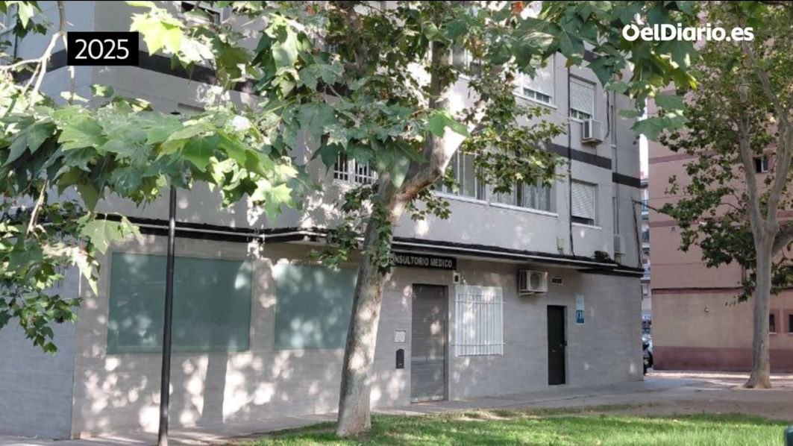

•
Partidos Politicos:
Partido Popular
Izquierda Unida
Euskoalkartasuna.org
Izquierda Republicana
Falange Española de las JONS
Coalición Popular 1983-1987
Referéndum para la ratificación de la Constitución española
Plaza Podemos -reddit.com
Podemos Navarra pasa a denominarse Podemos Ahal Dugu-Orain Bai Ahora Sí
Euskal Herria Journal
Jotake-lahaine.org
Manos Blancas
Basta YA
Lahaine.org -pais vasco
Greenpeace.org -España
Acp.Sindominio.net
R-evolucion.net -diario electronico
Marxmadera.org
|
Oligarquía forma de gobierno en manos de unas pocas personas de la misma clase social
Liberalismo
Federalismo
Federalismo -¿Qué es un estado federal?
Socialdemocracia, liberalismo progresista y extrema derecha
El ‘renacimiento’ de la socialdemocracia
Isonomía -Concepto de igualdad de derechos civiles
Proselitismo político -convencer a nuevos seguidores para alguna causa política, como una elección, una rebelión, o cualquier otro tipo de movimiento político.
¿Cómo saber a qué clase social pertenezco en España?
Anaciclosis y votaciones hispanovenezolanas
Anaciclosis -sucesión cíclica de regímenes políticos
Así nació la primera democracia en Atenas: claves revolución hace 2.500 años
República romana
Gatopardismo filosofía de quienes piensan que es preciso que algo cambie para que todo siga igual. El efecto Lampedusa
España, un Estado federal plurinacional
modificación del programa electoral del PSOE para incluir en él una referencia a la Declaración de Granada de 2013 y a la Declaración de Barcelona de 2017
en las que se reconoce la necesidad de avanzar hacia un Estado federal de carácter plurinacional
Diputación Provincial
Método votación Método Sainte-Laguë (Europa) Webster (en América)
Método votación Ley d´Hondt
Por qué Castilla-La Mancha tiene un guion en su nombre y Castilla y León no
Las 10 frases del Che Guevara (no tan grandiosas)
El barrio de Madrid que se independizó de España y pidió asilo a Fidel Castro I
El barrio de Madrid que se independizó de España y pidió asilo a Fidel Castro II
Galicia tambien se declaró República independiente del Reino de España en 1931 (gal)
¿Por qué Navarra tiene fueros y Cataluña no? La respuesta nos remite a Felipe V
Lo que todo INDEPENDENTISTA CATALAN deberia saber: ¿Ha tratado ESPAÑA mal a CATALUÑA?
La ingratitud de VASCOS y CATALANES | Santiago Ramón y Cajal [Nobel de Medicina 1906]
Acta est fabula -La función ha terminado -Lema Tabarnia
La doctrina del shock Políticas económicas capitalistas -youtube
La doctrina del shock Políticas económicas capitalistas
La “ventana de Overton” el modelo que explica cómo ideas políticas consideradas tabú en una época se vuelven aceptables en otra
La “ventana de Overton” es una teoría política que representa un ideario aceptable por el público como una ventana estrecha, afirmando que la viabilidad política de una idea se define principalmente por este hecho antes que por las preferencias individuales de los políticos.
Israel y la extrema derecha: política y mesianismo
Antisemitismo | judaísmo | sionismo
Acoso y derribo de la ultraderecha: la enseñanza de la República de Weimar
Pogromo - linchamiento multitudinario hacia un grupo particular, étnico, religioso
Pogromos antijudíos en el Imperio ruso
Victoria Kent y Margarita Nelken se opusieron al sufragio femenino: estas fueron sus razones
La Bandera Catalana: Origen y Polémica | Omnibus Dubitandum
La nueva bandera negra catalana independentista significa "luchar sin tregua"
La nueva bandera negra catalana significado -vilaweb.cat
bandera negra que usan los independentistas catalanes
ERC elimina el origen aragonés de las barras de la bandera autonómica
Manuel Azaña y su decepción con Cataluña: cómo cambiaron sus palabras [1930 a 1937]
Alejandro Lerroux Diputado por Barcelona en 1901, donde la Lliga Regionalista o la coalición Solidaridad Catalana
crecían entre la burguesía mientras los trabajadores se movían entre el republicanismo federal y el sindicalismo revolucionario,
desplegó una retórica populista, patriotera y anticlerical para atraerse el voto obrero
Ningún texto constitucional avala la autodeterminación catalana
Resolución 1514 (XV) de la Asamblea General de las Naciones Punto 6
Jaungoikoa eta lege zaharra / Dios y la ley vieja lema de Sabino y Luis Arana
Españoles o inmigrantes: las cifras reales de quién recibe más ayudas al alquiler
Todos los muertos de Stalin
Grupo de Estudios Estratégicos (GEES) think tank liberal derecha
Taqiyya, mentir en nombre de Alá | GEES
|
Partido Popular notas.:
Ester Muñoz Portavoz PP Congreso
Ester Muñoz en 2019 sobre las políticas de Memoria Democrática: “Quince millones para desenterrar unos huesos”
Ester Muñoz llamaba despectivamente "desenterrar unos huesos" a rescatar de las cunetas del olvido a los fusilados del franquismo.
Hoy Feijóo la ha nombrado portavoz del PP en el Congreso. Ester la moderada. Moderadamente fascista...
Los tuits borrados de la nueva portavoz del PP: de la "desfranquistación" a su apoyo a Casado o los "120 mamarrachos"
Tellado
La mano derecha de Feijóo, Miguel Tellado, le ofreció un pacto a Koldo en marzo de este año
Alma Ezcurra Madrileños por el mundo
Alma Ezcurra, la “liberal” criada en el PP de Madrid elegida por Feijóo para reformular la ideología del partido
La eurodiputada y miembro de la dirección de Ayuso accede al núcleo de poder del PP para definir la “identidad” de su partido con un discurso “sin complejos” ante el empuje de Vox
En ningún lugar donde gobierne el PP se puede coaccionar a una mujer durante su embarazo"
"Ningún médico, y mucho menos un político, puede interferir en la toma de decisiones de una mujer"
ALBERTO NÚÑEZ FEIJOO, en enero de 2023, !!Y EN TELEMADRID!!
PP y Vox reparten más de 135.000 euros a Vito Quiles, Javier Negre o Ndongo desde la Diputación de Ciudad Real
El digital OKDiario dirigido por Eduardo Inda y conocido por su estilo sensacionalista y la publicación recurrente de informaciones falsas o no verificadas, ha recibido 39.931,48 euros.
Muy cerca en la lista figura El Debate publicación impulsada por la Asociación Católica de Propagandistas a través de Ediciones Católicos y Vida Pública S.L.U.
que ha obtenido 31.059,55 euros. El listado de medios beneficiados se completa con Periodista Digital dirigido por Alfonso Rojo y del que forma parte Bertrand Ndongo con 15.050,99 euros; Libertad Digital fundado por Federico Jiménez Losantos con 6.879,85 euros; y The Objective que ha recibido 11.997,99 euros con IVA.
31 causas judiciales que cercan a Génova 13 y a la Puerta del Sol
Vigésima actualización del monográfico: el PP de Feijóo y Ayuso, en el banquillo
El PP intensifica el control de las teles autonómicas mientras carga contra TVE
Modifican leyes, imponen perfiles afines en Balears, Comunitat Valenciana y redoblan la presión sobre sus medios públicos en Galicia y Madrid
Javier Santacruz Este empresario y agricultor es economista jefe del Institut Agrícola la patronal agraria más antigua de España,
también es asesor “principal” del ‘think tank’ Civismo de marcada línea ultraliberal,
y en 2023 se incorporó al equipo asesor de la fundación del PP, Reformismo 21
Grupo de Estudios Estratégicos (GEES) think tank liberal derecha
Fundación Civismo think tank liberal derecha
El lobby de ultrarricos que fichó a Lasquetty premia al ex juez García Castellón
Reformismo21 think tank liberal derecha
el tercer reinicio de la fundación del PP que no puede con FAES
Feijóo pide a su partido salir de “trincheras y capillas” en la deslucida presentación del nuevo nombre de su 'think tank', cuyo patronato se desconoce y del que solo
se han deslizado nombres de un Consejo Asesor sin funciones reales en el que destacan exministros o el exentrenador de Nadal
Reformismo21 antes fue Concordia y Libertad Mucho antes se llamó Humanismo y Democracia Nombre remozado (mismo NIF)
think tank con el que Feijóo pretende llenar el vacío que dejó FAES cuando José María Aznar rompió con Mariano Rajoy y se la llevó.
Manuel Cobo le dijo a Manjón que "cualquier día tendrían que hacer un monumento para las putas”
Se presen ta el 23J al Congreso por el PP en Madrid
Las amargas lágrimas de Pilar Manjón
Cuando Manuel Cobo -el fiel secuaz de Gallardón- dijo a Pilar Manjón que "cualquier día tendrían que hacer un monumento para las putas de Montera"
Ernest LLuch ministro PSOE Sanidad | Ley del aborto
Unas derechas camino de dejar de ser los conservadores presentables y europeos que eran con UCD para converger
y radicalizarse en la Alianza Popular franquista que se disfrazaría de Partido Popular a final de la década.
El PP votó en 1.981 contra la ley del divorcio
en 1.983 contra la ley del aborto
en 2.005 contra la ley del matrimonio entre personas del mismo sexo
en 2.020 contra la ley de eutanasia y muerte digna.
La ley del divorcio no te obligaba a divorciarte.
La ley del aborto no te obligaba a abortar.
Maroto no se casó obligado por la Ley de matrimonios igualitarios.
La ley de eutanasia no te obliga a dejar de disfrutar de una muerte lenta, dolorosa e irremediable si es tu deseo.
¿Qué opinará el obrero de derechas?: estos son los derechos de los trabajadores a los que se opone el PP
Bea Fanjul por sus palabras sobre la “cultura del esfuerzo”: “Afiliada al PP desde los 18
Ruiz de Gordoa (Gobernador civil fue el 'cabeza de turco' de la Operación Montejurra mientras la amnistía salvaba a Fraga y Arias Navarro
El máximo mando de la 521 Comandancia de la Guardia Civil al consignar que en la cima había "unos cien guerrilleros de Cristo Rey provistos de armas automáticas"
como también las detectaron –al menos siete armas cortas y un subfusil ametrallador– entre los atacantes al Monasterio de Irache y, pese a ello, no se produjeron detenciones.
De los informes sobre lo ocurrido se desprende que todo salió mal en la Operación Reconquista
Ruiz de Gordoa llegó a reconocer que "la facción de D. Sixto llegó tarde
Ruiz de Gordoa fue el 'cabeza de turco' de la Operación Montejurra mientras la amnistía salvaba a Fraga y Arias Navarro
Fraga organizó la movilización de 5.500 ultraderechistas que acabó con dos asesinados en Montejurra
7 fundadores de Alianza Popular y 7 ministros franquistas
Antonio Hernández Mancha Presidente de Alianza Popular 1987 sin ser Diputado
Más de 900 investigados por corrupción en el PP
De la A a la Z: todos los casos de corrupción del PP
Anexo:Políticos de España implicados en casos judiciales - Wikipedia
El cinismo del partido mal llamado popular en 16 imágenes.
Más de 140.000 euros en ‘puticlubs’: el PP, líder en gasto en prostitución
Lo que Casado esconde: juergas’ y orgías -algunas sadomasoquistas-, con cocaína y alcohol que dirigentes ‘populares’ pagaron con dinero público (2020)
|
María Guardiola enchufó a su primo una semana después de llegar al Gobierno: de churrero a su chófer oficial elplural.com
María Guardiola enchufó a su primo una semana después de llegar al Gobierno: de churrero a su chófer oficial meneame.net
Estadísticas: Partidos más corruptos, Comunidades más corruptas, coste de la corrupción en España... Casos-Aislados.com
Inmaculada Sánchez, ALTO CARGO DEL PP en Extremadura, está siendo INVESTIGADA Por ESTAFA, ALZAMIENTO DE BIENES Y FALSEDAD DOCUMENTAL. La acusan de provocar la quiebra de dos hospitales y perdidas de 20 millones.
Hoy dirige la dependencia en Badajoz. Porque ellos "saben gobernar"
Las medidas de Feijóo sobre inmigración: desde las que ya existen a las que recortan derechos (y hasta corrigen a Rajoy)
Toque de queda y "vacunación social": el modelo contrario al de Madrid que ha hecho que la Comunitat Valenciana domara la pandemia
¿El 8-M, el culpable de todos los males? Viajemos al pasado para analizar la demagogia de la derecha con el coronavirus
Un documental muestra con archivos inéditos 'fake news' del franquismo que aún perduran
Partido Popular -corrupcion
Historia del famoso misil para matar a Aznar
Más de dos tercios de la colosal deuda pública española procede de gestores del PP
Las comunidades del PP reclaman 1.800 millones más de déficit tras perdonar 2.200 millones en impuestos
Rajoy asalta la hucha de las pensiones
Pablo Casado promete crear empleo como lo creó Fátima Báñez
bajar la luz como la bajó José M. Soria
mejorar la sanidad como la mejoró Ana Matos
y bajar los alquileres mal vendiendo VPO a Fondos Buitres como hizo Ana Botella
Dice que lo hicieron una vez y que lo volverán a hacer.
El 11M de 2004 sufrimos el mayor atentado terrorista de la historia en suelo español
Aznar, sus secuaces y todo el Partido Popular acusaron de la autoría a ETA a sabiendas de que era mentira.
Fue Al Qaeda.
En 2003. Aznar nos había metido en una guerra inventada por EEUU
En 2006 se produjo un accidente de metro en Valencia. Murieron 43 personas.
Apenas si hubo investigación y no se responsabilizó de nada ni a técnicos ni a cargos políticos de la Generalitat Valenciana.
¿Culpable? El conductor.
En 2012 sucedió la tragedia del Madrid-Arena. Murieron 5 chicas.
Se duplicó el aforo del recinto municipal, falló el protocolo de emergencia y existía un acuerdo que daba preferencia a la organizadora del evento.
Durante la pandemia de COVID, Isabel Díaz Ayuso, presidenta de la CAM responsable de las
residencias para mayores, creó un protocolo que abandonaba a l@s ancian@s a su suerte.
7.291 mayores murieron en Madrid sin atención médica mientras Ayuso concedía mordidas a su hermano. 286.000€ ganó con sus mascarillas.
En el Ayto. de Madrid, el PP de Almeida siguió el ejemplo con Luis Medina y Alberto Luceño: 6.000.000 € en material sanitario defectuoso.
SOBRE LA ANULACIÓN DE LA PLUSVALÍA COMO IMPUESTO MUNICIPAL POR EL CONSTITUCIONAL
Es necesario destacar en primer lugar que para hacer una valoración adecuada de la sentencia del Constitucional que anula la aplicación de la Plusvalía como impuesto municipal es conocer la sentencia del Constitucional que no se ha publicado todavía.
El impuesto sobre el incremento del valor de los terrenos de naturaleza urbana (Plusvalía) es de 1988. Apareció publicada en el boletín de las Cortes el 16 de septiembre de 1988.
Luego ha habido tres modificaciones: En 1998, en 2002 y en 2004 (todo ello en etapa de gobiernos del PP)
Desde entonces no se ha vuelto a tocar hasta el 9 de marzo de 2018 fecha en la que la mesa de la cámara aprueba admitir a trámite y trasladar al Gobierno una proposición de Ley presentada por el Grupo Parlamentario del PP para modificar el texto refundido de la Ley Reguladora de Haciendas Locales del 2004.
El Gobierno del PP podía haber impulsado un RDL y no quiso hacerlo. Optó por un camino más enrevesado y más largo para hacer la reforma.
Por lo tanto, también las últimas modificaciones de la Plusvalía fueron realizadas por Gobiernos del PP (hay que destacarlo).
Al PP hay que pararlo directamente cuando algunos líderes y alcaldes de este partido protestan contra el Gobierno actual por la sentencia del Constitucional. El varapalo es a una Ley de PP.
Los gobiernos del PP, todos ellos de la etapa Aznar y Montoro, realizaron textos y adoptaron medidas declaradas ahora como inconstitucionales por sentencia del Constitucional.
El equipo de la ministra de Hacienda está trabajando un borrador técnico de anteproyecto desde antes del verano que está a punto de de ser llevado a un próximo Consejo de Ministros para su aprobación. (Se ha adelantado la sentencia del Constitucional sobre el impuesto de la Plusvalía).
La Plusvalía es un impuesto Potestativo igual que el impuesto de Construcciones. Hay ayuntamientos que no lo aplican. Y los ayuntamientos deciden también los tramos de aplicación del impuesto. No es igual en todos los sitios.
Aparecen en el registro de Hacienda 3.737 municipios (de régimen general, excluidos Pais Vasco y Navarra) en el 2021 que aplican la Plusvalía sobre 8.131 ayuntamientos existentes. Cerca del 50% de los ayuntamientos no aplican la Plusvalía. Muchos de ellos son ayuntamientos pequeños del mundo rural.
No vamos a consentir que el PP culpe al Gobierno de Sanchez por que el Constitucional haya anulado un impuesto aprobado unilateralmente por el Gobierno de Aznar (PP) y que la crítica esté relacionada con el Gobierno de Sánchez por no haber modificado un precepto legal de un impuesto aprobado en su momento por los diputados del PP. Es una paradoja.
Es necesario destacar el compromiso adquirido por el ministerio de Hacienda con los ayuntamientos, y que ha sido publicado a los pocos minutos de conocer la sentencia del Constitucional que anula el impuesto municipal de la Plusvalía en el siguiente sentido:
1- Hacienda revisará el Impuesto sobre el Incremento del Valor de los Terrenos de Naturaleza Urbana para garantizar su constitucionalidad y la financiación de los ayuntamientos
2- El Gobierno, a la espera de la publicación íntegra de la sentencia, ultima un borrador legal para ofrecer seguridad jurídica a contribuyentes y entidades locales.
3- El Ministerio de Hacienda y Función Pública analizará la sentencia del Tribunal Constitucional que declara la inconstitucionalidad y nulidad de los artículos 107.1 párrafo segundo, 107.2 A) y 107.4 del texto refundido de la Ley de las Haciendas Locales.
4- Los artículos declarados inconstitucionales hacen referencia al cálculo de la base imponible del Impuesto sobre el Incremento del Valor de los Terrenos de Naturaleza Urbana, un tributo que recaudan los ayuntamientos y cuya regulación se incluye en el texto refundido de la Ley Reguladora de las Haciendas Locales, aprobado por Real Decreto Legislativo 2/2004, de 5 de marzo.
5- A la espera de que el Tribunal Constitucional publique la sentencia, el Ministerio de Hacienda y Función Pública ultima un borrador legal que garantizará la constitucionalidad del tributo, ofrecerá seguridad jurídica a los contribuyentes y certidumbre a los ayuntamientos.
|
Gürtel | Corrupción.:
Gürtel wikipedia.org
Trama Gürtel: estos son todos los condenados tras más de una década en el caso de corrupción más sonado de España 31 de enero de 2023
Baltasar Garzón: «Hay una justicia de primera, de segunda y de tercera categoría»
Las escuchas de Garzón sobre Gürtel fueron avaladas por jueces y fiscales
Otro favor al PP del juez García Castellón elboletindeldirector@eldiario.es
El área 124 la intrahistoria de una gran corrupción Gürtel -elboletindeldirector@eldiario.es
Esperanza Aguirre, la matrioska de la corrupción
La corrupción bajo las alfombras de Génova 13
La deshonra del PP Generalitat Valenciana: tres expresidentes al banquillo por corrupción
Qué fue del clan Becerril: los cachorros de Aznar se reparten entre sumarios de corrupción y altos cargos políticos
Partido Popular utilizó al difunto Miguel Ángel Blanco para recaudar fondos y financiar la trama de corrupción conocida como #Gürtel
Cuando el PP usó el nombre de Miguel Ángel Blanco para financiarse con la Gürtel
La fundación Miguel Ángel Blanco acabó siendo parte de la trama del PP para financiar irregularmente sus campañas electorales
Chicayeyé vendedor oficial de Gotas de Alma. Diseños de Ana Garrido (denunciante Gürtel)
Todos los de la Gürtel están cayendo como moscas
12 muertes en 12 años: la maldición de la Gürtel catalan
Suicidios y muertes inesperadas o sospechosas rodean la investigación de la trama corrupta
12 muertes en 12 años: la maldición de la Gürtel traducido
Suicidios y muertes inesperadas o sospechosas rodean la investigación de la trama corrupta
La corrupción del PP ya forma parte de nuestra cultura del humor. Le cuentas a alguien lo del millón en el altillo, el Jaguar en el garaje,
el Goya en la pared, las comisiones del hermano de Ayuso y, en lugar de indignarse, se echa a reír como si formara parte de un gag de humor
|
El PP suspende de militancia al presidente y vicepresente de la Diputación y al alcalde de Fines, detenidos por la UCO
|
Montoro.:
Quién es quién en el equipo del exministro Montoro imputado por usar Hacienda para favorecer a empresas
La lista de investigados en la causa sobre su despacho privado afecta a altos cargos de Hacienda y de la Agencia Tributaria con José María Aznar y con Mariano Rajoy,
algunos acusados de modificar cambios legales para satisfacer a empresas del sector gasístico
La UCO detectó que las empresas conocían los presupuestos de Rajoy antes que el Congreso y señala a Montoro
La fiscal del caso Montoro se quejó de la pasividad de la UCO: “Los guardias civiles de Balas no quieren hacer nada”
Carmen García Cerdá protestó al fiscal jefe Anticorrupción de la pasividad de la UCO en medio del enfrentamiento que ella mantenía con Alejandro Luzón
Cristóbal Montoro, el ministro que hizo giratoria la puerta principal de Hacienda
El auto del juzgado de Tarragona dibuja cómo el despacho que fundó en 2006 se convirtió en un caladero de altos cargos de Hacienda y la Agencia Tributaria de los gobiernos de Aznar y Rajoy
que supuestamente influyeron para cambiar leyes a favor de empresas gasísticas
CODERE, MONTORO Y UNA JUEZA DE MADRID
La juez que archivó una querella contra la consultoría de Montoro es hermana de un directivo de Codere
La juez Patricia Jiménez-Alfaro Esperón archivó una querella contra la consultoría de Montoro, Equipo Económico, interpuesta en 2017 por la Fiscalía Anticorrupción. Hoy sabemos que la empresa Codere pagó 679.000 euros a la consultora de Montoro para que le hicieran leyes a medida.
Y resulta que un alto directivo de Codere es José Antonio Jiménez-Alfaro Esperón, hermano de la juez.
La juez archiva la querella contra la consultoría que fundó Cristóbal Montoro 09/04/2019
Un juez imputa a Cristóbal Montoro por beneficiar ilegalmente a empresas gasísticas siendo ministro de Hacienda
El ex titular de Hacienda y nueve altos cargos de su Ministerio habrían influido, a cambio de dinero, en la aprobación de leyes que beneficiaban
a sociedades que eran clientes de un despacho de abogados que había fundado el ministro antes de entrar al Gobierno de Rajoy
Un juez imputa a Cristóbal Montoro por beneficiar ilegalmente a empresas gasísticas siendo ministro de Hacienda meneame.net
Montoro, el de la amnistía fiscal inconstitucional.
rescató a los bancos sin obligarles a devolver el dinero. Y también hundió un banco andorrano.
el que dijo "que caiga España que ya la levantaremos nosotros"
La Audiencia Nacional da 'carpetazo' a investigar la liquidación de Banco Madrid
El juez (magistrado Fernando Andreu) ve falta de pruebas en la acusación a Fernández Díaz...
...y varios policías de crear datos falsos que tumbaron la entidad
Montoro favoreció los pelotazos de grandes figuras del PP en la "industria" del juego: www.meneame.net/c/28886688 El mejor ministro de economía de la historia, decía uno de los cabrones agraciados por esparcir la ludopatía.
La figura de paraíso fiscal de Ceuta y Melilla, con una tributación ridícula para las casas de juego, fue obra del gobierno del PP (Montoro):
|
Acciona despidió a un empleado que denunció corrupción interna a la hora de adjudicarse contratos públicos meneame.net
Acciona despidió a un empleado que denunció corrupción interna a la hora de adjudicarse contratos públicos | Actualidad Económica
Acciona, Ferrovial, OHL, Sacyr y otras constructoras amañaron concursos mientras gobernaba el Partido Popular
La CNMC multa al cártel por alterar el resultado de licitaciones de los servicios de conservación y explotación de la Red de Carreteras del Estado de 2014 a 2018
“Tú pides la comisión y luego nos la repartimos bajo mano”
El caso Naseiro fue la primera investigación judicial originada por las sospechas de corrupción en la financiación del Partido Popular
El que luego fue ministro de Aznar Eduardo Zaplana se desveló como un político obsesionado por enriquecerse
Un año después de su elección como presidente del Partido Popular, José María Aznar se vio sacudido por un escándalo de corrupción que tenía un punto en común
con lo que ocurrió años después en el PP.
Al igual que con Álvaro Lapuerta y Luis Bárcenas, el tesorero del PP estaba implicado. Se llamaba Rosendo Naseiro.
Cristóbal Montoro: historia de la política económica del PP en España
Aunque desde el PP han tratado de desligarse del pasado político de Cristóbal Montoro,
la realidad es que el exministro ha sido la cara visible de las reformas económicas más duras del Partido Popular en el Gobierno
La investigación del caso Montoro destapa la amnistía fiscal de otro ex alto cargo de José María Aznar
Fundador y socio de Equipo Económico hasta 2010 y condenado por el escándalo de las tarjetas black de Caja Madrid
|
•
Politica.:
(enlaces mios).:
|
El boletín del director La prensa del régimen
El boletín del director La impunidad de Aguirre la seguimos pagando con nuestra salud
El boletín del director La impunidad de Ayuso
“Cuando el hermano de Isabel Díaz Ayuso pegó el pelotazo de las mascarillas, el primero en caer fue el líder del PP, Pablo Casado. Con el fraude fiscal de la pareja de Ayuso, el primer condenado ha sido el fiscal general. Es parte de una larga tradición. El primer condenado por el caso Gürtel fue el juez Baltasar Garzón”.
El boletín del director Un juicio que nunca se debió celebrar
El Tribunal Supremo ha concluido el juicio contra el fiscal general sin encontrar las pruebas que buscaba.
El boletín del director El juez Peinado amenaza a elDiario.es con una querella y exige 50.000 euros por una entrevista a Óscar Puente
El boletín del director Retrato de un Parlamento con mentiras al fondo
El boletín del director Cotizar es un derecho, no un castigo
@sanchezcastejon VOL 2 Trump meme
Mientras miles de andaluces esperan sus cribados, la AECC guarda silencio. ¿Por qué?
Porque su presidenta, Carmen González, fue diputada del PP.
Porque su vicepresidente, Antonio Alarcó, también.
Porque la AECC depende de convenios millonarios con gobiernos como el de Moreno Bonilla.
De Canarias a Vigo, pasando por Granada: así recibe Ryanair fondos públicos a través de subvenciones camufladas
@sanchezcastejon VOL 2 Trump meme
Xabier Fortes muestra el protocolo que desmiente que el cribado del cáncer de mama sea culpa de María Jesús Montero meneame.net
Xabier Fortes muestra el protocolo que desmiente que el cribado del cáncer de mama sea culpa de María Jesús Montero elplural.com
Xabier Fortes muestra el protocolo que desmiente que el cribado del cáncer de mama sea culpa de María Jesús Montero
Concretamente la página que muestra es la 78 del PDF completo
Madre mia los quinto columnistas
Cuando Pablo Iglesias era Vicepresidente del Gobierno ¿Qué hizo por los ancianos que morían en las residencias en la más absoluta soledad y sufrimiento, gracias a la frutera?
Qué pasó para que existiera un fallo en el servicio de pulseras de control de maltratadores y qué debe preocuparnos
Igualdad asegura que el Poder Judicial no le advirtió del fallo que afectó a las pulseras antimaltrato
Raúl Incertis: "A los sanitarios que salimos de Gaza, la ONU nos considera observadores internacionales"
Médico de urgencias y anestesista, vuelve al Hospital de Requena, en Valencia, tras cuatro meses en el Hospital Nasser. Regresa con estrés postraumático, pero quiere volver.
Diariomedico.com con usuario
El temible asesino izquierdista resulta ser Tyler Robinson: blanco, mormón, hijo de un sheriff, criado entre armas y literalmente vestido de Trump para Halloween. Básicamente, el paquete inicial del Partido Republicano.
Esto es lo que siempre pasa: los republicanos culpan inmediatamente a la gente negra, a la gente queer, a los inmigrantes, a cualquiera que odian, y luego resulta que el tirador venía directamente de su propia cultura estadounidense, de banderas y devotos de las armas. No necesitan buscar villanos en el otro lado del espectro político; el monstruo es el sistema que construyeron y del que presumen.
No negro.
No trans.
No es musulmán.
No es un inmigrante.
No es demócrata.
Conoce al asesino de Charlie Kirk, Tyler Robinson.
Un hombre blanco, cristiano, conservador y republicano con un arma... otra vez.
Un hijo de una alcaldesa del PP lanza explosivos caseros contra una sede del PSOE mientras dentro había un acto de memoria democrática
Por mucho menos ha habido juicios por terrorismo
La Policía detiene al hijo de una alcaldesa cántabra del PP por el ataque a una sede del PSOE
El Sindicato Unificado de Policía | SUP tras una de las peores noches en Ferraz con 30 policías heridos, 45 en 15 días
y emitieron un comunicado afirmando que era manifestantes pacíficos
Ayer con 22 policías heridos, el SUP dijo que fueron unas protestas violentas y antisistema.
En las de Ferraz no pidieron la dimisión de Ayuso o las explicaciones de VOX por fomentar las manifestaciones.
¿Como es posible que no suspendan a @PepaBueno de @rtve ? Imaginaos que le hacen la misma entrevista a @IdiazAyuso en @telemadrid ¡¡No habría durado un día!!
#PedroSánchezRTVE contestando en el Telediario de TVE a todos los temas que le plantea Pepa Bueno sin escurrir el bulto como hacen otros. No se merece el escarnio al que es sometido constantemente. @La1_tve @PepaBueno @sanchezcastejon
Así censuraba y ponía tertulianos en RTVE Soraya Sáenz de Santamaría
Durante el Gobierno de Mariano Rajoy, todo el mundo sabía que Vicepresidenta, Soraya Sáenz de Santamaría, manejaba a su antojo a los medios de comunicación
En el Madrid de la libertad, la censura opera igual. Con la misma desvergüenza e impunidad.
La primera ley que aprobó Ayuso tras lograr la mayoría absoluta fue para controlar Telemadrid
para poder despedir a su director general, José Pablo López –hoy presidente de RTVE–, que había sido nombrado por mayoría de dos tercios de la Asamblea de Madrid y que logró mejorar notablemente la audiencia y la credibilidad de esa televisión pública. Había que echar a periodistas como Silvia Intxaurrondo por hacer “preguntas que no se le hacen a un presidente autonómico”, como se quejó en directo la propia Ayuso cuando la periodista preguntó de dónde saldrían los médicos para el hospital Zendal –buque insignia de la propaganda, hoy semiabandonado–.
Así defendía Ayuso colaborar con Huawei en telecomunicaciones: "Referente tecnológico"
Directora del Gabinete del Director del Gabinete de la Presidencia del Gobierno de Rajoy (2012)
Vuelve el caos a los controles de Barajas el primer fin de semana de verano 4 julio 2017
La T-4 ha registrado nuevas aglomeraciones de pasajeros en el control de pasaportes durante el primer fin de semana de julio
Un concejal de Podemos de un municipio de Madrid (Humanes) detenido en Toledo por agresión sexual a un niño de tres años
|
Manos limpias.:
El Supremo acusa a Manos Limpias de pedir una "macrocausa general" contra el Gobierno para tener "información sensible"
El líder de Manos Limpias se inventa que el Gobierno esconde "20 muertos" de la DANA y se querella contra la jueza
El PP tiene a sueldo en el Senado al abogado de Manos Limpias en la causa contra el Fiscal General del Estado
La Guardia Civil no encuentra indicios de delito en las acusaciones de Manos Limpias contra Begoña Gómez
Manos Limpias admite que la denuncia contra Begoña Gómez se basa “solo” en recortes de prensa que podrían ser falsos
El Supremo prohíbe desde hace años abrir causas como la de Begoña Gómez basadas solo en noticias periodísticas
Darwinismo social y financiero en Vistalegre
Lo de Melody en RTVE va a parecer una broma si triunfa el Madrid Economic Forum que se celebra a comienzos de junio con ponentes como
Mario Conde, Marcos de Quinto, Albert Rivera o Iker Jiménez y para el que hay entradas hasta por 7.500€
Riazor estrena el contador de la vergüenza: A Coruña recuerda los niños asesinados en Gaza
El Constitucional refuerza la protección de artistas y humoristas ante procesos judiciales abiertos por querellas ultras
La sentencia que anula la condena de cárcel impuesta a 'Anónimo García' por crear un falso Tour de La Manada de Pamplona
cuestiona a jueces como el que encausó al humorista Quequé por hacer una broma sobre el Valle de los Caídos
El PP y China: una “oportunidad” cuando fueron Feijóo, Rajoy y Cospedal, pero “entrega al comunismo” si viaja Sánchez
Una diputada del PP de Extremadura cobró las ayudas de la consejera de Agricultura por una parcela que no aparece en su declaración
Churchill en la Casa Blanca sin traje porque está en guerra Nadie le hizo preguntas.
Feijóo se sube a los misteriosos trenes de Marruecos
El líder del PP se apunta a tergiversar una noticia agitada por la extrema derecha sobre un contrato para financiar la venta de trenes por empresas españolas a Marruecos.
Palacete PNV ahora dice que lo compraron en septiembre de 1936. Teniendo en cuenta que en agosto todavía no se habían decidido por qué bando apoyar en la guerra
Esta es la historia.: Cuando el PP nos ofreció la devolución del palacio de Marceau al PNV Iñaki Anasagasti
Por qué dimite Justin Trudeau qué pasa ahora y qué tiene que ver Trump en ello
viceprimera ministra, Chrystia Freeland, abandonó el cargo, criticándole públicamente y cuestionando su capacidad para hacer frente a un segundo mandato de Donald Trump
El escándalo de las bandas de "captación sexual" acecha a Starmer
El caso ERE: ¿quién malversó, y cuánto? | Griñán, Chaves y Zarrías
La productora Alma de Iker Jiménez y Carmen Porter
tiene vínculos con Unicorn Content de Ana Rosa Quintana y con 60 DB Entertaiment de Risto Mejide
La Iglesia vuelve a 'reventar' la caja de la Renta, y recoge 382 millones de euros en su casilla
El compromiso del 41º Congreso PSOE es avanzar hacia el establecimiento de la autofinanciación de la Iglesia Católica.
El Gobierno asume que no puede romper por su cuenta el Concordato con la Santa Sede
Los acuerdos entre el Reino de España y la Santa Sede , no son una ley estatal que se pueda modificar siguiendo los trámites legislativos ordinarios.
Al tratarse de convenios de naturaleza internacional, están sometidos a lo dispuesto en los artículos 94 y 96 de la Constitución.
Toca renegociar el Concordato con la Santa Sede acuerdo impulsado por Mayor Oreja
Marimar Blanco carga contra el Gobierno por “beneficiar” a etarras como 'Txapote', cuya pena no se reducirá por la reforma
El epitafio del régimen corrupto de Zaplana
Zaplana, segundo presidente del PP de la Generalitat valenciana y tercer ministro de Aznar condenado a prisión
El exnúmero dos del expresidente del Gobierno Francisco, Álvarez Cascos, está pendiente de sentencia por presuntamente haberse apropiado de fondos de Foro Asturias
Los abusos escondidos detrás de la caída de las llegadas irregulares a Italia que elogia Feijóo ante Meloni
Si yo fuera Nicolás Maduro, reconocería como legítimo rey de España a Su Majestad Don Carlos Javier de Borbón-Parma.
Titular dinástico del carlismo y heredero de Su Alteza Real Don Carlos Hugo de Borbón-Parma, de Dios guarde a su diestra
José Luis Escrivá y la ley Falcon
Desde la derecha, con el nombramiento de Escrivá, aplican el doble rasero habitual. Lo podríamos llamar la ley Falcon
ese avión oficial en el que han viajado todos los presidentes democráticos pero cuyo uso solo está en cuestión cuando gobierna la izquierda
Los ayuntamientos desaprovechan los fondos europeos y solo crean el 21% de las plazas de guarderías posibles
Almeida renuncia a fondos europeos transferidos a Madrid para rehabilitar viviendas mientras se queja en Bruselas
El Gobierno reparte el fondo millonario para escuelas infantiles que devolvió Andalucía entre 4 comunidades del PP y 3 del PSOE
Andalucía devuelve 119 millones de fondos europeos para guarderías públicas y protege así su red de centros privados
Andalucía devuelve 119 millones de fondos europeos para guarderías públicas y protege así su red de centros privados
El PSOE andaluz destaca que el Gobierno "sostiene" la educación pública mientras Moreno "avanza en la privatización"
Los halagos del PP a Escrivá cuando lo nombraron para la Airef: “Tiene el perfil idóneo”
Las críticas del partido de Feijóo contra la elección del ministro para el Banco Central contrastan con la defensa de su currículum que hacían en 2014
Carlos Mazón se aplica una subida de sueldo a pesar de que en la oposición exigía a Ximo Puig que se lo congelara
Quien lea esto creerá que es el pacto PSC-ERC Pues no.
Es el programa electoral del PP para el año 2012, con Alicia Sánchez Camacho como candidata
"Financiación singular", "incremento de los impuestos cedidos", "modelo propio con capacidad normativa dentro de la LOFCA", "gestión de la totalidad de los impuestos", "principio de ordinalidad", son términos de ese programa.
Lo propusieron entonces y reniegan de ello ahora.
Son puro cinismo.
No, "Bruselas" no ha pedido al Gobierno español que reduzca más de 400.000 cargos públicos
No hay pruebas de que en España haya 400.000, 470.000, 445.568 o 450.000 políticos cobrando un "sueldazo”
|
Feminismo, acosadores.:
Casos PP.:
Caso Nevenka: El entonces alcalde de Ponferrada (León), Ismael Álvarez, fue denunciado por acoso sexual por su exconcejala, Nevenka Fernández. Se abrió juicio oral en 2002 y fue condenado por acoso sexual a nueve meses de cárcel, multa e indemnización. Fue la primera condena en España contra un político por este tipo de delito.
Agresión continuada del exalcalde de El Pinar (Granada). Francisco Titos acosó y agredió sexualmente a una concejala de su propio partido
Tras un juicio, en 2024 fue condenado por acoso sexual y agresión continuada. Pena de prisión y prohibición de acercamiento ni comunicación durante 5 años.
Alcalde de Estepona (Málaga). José María García Urbano fue denunciado por un funcionario del Ayuntamiento por presunto acoso sexual
(amenazas de perder su puesto de trabajo si no accedía a “relaciones sexuales”). Se abrieron diligencias previas en el juzgado. El caso se encuentra aún hoy en fase de investigación, por lo que no hay condena hasta ahora, pero el alcalde sigue en su puesto sin que el PP haya hecho nada.
Alcalde de Algeciras. El senador y alcalde de Algeciras (Cádiz), José Ignacio Landaluce, fue señalado públicamente mediante la difusión de capturas de chats por un presunto acoso sexual a dos concejalas de su municipio.
Las concejalas implicadas negaron haber sufrido acoso, aunque una de ellas llegó a relatar “puso mi mano en su miembro”. El partido activó un “protocolo interno”. Resultado: no hay denuncia judicial formal conocida porque el caso fue zanjado internamente por el partido hasta que este jueves el PSOE llevó el asunto a la Fiscalía y Landaluce anunció la suspensión temporal de militancia, su dimisión como presidente del Partido Popular de Algeciras y la renuncia a todos los cargos orgánicos que ocupaba tanto en la ejecutiva regional como en la nacional del partido.
Caso Paloma Lago. Alfonso Villares, entonces conselleiro del Mar de la Xunta de Galicia, fue denunciado por la presentadora Paloma Lago por una presunta agresión sexual, con hechos que habrían ocurrido en diciembre de 2024. Ante la denuncia, cuando estaba investigado por el Tribunal Superior de Xustiza de Galicia (TSXG), Villares presentó su dimisión como conselleiro en junio de 2025 y renunció a su condición de aforado para que el procedimiento se tramite en un juzgado ordinario (el de Ferrol). La denuncia se saldó con un cierre de filas institucional en apoyo del investigado y un clamoroso silencio sobre los derechos de la presunta víctima. El Gobierno gallego decidió escenificar su apoyo a Villares con mensajes elogiosos, agradecimientos, aplausos e, incluso, un abrazo ante las cámaras del presidente de la Xunta, Alfonso Rueda, para refrendar a su amigo, colaborador y compañero.
Abusos sexuales a un preso tutelado. El exconcejal del PP de Palma de Mallorca Javier Rodrigo de Santos fue condenado en 2021 a dos años de prisión por la Audiencia Provincial de Madrid por abusos sexuales a un preso al que debía tutelar como coordinador de la ONG Horizontes Abiertos.
El tribunal rechazó el recurso del ex edil del Partido Popular en Palma contra su condena por asaltar sexualmente al recluso mientras trabajaba para la Fundación del Padre Garralda, su segunda sanción penal por hechos similares.
El alcalde de Jérica y exasesor de la Diputación de Castelló imputado por acoso sexual a menores: “El PP lo sabía”
El PSPV acusa a Juan Francisco Pérez Llorca, president de la Generalitat y secretario general del PP valenciano, de “encubrir” al investigado durante meses
El PP extremeño ocultó la denuncia de una concejala por el “trato machista” de su alcalde: “Aguanta, ya sabes cómo es”
elDiario.es accede a documentación que revela los intentos de una edil de Navalmoral de la Mata por informar a la cúpula del partido de la situación con el regidor Enrique Hueso y las evasivas de la dirección regional del PP de María Guardiola: “El partido lo ha tapado y ni puedo ni quiero aguantar más”
Vox.:
Vox investiga a su portavoz en Xàbia por acosar sexualmente a una empleada
La instructora del expediente ha recabado testimonios en el ayuntamiento y ha constatado las humillaciones y el hostigamiento que infligió el concejal José Marcos Pons
a la asesora, quien dejó el trabajo hace unos meses
Javier Esteban, el jefe de redes de Vox denunciado por agresión sexual a un menor: “Estamos hartos (…) Llevo sin mojar dos semanas porque no se me pone erecta”
PSOE.:
El PSOE investiga dos denuncias por acoso sexual y laboral contra el número dos del partido en la provincia de Valencia
Una mujer identificada con nombre y apellidos ha presentado sendas denuncias contra Toni González también alcalde de Almussafes
Bernabé afirma que el PP no cuenta con "ninguna clase de protocolo" por acoso machista y afea a Llorca sus "lecciones"
Sumar.:
Martiño Ramos, el profesor español condenado por violar a una alumna que fue detenido en Cuba
Martiño Ramos Soto, el profesor de música y ex cabecilla de En Marea condenado a 13 años y seis meses de prisión por abusar «sádica y violentamente» de una alumna de 12 años
|
"ley del sólo sí es sí"
Los jueces del Supremo contradicen su propia doctrina para avalar las rebajas por la ley del 'solo sí es sí'
Tras descubrir el derecho transitorio y las horquillas de penas, algunos caerán hoy en lo que son sentencias firmes. Han estado computando las que no lo eran.
Computar y legislar en caliente.
Un TSJ revoca una rebaja de penas por "ley del sólo sí es sí"
Tribunal autonómico revoca una rebaja de penas por "ley del sólo sí es sí"
por qué la Ley 'Solo Sí es Sí' no es ninguna "chapuza" en su técnica jurídica es impecable, súper pedagógica y accesible.
Y sí, efectivamente: no es un problema jurídico. Es una campaña política contra la ley y el Ministerio de Igualdad.
34 revisiones de condenas a violadores 31 han sido en Madrid, y en los mismos 4 juzgados
La Fiscalía de Huesca rechaza la revisión de 22 sentencias por delitos sexuales
Audiencia de Sevilla rechaza revisar la pena a un violador porque implicaría más cárcel
La ley del 'solo sí es sí': rebajas en las condenas, en qué se basan los jueces, la postura de Igualdad y qué dicen los expertos
La disposición transitoria 5 del Código Penal de 1995, No permite consideraciones más favorables para el reo.
|
Justicia | Lawfare.:
El caso del hermano de Pedro Sánchez o el de Begoña Gómez tienen su réplica con familiares de Juanma Moreno Bonilla
Isabel Díaz Ayuso creó la Oficina del español solo para ponerle a Toni Cantó el cargo de director general con más de 75.000 euros al año
Esperanza Aguirre hizo lo mismo con Santiago Abascal al darle una paguita a través de la Fundación para el Mecenazgo y el Patrocinio Social
que tenía como único objetivo darle más de 80.000 euros al año
La jueza que investiga al hermano de Pedro Sánchez acumula 32 quejas en el CGPJ
Decana de los jueces de Madrid y presidenta de la APM en un acto del PP de Feijóo
María Jesús del Barco: La aritmética parlamentaria nos llevó a la investidura de Pedro Sánchez. Las matemáticas nunca traen nada bueno.
art.395 LOPJ "No podrán jueces y Magistrados en calidad de miembreos del Poder Jucidial, acudir a eventos
María Jesús del Barco la jueza conservadora a la que no le gustan las matemáticas que llevaron a Sánchez al Gobierno
La jueza decana de Madrid y presidenta de la asociación conservadora de jueces acudió esta semana al Congreso de la mano del PP para criticar al Gobierno
y advertir de que España va camino de ser una dictadura
María Jesús del Barco La jueza decana de Madrid participa en un acto del PP saltándose las recomendaciones éticas del CGPJ
La huelga de jueces no tiene soporte legal ni constitucional
Varios tribunales tratan de involucrar a Europa en una guerra inédita con el Constitucional
El PP carga contra el Constitucional y la Fiscalía en unas jornadas con jueces y fiscales en el Congreso
El fiscal descarta indicios de delito contra Oltra en el presunto encubrimiento de los abusos de su exmarido a una menor
El tercer turno, la vía para ser juez sin oposición que utilizó Juan Carlos Peinado, que desapareció en 2003
Baltasar Garzón: «Hay una justicia de primera, de segunda y de tercera categoría»
Las escuchas de Garzón sobre Gürtel fueron avaladas por jueces y fiscales
Juicios contra Baltasar Garzón fueron arbitrarios y no cumplieron con los principios de independencia e imparcialidad judicial Comité de la ONU | OHCHR
El Tribunal Supremo da por cumplida la condena del juez Baltasar Garzón
Puede perfectamente ejercer como juez. Solicitando el reingreso en la carrera judicial. Es una decisión personal, no un impedimento para ser juez.
el mismo abogado: José Antonio Choclán. ¿Abogado del PP?
Éste es el que se cargó a Garzón....siendo abogado de Correa.
Antes de tener el bufete propio, fué magistrado de la Audiencia Nacional... siendo abogado de Correa. (Correa al final fue sentenciado a 40 años y está encarcelado)
Defendió a Cristina Cifuentes, por ejemplo.
Esto recuerda mucho al "caso de Pepiño Blanco"
Un delincuente de la esfera del Pp sale de la cárcel gracias a sus mentiras .
Al final no había nada de nada.
Ya se veía venir porque el mentiroso no aporto prueba ninguna.
Solo salir de la cárcel y no cantar sobre sus contactos
La Audiencia Nacional anula las sanciones a dos exdirectores generales de la CAM por haber prescrito
Los descuidos del juez Peinado condenan varias causas al archivo mientras investiga a Begoña Gómez a toda velocidad
El magistrado deja morir investigaciones sobre el Ayuntamiento de Madrid y una presunta criptosecta a la par que impulsa media docena de líneas de investigación contra la esposa del Presidente del Gobierno
Un nuevo error del juez Peinado lleva al archivo una causa contra la supuesta criptosecta IM Academy
El segundo error que ha llevado al archivo de otra causa tiene que ver con la investigación a IM Academy un sistema piramidal que reclutó a miles de jóvenes con la promesa de hacerlos ricos con criptomonedas. Y en este caso ni siquiera ha sido necesario que una instancia superior como la Audiencia Provincial constate que se saltó los plazos legales de instrucción.
A Juan Carlos Peinado se le han pasado los plazos de instrucción. Sucedió hace unos días con un caso de presunta malversación en la Empresa Municipal de Transportes de la capital
Peinado investigaba desde 2023 si la Empresa Municipal de Transportes (EMT) de Madrid, dependiente del Ayuntamiento que comanda José Luis Martínez-Almeida
malversó dinero público al firmar un contrato de patrocinio con OkDiario para unas jornadas de sostenibilidad en 2022 por 72.600 euros IVA incluido cuando, tal y como denunció Podemos un año antes un evento similar había costado una cuarta parte.
Los audios de Villarejo ignorados por el juez sitúan a Cospedal en la Operación Cataluña: "Vicky cobra de la Policía"
|
CGPJ
Acuerdo entre PP y PSOE para renovar el Poder Judicial
Consejo de Europa considera "crítica" situación provocada por bloqueo del CGPJ en España
Los países con el modelo de CGPJ que Bruselas impone a España son los que generan menos confianza en sus jueces
Cómo es el sistema de elección de vocales del CGPJ que Bruselas quiere cambiar?
Cómo se elige al Consejo General del Poder Judicial en España y cómo quiere modificarlo el Gobierno
Aznar, Rajoy, Casado y Feijóo: el PP siempre bloqueó el Poder Judicial cuando no tuvo mayoría
El PP logra su objetivo de bloquear el Poder Judicial hasta las generales
El juez Santiago Vidal: "Un tercio del colectivo judicial es del Opus Dei"
|
Alemania 1932: Un curioso “precedente” de la “Movida Madrileña”
Aprobada nueva Ley de Memoria Democrática que declara ilegal dictadura franquista
Parlamentarios y altos cargos del PP dirigen una fundación contra el aborto
Alfonso Rueda un político gris siempre a la sombra de Feijóo
Inflación en Alemania se dispara a 7,3 % en marzo, su nivel máximo en 40 años
Gobierno desmiente bulo eliminación Filosofía y la reforzará en Bachillerato
Gobierno desmiente bulo eliminación Filosofía y la reforzará en Bachillerato
Soluciones para el conflicto de Ucrania
"Si no tienes cuidado, los periódicos te harán odiar a las personas que están siendo oprimidas y amar a las personas que están oprimiendo". - Malcolm x
Soluciones para el conflicto de Ucrania
La audiencia del Papa a Yolanda Díaz entusiasma a la izquierda Enric Juliana Ricart
|
Agencia Internacional de la Energía “beneficios caídos del cielo” para las eléctricas por el gas
Determinantes del precio de la electricidad en España - INE PDF
El precio de la luz marca este martes un nuevo récord: 130,53 euros
El precio de la luz cuarto récord consecutivo por encima de 140 euros/MWh
Estado deberá devolver más de 1.400 millones a eléctricas por un decreto del PP anulado Supremo
Ofensiva parlamentaria del PP para rebajar el IVA de la luz del 21 al 10% enero 2021
PP en contra rebajar el IVA de la luz del 21 al 10% julio 2021
Dos tribunales constatan que ni Casado ni Cifuentes cursaron sus másters
Estado de Alarma y Derechos fundamentales
Sentencia TC sobre Declaración Estado de Alarma Comentario
Los efectos de la inconstitucionalidad del estado de alarma
La inconstitucionalidad del primer estado de alarma ¿anula las sanciones?
Argumentos monárquicos en el PSOE republicano
Ley Celaá desmintiendo bulos
Ley Celaá Qué sabemos del mensaje sobre el cierre de colegios.
Vídeo: 'LaSexta Clave' desmonta las cuatro mentiras de la derecha sobre la ley Celáa
Ni el castellano desaparece de Cataluña, ni los colegios de educación especial cierran, ni se cargan la religión, ni eliminan la escuela concertada
Bundestag socialdemócrata Olaf Scholz nuevo canciller Alemania con apoyo de Verdes y Liberales
La derecha griega gana con claridad a Tsipras y apunta a nuevas elecciones para garantizarse la mayoría absoluta
Politikon.es -weblog político
Cuanto vale tu voto -por provincias
Los expertos coinciden: el sistema electoral perfecto no existe
Zapatero.:
Felipe González mientras sigue despreciando a Zapatero salió del Gobierno tras Filesa, Roldán, los GAL y con medio Ministerio del Interior entrando en prisión.
Mientras Zapatero puede presumir de haber acabado con ETA sin recurrir al terrorismo de Estado y también de presidir el único Gobierno de la historia
reciente sin ningún ministro condenado o procesado por corrupción
Zapatero Retrato de un presidente en 20 leyes
Zapatero Retrato de un presidente en 20 leyes (12ft.io/proxy)
2004 Ley de Violencia de Género
Zapatero Retrato de un presidente en 20 leyes
Zapatero Retrato de un presidente en 20 leyes PDF mio
Que venga el ejército
Que venga el ejército aunque ya esté y mañana nadie se acuerde de que estuvo. Y así, sin saber gestionar su propio territorio y con España convertida en cenizas, hace su agosto el Partido Popular de Alberto Núñez Feijóo
José Luis Rodríguez Zapatero imaginó la UME una noche de insomnio en la que la nieve colapsó por completo la carretera de Burgos en 2004
Los comunistas vendrán y os quitarán vuestra casa -Twitter
Referéndum para la ratificación de la Constitución española
Felipe González llegó al poder gracias a CiU.
Aznar llegó al poder gracias a CiU.
Zapatero llegó al poder gracias a, entre otros, ERC.
Rajoy llegó al poder gracias al PNV.
|
Concierto catalan
Madrid recauda el 44% de los ingresos y hace imposible un consorcio fiscal común
Madrid aporta 3.000 millones de euros más que Cataluña al Fondo de Garantía, según los datos de balanzas fiscales
Las últimas balanzas oficiales, elaboradas para todo el territorio nacional con una metodología conjunta de carga-beneficio, se refieren a 2014 y constatan que Madrid y Cataluña son las regiones con mayor déficit fiscal, es decir, con mayor diferencia entre lo que aportan y lo que reciben.
PP sobre miembros PSOE en organismos Públicos Estado
CIS: el hermano de Montoro
Paradores: la mujer del ministro
Ayuntamiento de Madrid: la mujer del presidente
CIS (otra vez): Pilar del Castillo
Indra: Juan Carlos Aparicio
Sepi: Elena Pisonero
La derecha se vuelve antisistema
Insumisión ante la Comisión Europea y el TJUE, negacionismo climático y social, objetores del papa Francisco y obsesionados con el feminismo, la diversidad sexual y la inmigración: la agenda de las derechas de todo el mundo es cada vez más impugnatoria, Ofensiva mediática
Cuando el PP defendía la “financiación singular para Catalunya” que Feijóo dice ahora rechazar
El líder de los populares no cree que haya una sola comunidad autónoma en España “que esté de acuerdo con una financiación singular de una comunidad”,
aunque la candidata a la Generalitat lo propuso en 2012
Rajoy reconociendo el Estado de Palestina en 2013 ante la ONU desmonta y demuestra la inmoralidad del Partido Popular.
Partido Popular Alemán Rep. Weimar
En la República de Weimar los partidos de derecha como el DVP curiosamente también se llamaba Partido Popular Alemán, o el DZP
tampoco condenaron las cosas que hacía el partido de un señor con un bigote muy gracioso porque zurraba a los zurdos, literal y metafóricamente, y les venía bien a ellos.
Hace menos de diez años que el PSC se hundió en las elecciones catalanas. En los comicios del 2015 obtuvo 16 diputados y en los del 2017 logró 17
Ahora, con una parte del independentismo desmovilizado y desorientado y Pedro Sánchez en la Moncloa, ha ganado claramente las elecciones, con 42 escaños
Milei
Lo que ocultan los datos económicos de los que saca pecho Milei
El empleo y los salarios se derrumban en Argentina mientras Milei desata un conflicto con España
Denuncian a Javier Milei y a su hermana por uso de fondos públicos para su viaje a España para el acto de Vox
Para Ayuso de parte de Milei su amigo de Liberland
Ayuso como Milei
Estas son todas las empresas rescatadas por Sánchez durante la pandemia
El 'lawfare' de los años 30: así fue el sabotaje de los jueces a la Segunda República
Transparencia – RubenSanchez.TW
El Gobierno de Andalucía aprovecha el coronavirus para "perdonar 400 millones de euros" a la COPE
Desvelando el pasado. Los privilegiados en los vuelos estatales durante el gobierno de Rajoy hace 6 años
Zoido premió a Koldo con la Cruz blanca de la Guardia Civil días antes de perder el PP el Gobierno
Estas son las 400 empresas que más fondos logran de la Política Agraria Común | PAC
Las protestas de los agricultores consiguen anular medidas contra la desertificación que amenaza España
Los bulos medioambientales (y no solo) que se están infiltrando en las protestas agrarias
Entre las reivindicaciones del sector se cuelan mensajes falsos, como que hay una destrucción arbitraria de presas
o que está en riesgo de perder su capacidad de suministro de alimentos
"Estamos en contra de la agenda 2030" ¿De qué exactamente? ¿De luchar contra el cambio climático? ¿De reducir la desigualdad y la pobreza?
¿De mejorar la calidad de nuestra sanidad y educación?
Críticas a Mercadona por sus productos no españoles: De las patatas de Israel y Francia a las naranjas de Sudáfrica
Los agricultores destrozan productos extranjeros en el Mercadona de Arnedo
Los chalecos amarillos destrozan productos marroquíes en el Mercadona de Arnedo
Juan Salvador Torres: "Mercadona fija precios que sitúan a los agricultores por debajo de costes y perdemos dinero"
Productos extranjeros disfrazados de españoles: Garbanzos, espárragos y judías entre los más comunes
Zasca le metió @felixbolanosg a @cayetanaAT la nueva portavoz trumpista del PP
Civil War (2024) Pelicula distópica sobre posible guerra civil en EE.UU.
|
Feijóo inicia una guerra contra un Constitucional que ya no controla el PP y lo enfrenta al Supremo
El PP tiene ya más altos cargos en el Gobierno de Cantabria que el bipartito PRC-PSOE, pese a presumir de austeridad.
Los populares acusaban durante las dos últimas legislaturas a regionalistas y socialistas de “despilfarro” por su estructura en el Ejecutivo autonómico,
que María José Sáenz de Buruaga ha ampliado
El PP firma tres acuerdos con EH Bildu mientras Feijóo ataca a Sánchez por "pactar con los encapuchados"
PP y Vox han llevado al pleno madrileño la moción de censura en Pamplona. La concejala navarra Adriana Moscoso Del Prado relata que su familia sufrió a ETA,
y ha pedido a la derecha que deje de utilizar el terror ya que ETA no existe desde hace 12 años.
El futuro alcalde de Pamplona por Bildu, Asiron, firmó un manifiesto en 1998 condenando el asesinato de un concejal de UPN por ETA
Moción de censura en Pamplona (Navarra), que aupará como alcalde a Joseba Asiron, candidato de EH Bildu Ignacio Escolar/César
El PP negoció con Herri Batasuna el Gobierno de Navarra días después de un atentado de ETA en el que murieron cinco menores
El líder del PP en Gipuzkoa se abre a llegar a acuerdos con EH Bildu
La condonación de la deuda pactada por PSOE y ERC beneficiará también a las comunidades del PP
PP pacta con Vox y un independiente quitar la alcaldía de Vinaròs al PSOE que fue la lista más votada
Cómo son los traslados de migrantes desde Canarias y por qué la reacción alarmista del PP no tiene sentido
El PP se suma al discurso xenófobo de Vox ante la crisis migratoria
“las comunidades y los ayuntamientos son informados de los traslados que se van a realizar, y estas instituciones no atienden a los migrantes,
ya que es una competencia exclusiva del Estado que ejerce el Ministerio de Inclusión”. Y que “respecto a los menores no acompañados, sí son competencia de las CCAA,
y desde luego las gobernadas por sus compañeros de partido”,
en alusión al PP, “han respondido con muy poquita solidaridad a la petición del gobierno canario de ayudarles”.
Comunidad de Madrid reclama al Gobierno la convocatoria urgente de la Conferencia Sectorial de Inmigración por subsaharianos
Más de 124.000 refugiados ucranianos ya tienen protección temporal y 8.100 han encontrado trabajo en tres meses (20.6.2022)
La historia del conflicto entre Israel y Hamás: hitos pasados que determinan el presente
El PP se abre ahora a hablar con Junts "dentro de la Constitución" tras el nuevo recuento
Ayuso que no ganó en las elecciones de 2019, tacha de "anomalía" que no gobierne la lista más votada
Tras UPyD y Ciudadanos nace Nexo plataforma y futuro partido para los “huérfanos” del centro
En un acto partidario, Angela Merkel impide el uso de la bandera alemana
En Alemania no se enarbola la bandera nacional en actos partidistas e ideológicos.
Se emplea para eventos deportivos. Por eso Merkel la saca rápidamente del escenario.
El nuevo vicealcalde de Vox en un pueblo de Guadalajara se duplica el sueldo: “Dijo que venía a poner fin al despilfarro”
• Antolín Muñoz gobernará con el PP y la primera decisión del nuevo equipo de gobierno municipal ha sido la de subirse el salario.
Cobrará lo mismo que el alcalde, el 'popular' Enrique Quintana: casi 46.500 euros al año
Así rechaza el líder de la derecha alemana pactar con la ultraderecha: "Encuentra las siete diferencias con el PP"
Resaca postelectoral. Mojacar compra votos PP casos de corrupción más importantes que supuestamente afectaba al PSOE de la Comunitat Valenciana.
Hace cinco años, el 27 de junio de 2018, la Policía detuvo al presidente de la Diputación de Valencia, Jorge Rodríguez.
La Fiscalía Anticorrupción le acusaba de la contratación ilegal ABSUELTO
Parlamento Vasco, el PP votó a favor de una reforma legal propuesta por EH Bildu.
«La derecha para ganar unas elecciones tiene que mentir y la izquierda, sin embargo, no,
simplemente porque la derecha defiende los intereses de doscientas familias y eso no da votos suficientes»
Sobres “manipulados” y un funcionario de Correos: claves del caso sobre fraude electoral en Melilla que apunta al PP
Anticorrupción abre una nueva investigación tras una denuncia de Coalición por Melilla que acusa al partido de Alberto Núñez Feijóo de alterar el voto postal
en las elecciones del 28M
El mapa de la compra de votos en España:
Todos los intentos de fraude electoral (y los bulos) que enfangan esta campaña
Canal Sur dedicó un amplio seguimiento a la compra de votos de Mojácar, más de 21 minutos, hasta que afectó al PP: menos de un minuto
El único detenido que sigue en la cárcel tras el intento de pucherazo en Mojácar fue apoderado del PP
Bochorno por correo: el mapa de todas las tramas corruptas de compra de votos en ciudades y pueblos de España
El negocio turístico de Ana Rosa: gestiona 44 apartamentos entre Madrid y Sevilla
es propietaria de la marca Slow Suites, con viviendas turísticas en algunos de los barrios más caros de Madrid y Sevilla
La Xunta admite que pacientes oncológicos de la sanidad privada son tratados con máquinas de la pública
NUEVA LEY DE VIVIENDA: Radiografía de la vivienda antes de la nueva ley: entre la subida del alquiler y la presión de las hipotecas
La Operación Campamento queda desbloqueada: 12.000 viviendas, de las que al menos el 60% serán protegidas
El Consejo de Ministros aprueba transferir 260 millones de euros más a SEPES para cerrar la compra de los terrenos de Campamento e iniciar la operación urbanística
El matrimonio igualitario y otros avances sociales que el PP quiso frenar y que hoy son un clamor popular (y que ellos mismos usan)
La Fiscalía del Supremo pide el archivo de la querella contra el presidente de la Audiencia Nacional en un escrito plagado de errores y omisiones
La exdirectora de la Guardia Civil se compró al contado un segundo piso en Málaga tras ingresar su marido 3,1 millones
Archivada una causa al PP de Benidorm por la inacción “inexplicable” de una jueza que la Policía vinculó a la mafia
Las adjudicaciones a dedo, las pérdidas millonarias y la obra inacabada que llevan a prisión a un expresidente de Murcia
"Lista puteros Tito Berni.:
1- Tito Berni
2- Taishet Fuentes, director general de Ganadería del Gobierno de Canarias
3- Miguel Dalmau Blanco, senador socialista por Zaragoza y ex alcalde de Utebo
4- Javier Alfonso Cendón, portavoz de Ciencia e Innovación en el Congreso
Sayas y Adanero: la traición tenía un precio UPN
Medios, políticos y el perro de Pavlov
El perro de Pavlov
El atajo de legislar vía enmiendas y sin debate: una práctica repetida por los partidos que anula el Constitucional como el Plan Ibarretxe 8 años después
Bruselas reitera que la “prioridad” es renovar el Poder Judicial antes de reformar el sistema en contra de la exigencia del PP
|
Prostitucion.:
Correa pedía "chicas altas, rubias y que sean putas" para altos cargos del PP @RubenSanchezTW
Correa pedía "chicas altas, rubias y que sean putas" para altos cargos del PP
La que fuera secretaría del líder de la trama Gürtel desvela al juez las curiosa peticiones de su jefe
Más de 140.000 euros en ‘puticlubs’: el PP, líder en gasto en prostitución
Lo que Casado esconde: ‘juergas’ y orgías -algunas sadomasoquistas-, con cocaína y alcohol que dirigentes ‘populares’ pagaron con dinero público
La candidata de Vox en Marbella (oohh , Marbella, cuna de la moralidad) fue testaferro durante dos meses del prostíbulo Milady Palace ... Vox llevó su rechazo frontal a la prostitución.
La candidata de Vox en Marbella fue "jefa de personal" de un prostíbulo de lujo de la ciudad
"Los gays en Castelló votan al PP porque son los dueños de los "puticlubs" y nosotros, los mejores clientes"
El periodista Enrique de Diego recoge en un libro la sentencia de Carlos Fabra cuando comía con el presidente del grupo Intereconomía, Julio Ariza
Del "volquete de putas" a secretario general de la Cámara madrileña en 2018
Alejandro Halffter ex alto cargo de Esperanza Aguirre que se hizo famoso por esa frase del llamado 'caso espías'.
La Comunidad de Madrid de la Sra Ayuso subvencionó a sociedades propietarias de Clubs de Alterne durante la Pandemia, según los datos del Portal de Subvenciones y ayudas públicas
Concedidas
El origen del bulo de los supuestos "prostíbulos" del suegro de Sánchez que el PP trata de explotar
La Audiencia Nacional afirmó que las saunas del suegro de Sánchez eran una "actividad privada lícita" y que el tribunal reprochó la “deplorable utilización partidista” de este asunto
Concedidas
Uno de los políticos puteros que militan e incluso ocuparon un puesto en el PP es José María Rodríguez. Él fue exsecretario general del PP balear y presuntamente se gastó en un día 23.000 euros en una orgía con prostitutas de 'lujo' y chaperos. El nombre del político aparece escrito en el cuaderno en el que la madame, testigo protegida, apuntaba todo lo relacionado con el negocio
|
Inmigración.:
Las consecuencias de la deportación de millones de inmigrantes de Vox: vidas partidas y daño al crecimiento económico y a las pensiones
|
Ley de amnistía.:
Los autos del Supremo sobre la amnistía | comisión de Venecia
Los autos del Supremo sobre la amnistía se retuerce o tergiversa la ley de amnistía con tal de que no resulte aplicable (vision solo para socios)
Thomas Jefferson, uno de los padres del primer sistema democrático constitucional del mundo: si no sometemos a los jueces a estrictas reglas a la hora de interpretar las leyes, cualquier sistema constitucional terminará por convertirse en una tiranía de dichos jueces, puesto que las leyes, incluso la constitución misma, acaban siendo “un objeto de cera que los jueces pueden moldear y acabar dándole la forma que ellos quieran”.
El rechazo de jueces y fiscales pone a prueba la ley de amnistía
Tras su aprobación por la mayoría absoluta del Congreso, la norma entrará en vigor en cuanto esté publicada por el BOE, aunque su aplicación está repleta de incertidumbres por la oposición frontal mostrada por jueces y fiscales
¿Se va a aplicar la ley de amnistía?Sólo es el legislador quien debe hacer política. Jamás jueces y fiscales, que están obligados a aplicar las políticas del legislador expresadas a través de sus leyes
Los fiscales del 1-O no ven amnistiable a Puigdemont y defienden mantener la orden de detención
El Congreso da luz verde a la ley de Amnistía en un debate de alta tensión
Proposición de Ley Orgánica de amnistía
España sólo está en riesgo de romperse cuando gobierna el PP
Intervención del secretario general, Enrique Santiago como portavoz de Sumar en el debate de intento de investidura de Núñez Feijóo
Las mentiras de la derecha sobre el “golpismo” de la amnistía y la “dictadura” de Pedro Sánchez
Un repaso documentado a los bulos, mentiras y exageraciones apocalípticas de Feijóo, Ayuso y Abascal
Amnistia por Nicolas Sartorius
Los juristas, divididos por la ley de amnistía que reclama el independentismo: ¿es o no constitucional?
Claves de la ley de amnistía que pide Puigdemont: ¿es constitucional?
Claves de la ley de amnistía que pide Puigdemont: ¿es constitucional?
Tres datos que dan bastante que pensar:
Alianza Popular fue el único partido con representación parlamentaria que no votó la amnistía de 1977.
Manuel Fraga se opuso también a la legalización del Partido Comunista.
“Es un golpe de Estado” argumentó (lo cual demuestra que la derecha española ve siempre golpismo por todas partes,
menos en el único golpe de Estado que triunfó en España en el último siglo, que fue el de 1936).
Manuel Fraga estaba en contra de la amnistía y de la legalización del PCE pero no tuvo problema en firmar a favor de una amnistía para Rudolf Hess, el número dos de Hitler.
Albert Noguera: "Que la Constitución no mencione la amnistía no significa que no se pueda hacer"
|
Ruiz de Gordoa fue el 'cabeza de turco' de la Operación Montejurra mientras la amnistía salvaba a Fraga y Arias Navarro
Dinero, indultos a Terra Lliure y gobernadores civiles: cuando González y Aznar pactaban con los nacionalistas y España no se rompía
Es curioso que los mismos que hoy se rasgan las vestiduras, estuvieran tan callados con Aznar, cuando debe su sillón al pacto del Majestic.
Aznar que hoy se manifiesta en contra de la Ley de Amnistía es el presidente con mayor n° de indultos de la democracia (incluyendo terrorismo).
Un total de 5.948 personas fueron indultadas, entre ellos 10 de los GAL, 16 de Terra Lliure y múltiples casos de corrupción.
Un pederasta que violó a 11 niños, la cúpula de los GAL, un narcotraficante, los hijos de Pujol...
La lista de los amnistiados e indultados por el PP
López Miras quería hablar de la amnistía y se ha ido calentito a casa después del brutal repaso de @MariaMarinMart
Perro Sanxe ya no puede ceder a Cataluña la educación, sanidad. los puertos,los centros penitenciarios ,
el 33%de la recaudación fiscal , el 40% de los impuestos especiales porque todo ya se lo cedió el PP en la era Aznar y los Mossos d'Esquadra
Andalucía será la región más beneficiada por la condonación de la deuda autonómica según FEDEA
Juanma Moreno, presidente de la Junta de Andalucía, se ha manifestado en más de una ocasión contra la quita de deuda que pactaron PSOE y Junts
Pero la extensión del acuerdo a todo el territorio supondría que Andalucía sería la comunidad que más dinero recibiría:
16.400 millones de euros. Una cifra que supera en 1.400 millones a Cataluña.
Madrid sería la tercera, por detrás de Calatuña, con 12.900 millones de euros que se ahorraría.
Óscar Puente.:
Inauguración ampliación de la Línea 3 de Metro Madrid, conexión de la estación de Villaverde Alto, en Madrid, con la estación de El Casar, en Getafe.
Ayuso preparaba una inauguración a su mayor gloria, soslayando al Gobierno de España, que es quien financia la obra,
y además con los fondos de recuperación que Pedro Sánchez peleó en Europa y que el PP y ella misma intentó boicotear.
Óscar Puente denuncia que Ayuso cancela una inauguración en la línea 3 de Metro de Madrid para no invitarle
El Gobierno paga, la Xunta presume: las inversiones milmillonarias del Ejecutivo que Rueda vende como si fuesen propias
Las fórmulas utilizadas van desde galleguizar el nombre de los programas a omitir en las notas de prensa la fuente de financiación
El robo de cable en la línea del AVE Madrid-Sevilla afecta a más de 10.000 personas y 30 trenes
Óscar Puente denuncia sabotaje. “Son cuatro robos de cable de escasísimo valor en cuatro puntos distintos. Es una acción bastante coordinada. Quien lo hacía sabía perfectamente dónde iba, porque es una zona donde no hay cámaras.
Y el rédito económico que se obtiene de una operación de estas características es absolutamente despreciable frente al enorme daño que se causa”
Pandemia | Covid-19.:
Imputados seis guardias civiles del caso 8M por usar métodos ilegales en una investigación de narcotráfico
La Guardia Civil manipuló la declaración de un testigo para inculpar al Gobierno por la manifestación del 8M
El TC aclara que el estado de alarma era suficiente para restringir derechos en pandemia
La corte de garantías se enmienda aprovechando el estudio de un recurso de Vox contra la ley gallega de salud
Primer juicio por comisiones en la Covid-19: Madrid compró a Medina y Luceño las mascarillas más caras
En Canarias o Murcia no se iban a morir igual: su gestión de residencias en pandemia deja en evidencia el modelo Ayuso
Un informe apunta que un confinamiento temprano en Reino Unido podría haber evitado 23.000 muertes por COVID con el ex primer ministro británico Boris Johnson gobernando
|
Incendios Forestales.:
Incendios forestales.:
De la recalificación de terrenos a las tramas de terrorismo pirómano, los bulos sobre incendios que arden en redes
1. “Existe una trama criminal organizada detrás de los incendios”
2. “Quieren recalificar los terrenos quemados gracias a la reforma de la Ley de Montes”
3. “Hay que incrementar las penas para frenar los incendios”
4. “Los pirómanos son los principales responsables”
5.“Los incendios son intencionales, el cambio climático no tiene nada que ver”
5. “Los incendios son inevitables por el cambio climático”
6. “Las áreas protegidas arden más que otros montes”
7. “El fuego es siempre negativo y natural”
Cómo pueden mentir de forma tan escandalosa? :
- Los montes se pueden limpiar y los dueños están obligados a hacerlo
- La ley De Montes la aprobó Aznar
- La ley de prevención de incendios la aprobó Rajoy
- La responsabilidad es de las Comunidades autónomas y Ayuntamientos
No, el ecologismo no quema el monte
¿Arden los bosques porque no se limpian?
¿Los cazadores son los primeros que apagan los fuegos? ¿Antes se gestionaba mejor? ¿Hay suficientes medios?
Gestión forestal: una herramienta imprescindible ante la emergencia climática
Por qué el eje Zamora-León-Ourense se convirtió en un gran triángulo de fuego en solo diez días
La clave de esto es lo que llamamos un latigazo hidrometeorológico detalla Francisco Martín León, meteorólogo de Meteored y coordinador de RAM (Revista del Aficionado de la Meteorología). “Se ha dado en otras partes del mundo, como California, y se trata de un periodo de lluvias abundantes y extraordinarias en un clima relativamente seco
En este caso, se sucedieron dos meses y medio de lluvia intensa, por encima de la media que hacían anticipar un aumento del peligro.
Que venga el ejército
Que venga el ejército aunque ya esté y mañana nadie se acuerde de que estuvo. Y así, sin saber gestionar su propio territorio y con España convertida en cenizas, hace su agosto el Partido Popular de Alberto Núñez Feijóo
José Luis Rodríguez Zapatero imaginó la UME una noche de insomnio en la que la nieve colapsó por completo la carretera de Burgos en 2004
El mapa autonómico del gasto en prevención de incendios: Castilla y León ha recortado su presupuesto un 90% en 13 años
La inversión del conjunto de las administraciones españolas se ha desplomado un 51%, pero: ¿cómo han evolucionado las cifras en las comunidades autonómas más golpeadas por el fuego?
Los pinares de Burgos y Soria: la gestión comunal de los bosques que previene grandes incendios
La Suerte de Pinos sobrevive desde la Edad Media como un modelo de reparto vecinal gestionado por los pueblos ante el desafío del abandono y el riesgo del fuego
El PP critica al Gobierno por mejorar las condiciones de las brigadas forestales estatales mientras mantiene las de las autonómicas
Protección Civil critica las «polémicas artificiales» del PP para no hablar de su gestión
El PP repite con los incendios la estrategia de la DANA para eximir a sus presidentes autonómicos de responsabilidad.
¿En serio habló Ester @EsterMunoz85 de usar helicópteros rusos?
20 años de política de Feijóo con el fuego: de la foto falsa de la Nasa a las "muertes del bipartito" y las "tramas incendiarias"
Comunidades del PP retiraron medios o los mantienen inoperativos mientras culpan al Gobierno central de no aportar más
La Xunta de Galicia rectifica tras conocerse que dio orden a varios equipos de bomberos de retirarse de la extinción en Ourense, pero tiene motobombas aparcadas por falta de personal, Castilla y León tardó ocho días en movilizar a efectivos que estaban de descanso y no envió a nadie a un puesto de mando que había solicitado al Ministerio mientras sus presidentes culpan al Gobierno central de no enviar medios
La Xunta pide motobombas al Gobierno mientras las suyas pasan turnos enteros aparcadas por falta de personal
Una parte de las más de 200 plazas que, según los sindicatos, quedaron sin cubrir en el operativo antiincendios —al menos 80 en Ourense— eran las de conductores y mecánicos de estos vehículos -eldiario.es
La Xunta pide motobombas al Gobierno mientras las suyas pasan turnos enteros aparcadas por falta de personal meneame.net
Virginia Barcones (Directora General de Protección Civil).: “No puedes pedir un montón de bulldozers a las 11 de la noche y querer tenerlos a la mañana siguiente”
El líder de Vox en Castilla y León se borra durante la ola de incendios: fútbol, gastronomía y cinco tuits sobre los fuegos
El presidente de las Cortes de Castilla y León Carlos Pollán no ha visitado las zonas afectadas y se ha limitado a publicar cinco tuits sobre los fuegos desde que se originaron,
tras haber asistido a la polémica comida en Gijón mientras León ya ardía y con el Legislativo sin dar condolencias por los muertos
El PP de Mazón presumió de eliminar "el chiringuito" de la 'UME valenciana' tres meses antes del incendio
El fuego de Aliseda ha sido provocado por motivos cinegéticos: «Hay que ser absolutamente desalmado»
Detenidos cuatro presuntos autores de varios de los últimos incendios declarados en España
|
Se juegan la vida frente a incendios por 1.300 euros al mes y la Junta de Moreno les trata así: bomberos forestales de Córdoba publican la fruta deshidratada con gusanos que han recibido de la administración
Casas reducidas a cenizas y ruinas: la desolación tras los incendios en Ourense, a vista de dron
Los partes internos de los bomberos forestales gallegos que desmienten a Alfonso Rueda
sólo cuatro de las ocho motobombas trabajaban a pleno rendimiento, pese a que la Xunta afirmaba que el operativo estaba “al 100%”
Un bombero forestal estalla contra Isabel Díaz Ayuso por su publicación en X: “Sin palabras estoy”
La presidenta madrileña celebró la mejora del convenio estatal de los brigadistas como un logro propio y un bombero forestal le respondió con contundencia en redes sociales
"Y esta señora atribuyéndose una subida salarial (muy pequeña) al personal de la BRIF, dependientes del Ministerio, como si lo hubiesen hecho ella en Madrid? Y añadió con ironía y contundencia: “Los #BomberosForestalesCM siguen exactamente igual con las mismas condiciones y convenio
El Gobierno de Ayuso se lava las manos y culpa a Tragsa de la huelga de los bomberos forestales
Tragsa dice que es la Comunidad de Madrid quien debe negociar el "convenio regional sectorial" de las Brigadas Forestales
La Comunidad pide al Gobierno que amplíe de seis a trece los municipios declarados 'zona catastrófica' por incendios
"Filomena lo dejó claro: en Castilla-La Mancha, carretera limpia; en Madrid, bloqueada.
Con los incendios igual: En Castilla-La Mancha, plantilla de forestales y equipos activos todo el año.
En Madrid, contratos de apenas 3 meses y huelga en plena campaña.
El PP veta un pleno extraordinario en agosto en Andalucia para evaluar la gestión de la Junta en los incendios forestales
La Junta de Andalucía deja sin utilizar 120 millones de euros para prevenir incendios forestales 8 julio 2024
Del “Yo soy la Administración” a los peores incendios de Castilla y León: Quiñones, de nuevo en el centro de la polémica
Castilla y León y Extremadura pidieron a Interior el despliegue de medios europeos tres días después de que fuesen activados por el Gobierno
Euskadi vive una jornada tórrida en la que se rozan los 45 grados
Huesca adelanta quince minutos la traca fin de fiestas para esquivar la alerta roja por incendios, que comienza el sábado
Un castillo de fuegos artificiales incendia la montaña de Cullera abril 2014
La Generalitat habia decretado la preemergencia nivel 3 por riesgo máximo de incendios forestales pero el ayuntamiento hizo caso omiso
Cuando los incendios de Galicia eran sólo culpa de Zapatero
Feijóo recupera la tesis de la trama de incendiarios que no pudo probar en Galicia para diluir las responsabilidades de los gobiernos del PP
Feijóo nunca puso en marcha el registro de pirómanos que él mismo creó en la Xunta
Feijóo anunciaba, este martes, 50 medidas contra los incendios entre las que figura la creación de un Registro Nacional de Pirómanos
María Carmen Da Silva, senadora del BNG, recordaba que el gallego, siendo presidente de la Xunta, realizó esta misma propuesta en 2012
a través de una Ley, pero nunca la puso en marcha.
El BNG recuerda que Feijóo ya aprobó en 2012 un registro de pirómanos en Galicia... que nunca llegó a poner en marcha
Quedó recogido en el artículo 147 de su Ley de Montes cuando era presidente autonómico. Sin embargo, nunca fue una realidad. Ahora, pide que sea el Gobierno quien la ejecute a nivel nacional.
Los perfiles de los detenidos en la oleada de fuegos desmontan la tesis de la “trama incendiaria” de PP y Vox
Pese a que Feijoó dice que “el 80% de los incendios son intencionales” la estadística oficial de la Fiscalía sostiene que solo uno de cada cuatro fueron provocados en lo que va de verano hay 41 arrestados por este motivo y muchos de ellos responden a los arquetipos conocidos
Incendios Galicia: Miles de personas gritan 'Nunca Máis' tras los incendios y exigen la dimisión de Feijóo
La Junta de Castilla y León pidió al Ejército una estación logística en Cistierna. El Ejército la montó para atender a 180 bomberos y por allí no apareció nadie
El PP defiende que Castilla y León dejara de usar medios del Ejército contra los incendios porque no lo habían pedido
El PP defiende que Castilla y León dejara de usar medios del Ejército contra los incendios porque no lo habían pedido meneame
El alcalde de Vitigudino estalla contra la Junta por el desvío de los evacuados del incendio a Ledesma tras horas de preparativos y espera
|
Apagón.:
Decreto antiapagón
Era esencial para potenciar el despliegue de almacenamiento y fortalecer el autoconsumo compartido, su articulado presentaba medidas imprescindibles para avanzar hacia una transición energética
justa y distribuida. Es el modelo de California basado en Baterías, para seguir implantando energías renovables y huir de las nucleares.
Estas son las doce fábricas asturianas que tendrán una subida millonaria del precio de la electricidad al tumbar el Congreso el decreto antiapagones
Entre las empresas perjudicadas están ArcelorMittal, Asturiana de Zinc, Ence, Capsa, Cementos Tudela Veguín, Chemastur, Linpac, Asla o Caleras de San Cucao
Iberdrola y Endesa reconocen que tienen pendiente remitir algunos datos sobre el apagón
Una central nuclear del sur de Francia se desconectó por completo antes del apagón meneame.net
Una central nuclear del sur de Francia se desconectó por completo antes del apagón
El reactor 1 de la central nuclear de Golfech se vino abajo "alrededor de las 12.30" y se está comprobando si afectó al apagón en la Península Ibérica
Sánchez manda un mensaje claro a las nucleares: “Estas centrales, lejos de ser una solución, han sido un problema”
De importador a proveedor: Marruecos estabiliza la red eléctrica española durante el gran apagón
A través de dos cables submarinos que conectan su red eléctrica con la española a través del Estrecho de Gibraltar, el Reino transfirió hasta 1.400 megavatios (MW)
en corriente alterna de muy alta tensión (400 kV).
Unidad de producción N°1 conectada a la red eléctrica nacional
Este martes 29 de abril de 2025, a las 16h15, la unidad de producción nº 1 de la central nuclear de EDF en Golfech
fue reconectada a la red eléctrica nacional. De acuerdo con las medidas de seguridad y protección, el reactor se apagó automáticamente el lunes 28 de abril de 2025 a las 12:34 horas.
Los cinco segundos y tres “errores en cadena” que desencadenaron el gran apagón
Un ejecutivo del sector ve “muchas incógnitas por despejar” sobre las causas y apunta tres errores: la caída de generación en el Suroeste (central eléctrica en Extremadura),
cortafuegos que no funcionaron y la desconexión con Francia, que propició una caída masiva de potencia
las centrales no se apagan de un día para otro; explotar una planta no es rentable si los propietarios tienen que hacerse cargo de los residuos que producen,
y España sólo puede sustituir con renovables la electricidad que generan los siete reactores en funcionamiento —20% de la producción— si invierte masivamente en baterías de almacenamiento.
La energía nuclear exige subvenciones y garantías públicas elevadas, largos plazos de construcción y altos precios de la electricidad.
Gran Bretaña, golpeada por una actividad eléctrica inusual horas antes del apagón en España.
“El operador de la red del Reino Unido está investigando cambios inexplicables en la frecuencia de la electricidad el domingo.”
Cesar H. Navarro: hubo actividad eléctrica inusual en Gran Bretaña el 27 de abril de 2025, horas antes del apagón en España.
El operador de la red del Reino Unido está investigando fallos en una planta de gas y el interconector Viking Link,
además de cambios en la frecuencia eléctrica. Sin embargo, es "muy improbable" que esté relacionado con el apagón en España y Portugal del 28 de abril, según el operador.
Las investigaciones siguen en curso, y aún no hay una causa clara para ninguno de los eventos
|
El apagón ibérico se debió a una «cascada de sobrevoltaje» y no a la generación renovable
El apagón eléctrico total registrado en España y Portugal el pasado 28 de abril fue un evento único en el mundo y se debió a una «cascada de sobrevoltaje» iniciada en el sur de España que en minutos se expandió por España y Portugal, según el informe técnico publicado hoy por la Red Europea de Gestores de Redes de Transporte de Electricidad (Entso-E). «El problema aquí no es que hubiera renovables sino que necesitamos generación que tenga control de voltaje.
El informe europeo sobre el apagón confirma que las eléctricas fallaron a la hora de frenar picos de tensión
Un panel de 45 expertos evidencia que las centrales de las grandes compañías no absorbieron tensión, pese a que están obligadas
Spain's blackout: Cyber or Not? An unbiased technical analysis Ruben Santamarta
El apagón en España: ¿Cibernético o no? Un análisis técnico imparcial Ruben Santamarta
Un 'hacker' español descubre un grave fallo de seguridad en centrales nucleares (2017) Ruben Santamarta
Condensador síncrono de Moneypoint: el gran estabilizador de red de Irlanda [en]
Condensador síncrono de Moneypoint: el gran estabilizador de red de Irlanda meneame.net
Condensador síncrono de Moneypoint: el gran estabilizador de red de Irlanda [ENG]
California y su revolución solar: cómo el almacenamiento con baterías fortalece una red eléctrica frágil
¿Quién tiene interés en cambiar un sistema eléctrico que garantiza precios bajos?
Almaraz sin funcionar por que los precios electricidad son demasiados bajos (5€ y 31€ MWh) Necesitan sean de 60€/MWh
La nuclear de Almaraz no produce electricidad desde el apagón en plena ofensiva del PP contra su cierre
precios muy bajos en el mercado mayorista, de entre 5 y 31 euros el megavatio hora (MWh) en media diaria,
con muchas horas en negativo y muy por debajo de los 60 euros/MWh que necesitan las nucleares para no operar a pérdidas
El gran apagón: qué es el cero absoluto
Tres reactores parados, dos por motivos económicos
Red Eléctrica no cuestionó el cierre temporal de dos nucleares el día del apagón porque había "generación suficiente" y más barata
Red Eléctrica sitúa el inicio del apagón en el “mal funcionamiento” de una planta fotovoltaica en Badajoz (Núñez de Balboa de Iberdrola)
El informe del apagón detecta centrales que “no estaban regulando tensión” y una desconexión “indebida” de instalaciones
La central fotovoltaica que está en el origen del apagón es la megaplanta Núñez de Balboa de Iberdrola
Enlight (Enlight Renewable Energy) grupo israelí, obtiene financiación para el mayor proyecto híbrido de renovables en España
Más de 130 oenegés y colectivos denuncian a la empresa israelí Enlight por "promotora de la ocupación de Palestina"
Si España sigue decepcionando a Israel apoyando la creación del Estado de Palestina, ¿podemos esperar represalias a través de empresas como la israelí Enlight dueña del macrocomplejo Gecama (Generación Eólica de Castilla-La Mancha) el mayor parque eólico en España?
Grupos israelíes desarrollan en España plantas de renovables con una potencia superior a tres nucleares
Hay dos empresas señaladas por lucrarse con la ocupación ilegal de Gaza, una de ellas, socia del yerno de Trump; en otra es consejero un exmilitar “consultor” del Ejército israelí; y otra pertenece a un magnate que ha comparado a España con Hamás
Empresas como la israelí Enlight dueña del macrocomplejo Gecama (Generación Eólica de Castilla-La Mancha) el mayor parque eólico en España
Las renovables eólica y fotovoltaica no controlan la potencia reactiva (cuyo desequilibrio es el que afecta a la tensión del sistema) porque la normativa se hizo cuando su presencia era muy pequeña en el sistema eléctrico y no se consideró necesario. Es un problema de especificaciones; REE lleva tiempo pidiendo que se modifiquen, pero la CNMC se resiste porque "El endurecimiento de las condiciones de prestación de los servicios podría resultar en una reducción de la oferta y, con ella, de la competitividad en los mercados, y/o resultar en un incremento del coste”. Dicho en claro, los grandes productores de renovables tienen que modificar sus instalaciones y eso les cuesta mucho dinero. Finalmente, la CNMC cedió y aprobó los requisitos técnicos de REE en junio, tras el apagón, pero los cambios no se pueden hacer de la noche a la mañana y no se materializarán hasta el próximo año. Mientras tanto, a pesar de las medidas temporales en vigor para controlar la tensión (aumento de fuentes convencionales que sí pueden controlar la potencia reactiva que vierten a la red, lo que implica un coste más elevado por el uso de gas natural y por la estructura de formación de precios vigente), REE sigue observando variaciones bruscas de la tensión en algunas partes de la red que claramente le preocupan mucho a pesar de que, por ahora, están dentro de los limites tolerables y no producen desconexiones de otras centrales. Pero es la CNMC la que debe aprobar las medidas urgentes que propone REE. Mi impresión es que son las grandes compañías eléctricas, propietarias tanto de centrales de combustible fósil como de grandes centrales eólicas y fotovoltaicas, las que presionan a la CNMC para minimizar y/o retrasar las costosas inversiones en sus centrales renovables mientras aumentan sus ingresos con el incremento de la producción de sus centrales convencionales.
|
Begoña.:
Hilo sobre la Cátedra de Begoña Gómez la mujer de @sanchezcastejon
Todas las cuestiones legales sobre la cátedra: ¿es Catedrática? ¿es legal que sea directora de una cátedra? ¿cuánto cobra?
Hilo LIBRE DE BULOS, solo datos para aclarar algunas cosas.
El boletín del director Los cinco supuestos delitos de Begoña Gómez
El análisis del Financial Times sobre los casos de Begoña Gómez y David Sánchez: Lawfare en España
La Audiencia vuelve a enmendar a Peinado por reclamar las llamadas de la asesora de Gómez
Todas las veces que la Audiencia ha tenido que frenar al juez Peinado en el caso Begoña
El juez Peinado multa con 5.000 euros al letrado de Begoña Gómez por filtrar su declaración como investigada
La esposa de Rajoy gozó durante dos años y medio de un asistente personal con cargo al presupuesto de Moncloa
El hoy diputado del PP Jaime de los Santos tenía un nivel 28 de la Administración, percibía 60.000 euros brutos al año y enviaba correos de parte de Elvira Fernández o cargaba por la calle sus bolsas de ropa
Rajoy ahorraba 5000€ al mes por cargar el salario de los cuidadores de su padre al presupuesto de Moncloa.
El TS desechó la querella por malversación porque partía de noticias de prensa.
El PSOE jamás lo usó para hacer oposición.
La cacería contra la mujer y el hermano de Sánchez tiene precedentes, a pesar de la cortesía parlamentaria de no “tocar” a los familiares, algo que siempre rompe el PP.
La mujer de Zapatero también fue víctima de una campaña voraz del PP. Recordemos:
No solo se metieron con su participación en un coro. Llegaron a decir que había aumentado el número de pateras en Canarias porque la Guardia Civil movilizó una patrullera para vigilar a Sonsoles Espinosa mientras buceaba.
No hace falta recordar las menciones en el Congreso, televisión y radios a las hijas de Zapatero. Sin ningún pudor.
O contra el propio abuelo del ex-presidente. La derecha, como siempre, sin límites. Pero "ay" como digas algo del noviete delincuente confeso.
Un juzgado de Madrid da la razón a Begoña Gómez y condena a un digital por dos noticias falsas
Sentencian al digital ‘The Objective’ a publicar una rectificación en la primera batalla legal y mediática de la esposa del presidente del Gobierno
Guía para no perderse en la investigación del juez Peinado contra Begoña Gómez | Público
Almeida adjudicó 1,7 millones de euros al empresario que el PP vincula con Begoña Gómez
el PP pone en cuestión estas adjudicaciones porque el empresario incluyó en su oferta hasta 32 cartas de recomendación de entes públicos y empresas privadas. Entre esas cartas se incluyó una firmada por Begoña Gómez.
Eso sí, el PP obvió que otra de las cartas de recomendación estaba firmada por la responsable de Empleo del propio Ayuntamiento de Madrid.
El consistorio, al igual que la mujer de Pedro Sánchez, también recomendó por carta a la empresa de Juan Carlos Barrabés
art. 416 LECrim que contempla la dispensa de la obligación de declarar de los testigos" (Pedro Sánchez)
La defensa de Begoña Gómez pide la grabación íntegra de su primera declaración
El juzgado ha reconocido en la respuesta que le ha dado por escrito al abogado Antonio Camacho, que ha excluido algunos pasajes de la declaración de la mujer del presidente del gobierno
Un segundo informe de la Guardia Civil (UCO) tampoco encuentra delito en la actuación de Begoña Gómez
La defensa de Cristina Álvarez denuncia una nueva manipulación de Peinado del auto de la sección 23 de la Audiencia de Madrid
|
El testigo que incrimina a Begoña Gómez reconoció que no pudo lucrarse con el software de la Complutense
“Lo mejor de la cátedra es que el software era gratuito”, afirmó el exvicerrector Doadrio ante el juez Peinado, quien considera “verosímil” la atribución a la mujer del presidente de un delito de apropiación indebida del que no ha reunido pruebas
La UCO solo obedece al juez Peinado?
Caso Begoña Gómez: La UCO entrega el informe solicitado por el juez Peinado en tan sólo dos días.
Caso González Amador: La UCO lleva un retraso de 3 meses para entregar a la Fiscalía el informe requerido
La extraña malversación que persigue el juez Peinado La investigación de Peinado arrancó en abril de 2024 con una denuncia de Manos Limpias.
Como suele ser habitual, incluía bulo: esa Begoña Gómez que había cobrado subvenciones y que en realidad era otra señora de Cantabria que se llamaba igual. Pese a los errores de bulto, Peinado la admitió. En aquel momento, acusaban a la mujer de Pedro Sánchez de dos delitos: tráfico de influencias y corrupción en los negocios. ¿Los hechos? Su supuesta influencia en el rescate de Air Europa –ya descartada– y esa carta de interés que presentó en un concurso público el empresario Juan Carlos Barrabés –y que era idéntica a la que firmó el Ayuntamiento de Madrid–.
Peinado encarceló durante 16 meses a una persona vulnerando sus derechos fundamentales, en concreto el derecho a la libertad personal
El Tribunal Constitucional dio la razón al encarcelado.
El chalé del juez Peinado: una mansión que vulneraba las normas sobrevive tras casi 20 años en el limbo urbanístico
Peinado tendría que llamar a las mujeres de Aznar, Zapatero o Rajoy para que expliquen cómo nombraron a sus asesores
La Fiscalía recurre la imputación del empresario Barrabés en la causa del juez Peinado contra Begoña Gómez
Tres denuncias obligan al Poder Judicial a vigilar los excesos y errores del juez Peinado
La autoridad disciplinaria abre diligencias contra el magistrado por su actuación en las causas contra Begoña Gómez y un alto cargo del Ayuntamiento de Madrid
¿Sabíais que el juez Peinado archivó una querella contra Alberto Ruiz Gallardón (PP) porque estaba basada en recortes de prensa?
La defensa de Cristina Álvarez denuncia una nueva manipulación de Peinado del auto de la sección 23 de la Audiencia de Madrid
La Complutense guio a Begoña Gómez para que registrara el dominio de la plataforma para pymes
Un correo al que ha tenido acceso laSexta muestra cómo la Oficina de Patentes le da indicaciones a la mujer del presidente para que registrara el dominio de la plataforma.
Algo que contradice la acusación de la institución de "apropiación indebida".
Joaquín Goyache ha revalidado este miércoles su cargo en la segunda vuelta de las elecciones a rectorado en la Universidad Complutense de Madrid (UCM)
tras unas elecciones plagadas de polémicas
Begoña Gómez comenzó a colaborar con la Complutense en 2012 cuando Pedro Sánchez no era ni secretario general del PSOE.
En 2014, el curso que dirigía se convirtió en un máster y seis años después pasó a dirigir una cátedra extraordinaria de Transformación Social Competitiva.
Era una más de las 50 que tenía esa universidad en 2024. Evidentemente, dirigir esa cátedra no convertía a Gómez en catedrática.
En la comisión de investigación de la Asamblea, Goyache y el vicerrector de Planificación alegaron que todo fue "absolutamente legal y regular" y que no hubo trato de favor.
Como el juez Peinado solo ve Begoña se le ha pasado que también el alcalde de Madrid firmó una carta de recomendacion a Barrabes pero que ninguno cometió delito por ello
Begoña Gómez no cobraba NADA por la cátedra Su salario en la Complutense era casi simbólico y por otros conceptos. Por la cátedra, CERO EUROS.
Acreditado por la propia universidad.
El juez Juan Carlos Peinado que investiga a Begoña Gómez fue denunciado en 2003 en el Senado por prevaricación
La Guardia Civil no encuentra indicios de delito en las acusaciones de Manos Limpias contra Begoña Gómez
Manos Limpias admite que la denuncia contra Begoña Gómez se basa “solo” en recortes de prensa que podrían ser falsos
El Supremo prohíbe desde hace años abrir causas como la de Begoña Gómez basadas solo en noticias periodísticas
Los descuidos del juez Peinado condenan varias causas al archivo mientras investiga a Begoña Gómez a toda velocidad
El magistrado deja morir investigaciones sobre el Ayuntamiento de Madrid y una presunta criptosecta a la par que impulsa media docena de líneas de investigación contra la esposa del Presidente del Gobierno
Un nuevo error del juez Peinado lleva al archivo una causa contra la supuesta criptosecta IM Academy
El segundo error que ha llevado al archivo de otra causa tiene que ver con la investigación a IM Academy un sistema piramidal que reclutó a miles de jóvenes con la promesa de hacerlos ricos con criptomonedas. Y en este caso ni siquiera ha sido necesario que una instancia superior como la Audiencia Provincial constate que se saltó los plazos legales de instrucción.
A Juan Carlos Peinado se le han pasado los plazos de instrucción. Sucedió hace unos días con un caso de presunta malversación en la Empresa Municipal de Transportes de la capital
Peinado investigaba desde 2023 si la Empresa Municipal de Transportes (EMT) de Madrid, dependiente del Ayuntamiento que comanda José Luis Martínez-Almeida
malversó dinero público al firmar un contrato de patrocinio con OkDiario para unas jornadas de sostenibilidad en 2022 por 72.600 euros IVA incluido cuando, tal y como denunció Podemos un año antes un evento similar había costado una cuarta parte.
UCO.:
Un segundo informe de la Guardia Civil (UCO) tampoco encuentra delito en la actuación de Begoña Gómez
RTVE ha tenido acceso a una conversación de WhatsApp entre un excapitán de la UCO Juan Vicente Bonilla,
y un confidente de la Guardia Civil, imputado ahora mismo, en la que hablan de sacar informaciones para dañar al PSOE.
Bonilla trabaja ahora para el Gobierno de Ayuso
Explicamos a Ayuso quién es el capitán de la 'UCO patriótica' al que paga 84.000 euros en Sanidad
El exjefe de la UCO está en nómina de Acciona desde hace cuatro años
Sánchez Corbí es director de seguridad internacional de la empresa implicada en el caso Koldo
La UCO optó por no registrar Acciona en el 'caso Koldo' y se limitó a requerir documentación que no fue entregada en su totalidad
Koldo depositó en un notario de Madrid los audios en los que habla con Miguel Tellado y otros miembros del PP
Ábalos a Santos Cerdán: "si se entera Pedro nos echa del partido". Respuesta de Santos Cerdán: "no quiero ni pensarlo, me corta la cabeza".
¿Estos audios no te interesan verdad?
|
Fiscal General del Estado.:
El boletín del director Un juicio que nunca se debió celebrar
El Tribunal Supremo ha concluido el juicio contra el fiscal general sin encontrar las pruebas que buscaba.
El último golpe del juez Hurtado contra el Fiscal General del Estado a juicio sin prueba alguna
Este criterio es inconstitucional: una sentencia de 2023 del Tribunal Constitucional estableció que contar con la posible sanción en la fianza vulnera la presunción de inocencia.
El Fiscal General del Estado, a juicio sin prueba alguna
El magistrado, que iba a ser el ponente de la causa y fue apartado, rechaza que exista cualquier indicio “justificado” para juzgar al FGE
Los saltos al vacío del Tribunal Supremo en el caso del Fiscal General del Estado
Yo mismo (José Precedo periodista eldiario.es) declaré al tribunal que tenía en mis manos el correo el miércoles 6 de marzo de 2024,
junto al expediente tributario y la denuncia de la fiscalía. El periodista de la Cadena Ser Miguel Ángel Campos defendió que tuvo noticia de ese correo varias horas antes
de que el mail se enviase al fiscal general.
Ángel Hurtado el juez que desvinculó al PP de Gürtel y que después la mayoría conservadora ascendió al Supremo
Hurtado el juez que dijo que la Gürtel actuaba “a espaldas del PP”
Un confidente denunció en la Fiscalía Anticorrupción UCO no quiso investigar a un teniente coronel
Así se elige a un nuevo fiscal general del Estado
Un jurista canario recomienda al fiscal general recusar al tribunal que lo condena por haber adelantado el fallo sin argumentarlo
Recibidos eldiario.es
Un jurista canario recomienda al fiscal general recusar al tribunal que lo condena por haber adelantado el fallo sin argumentarlo
Recibidos meneame.net
Las anomalías en la instrucción de la causa contra el fiscal general animan el recurso ante el Constitucional para anular la condena meneame.net
Las anomalías en la instrucción de la causa contra el fiscal general animan el recurso ante el Constitucional para anular la condena eldiario.es
|
La extensión del auto Pedro Vallín @pvallin
Por qué Martínez Arrieta cometió delito de revelación de datos reservados en el Colegio de Abogados de Madrid.
El presidente informó en plena deliberación del tribunal al término de un curso.
Eso era una primicia porque el tribunal estaba deliberando.
En 2014 Antonio del Moral, magistrado del Supremo que ha condenado al FGE, rechazó la querella presentada por un militar contra el ministro de Defensa al que se acusaba de difundir una nota de prensa, al tratarse de datos que ya circulaban por los medios
Lo de que la hija de Marchena se llevara la plaza 36 de 35 convocadas también es un fenómeno digno de estudio.Convocan 35 plazas y,como se queda fuera,le crean una plaza express para la chiquilla.Un escándalo tras otro.
Para los que dicen que lo de la plaza inventada para la hija del juez Marchena es mentira.Hasta las asociaciones de jueces (una de ellas nada progresista) protestaron .No hubo explicaciones
El CGPJ le dio a la hija del juez Marchena la plaza de fiscal número 36 de 35 que se habían convocado.
La hija de Marchena, Sofía Marchena, obtuvo una plaza de fiscal en una convocatoria en 2018, con polémica
Los enchufes de los jueces.
Yo es que con la judicatura tengo reservas desde que investigando me enteré que Billy el Niño hizo todo lo posible para que sus hijas sean juezas.
Y lo consiguió.
El Pequeño Nicolás ha sido absuelto por el Tribunal Supremo de Manuel Marchena. Estaba imputado por usurpación de funciones públicas, falsedad de documento oficial y cohecho activo. Su abogado es Manuel Marchena, hijo del magistrado del Supremo. La "justicia" en España.
La Justicia tiene dos velocidades? García Ortiz: El TS juzgará al fiscal general entre el 3 y el 13 de noviembre y lo condenará antes de Navidad. Amador: La UCO no tiene tiempo para investigar los informes pedidos por la fiscalía.El juicio para el 2026.
José Castro, juez del caso Nóos: "No pueden condenar al Fiscal General. Si lo condenaran, me causaría más sorpresa que el que lo hayan sentado en el banquillo. Nadie puede ser condenado por revelar un secreto cuando ese secreto ya ha dejado de serlo"
El Fiscal General del Estado no debe dimitir -Ignacio Escolar
Tiene sospechas. No datos. No ha encontrado una sola prueba de la acusación contra el fiscal general
Varios periodistas de otros medios han declarado ante el juez lo mismo: tuvieron el correo antes de que llegara a manos del fiscal general. Pero eso al juez le da igual.
No hablamos del caso de la pareja de Ayuso sino de la mujer de Sánchez
No hablamos de la filtración de Miguel Ángel Rodríguez sino de la presunta filtración del Fiscal General del Estado.
No hablamos del hermano de la presidenta madrileña sino del hermano del presidente del Gobierno.
No hablamos de los contratos a dedo de Mazón a empresas que financiaban ilegalmente a su partido, hablamos de Aldama
señalando con el dedo al ejecutivo sin pruebas de ningún tipo..
La SER relata ante el Supremo que tuvo acceso al mail del novio de Ayuso 6 horas antes que el Fiscal General del Estado
La Abogacía del Estado ha vuelto a reclamar al juez el volcado del WhatsApp de Miguel Ángel Rodríguez
El magistrado tomará la decisión cuando reciba un nuevo pantallazo de un periodista del diario.es que demostraría que el jefe de gabinete de Ayuso
mintió en sede judicial al negar que contaran con él para contrastar su información
El juez Hurtado reconoce que se saltó la doctrina del Constitucional para imponer la fianza de 150.000 euros al fiscal general
el Tribunal Constitucional prohibió hace dos años que estas fianzas previas al juicio incluyan las posibles multas. Eso, entiende el tribunal de garantías,
es una condena anticipada.
|
Aldama | Ábalos.:
El fiscal de las dos caras
Un fiscal Anticorrupción apoyó la salida de Aldama de la cárcel y la entrada en prisión sin fianza de Santos Cerdán.
Dicho fiscal fue asesor de los ministros Michavila y Abel Matutes bajo el reinado de Aznar. Todo empieza a cuadrar?
Fin del bulo alimentado por el comisionista Víctor de Aldama. El Tribunal Supremo archiva la denuncia de un abogado que atribuía cuentas en República Dominicana a cargos del Gobierno y el PSOE ante “la absoluta ausencia de cualquier indicio mínimamente fundado” sobre estos hechos
Viven del bulo y de la mentira. Y les da igual lo que se lleven por delante. “El Supremo archiva la bulodenuncia
a la que dio alas el presidente del Senado y que acusaba a miembros del Gobierno de ocultar comisiones en República Dominicana”
El Supremo archiva la bulodenuncia a la que dio alas el presidente del Senado y que acusaba a miembros del Gobierno de ocultar comisiones en República Dominicana
Aldama propagó el bulo de que medio Gobierno y medio PSOE tiene cuentas en República Dominicana
El Supremo archiva la denuncia ‘fake’ ante la “absoluta ausencia de cualquier indicio mínimamente fundado”
de que lo recogido en ese escrito sea cierto
Víctor de Aldama El Supremo archiva la denuncia sobre las supuestas cuentas de miembros del Gobierno en República Dominicana
Víctor de Aldama involucra al ministro Torres en el caso Koldo sin las pruebas que permitieron procesar a Ábalos
El informe de la UCO no halla en la actuación del expresidente canario ni uno solo de los indicios que han permitido procesar al exministro Ábalos
en la compra de mascarillas al comisionista corrupto
Víctor de Aldama No en vano los contactos y negocios de Aldama con Populares viene antiguo
¿Porqué ningún periodista habla de ello?
Víctor de Aldama No en vano los contactos y negocios de Aldama con Populares viene antiguo
¿Porqué ningún periodista habla de ello?
Víctor de Aldama se reunía con el ladrón de Juan Carlos I ha estado relacionado en tramas con Ana Botella y organizó cacerías con banderas franquistas.
Ahora apoya a Iker Jiménez y acude a declarar escoltado por el ultraderechista Dani Esteve de Desokupa
Aldama se va de cacería rodeado de banderas franquistas, acude a inauguraciones con Ana Botella
y hoy llega a declarar escoltado por el líder de Desokupa… Está claro que Victor de Aldama es del PSOE de toda la vida.
Óscar Puente afirma que seis de los 37 contratos cuestionados por Aldama son de la etapa de Ábalos y 18 están sin licitar
Bulos de Aldama
Ábalos
Informe de la UCO sobre el patrimonio de José Luis Ábalos puedo aseverar que es tan bluff con respecto a lo que esperaban que la UCO
¿Qué dice realmente el informe sobre Ábalos y el PSOE?
La derecha mediática y el @ppopular intentan montar un escándalo con @abalosmeco y el @PSOE
Hablan de sobres y financiación ilegal. El problema es que la propia UCO certifica que no hay descuadre alguno:
lo que cobró Ábalos está declarado en Hacienda, coincide con lo del Congreso, con lo del PSOE y con sus cuentas bancarias.
Todo comprobado. Todo auditado. Todo legal.
|
El Ayto. de Madrid tarda cuatro años en actuar contra Aldama por beneficiarse de un contrato vulnerando la normativa legal
El gran conseguidor del ‘caso Koldo’ logró en 2013 la adjudicación a dedo de dos restaurantes:
Víctor de Aldama ha declarado voluntariamente en la Audiencia Nacional. Francisco Correa también quiso declarar voluntariamente en la Gürtel.
Qué casualidad, el mismo abogado: José Antonio Choclán. ¿Abogado del PP?
Éste es el que se cargó a Garzón....siendo abogado de Correa.
Antes de tener el bufete propio, fué magistrado de la Audiencia Nacional... siendo abogado de Correa. (Correa al final fue sentenciado a 40 años y está encarcelado)
Defendió a Cristina Cifuentes, por ejemplo.
Esto recuerda mucho al "caso de Pepiño Blanco"
Un delincuente de la esfera del Pp sale de la cárcel gracias a sus mentiras .
Al final no había nada de nada.
Ya se veía venir porque el mentiroso no aporto prueba ninguna.
Solo salir de la cárcel y no cantar sobre sus contactos
El juez Pedraz ordena la puesta en libertad de Víctor de Aldama tras confesar el pago de comisiones
Fuentes de Inteligencia desmienten a Aldama: "Es el nuevo 'pequeño Nicolás'"
Aldama no es fruto de la casualidad sino de la Gürtel Compartió sociedad con Pablo Crespo y Luis Miguel Triguero Gómez en Castaño Corporated y Orginal London.
Además, con el presidente del PP de Moratalaz, José Antonio González De la Rosa fue socio en Crisis Resolution SL.
Aldama está vinculado al PP. Ahora ya sabéis por qié su abogado es Tom Hagen.
EN LAS SUPUESTAS BOLSAS SÓLO HABÍA VENGANZA
¿Por qué no se cita a Grufium Combustibles en ningún articulo sobre la trama Koldo?
La Agencia Tributaria, en 2023, reclamó a Olivia Petrolum, radicada en la bahía de Cádiz, 40 millones de euros por fraude del IVA.
Se descubre que tras Olivia Petroleum había unas cuantas sociedades interpuestas, entre ellas Grufium Combustibles, donde estaba Claudio Rivas Ruiz-Capillas como apoderado.
¿Alguien ha preguntado quién es Harley Rodger Stephen James? Pues se trata de un británico dueño de una sociedad chipriota llamada Rosco US Trading que es, a su vez,
titular propietaria de Olivia Petroleum.
De pronto, un empresario denuncia ante un digital que él mismo entregó bolsas de dinero en Ferraz. La noticia sirve de base para que el PP eleve una denuncia ante la sala 5 de la Audiencia Nacional.
El empresario es Claudio Rivas Ruiz, socio de Aldama. La pregunta es la siguiente: las bolsas de dinero que afirma haber entregado en Ferraz ¿iban con billetes o con una venganza contra
el gobierno de Sánchez y la ministra María Jesús Montero, cuyo ministerio destapa el fraude de los combustibles?
Mientras tanto, en Cádiz y en la Autoridad Portuaria presidida por Teófila Martínez, nadie sabía nada del fraude de los hidrocarburos,
más allá de visitar los depósitos de la empresa en el puerto de Cádiz.
Se da la circunstancia de que Teófila Martínez fue la presidenta del congreso en el que fue elegido presidente del PP Alberto Núñez Feijóo.
Las sociedades de Mr. Harley están radicadas en Gilbraltar. El ex-ministro de Agricultura, Arias Cañete, tenía también una sociedad, Petrolífera Ducar S.L.,
ubicada en el peñón y dedicada al bukering (traslado de petróleo de un buque a otro), según consta en los Panama Papers, por la que tuvo que dar explicaciones en el Parlamento Europeo.
Ábalos a Santos Cerdán: "si se entera Pedro nos echa del partido". Respuesta de Santos Cerdán: "no quiero ni pensarlo, me corta la cabeza".
¿Estos audios no te interesan verdad?
|
Dana Valencia.:
Mazón miente hasta el final: los bulos de su discurso de dimisión Ignacio Escolar
Dos maneras diferentes de gestionar una DANA anunciada: así se preparó el gobierno de Ximo Puig en 2019
El primer perito en declarar ante la jueza de la DANA dice que la Generalitat debió enviar la alerta a móviles a primera hora de la mañana
De las cabras ahogadas en Turís a la alerta en el río Magro: el caos del equipo de Mazón comenzó la mañana de la DANA
Mientras À Punt avisaba de las barrancadas el president de la Generalitat rebajaba el riesgo en una rueda de prensa a las 11.47 del 29 de octubre
El portavoz socialista pidió a Mazón la mañana del día de la DANA que reuniera al Cecopi: “Es una dejación de funciones”
La amenaza de la riada: lluvias cada vez más violentas causan inundaciones súbitas en un territorio 'superurbanizado'
20 de septiembre de 2024 noticia 9 días antes del desastre
Emergencias reconoce por escrito que es quien debe avisar a los alcaldes y les pide sus teléfonos 15 días después de la DANA
Dos correos tumban la tesis del PP sobre la DANA: la Confederación del Júcar avisó del peligro entre las 16.00 y las 17.00 horas
Bruselas aclara que España presentó el plan de inundación del Júcar en 2023 ante críticas del PP por la DANA
El término DANA (Depresión Aislada en Niveles Altos) es esencialmente español.
Como su antecesora, “gota fría”, son expresiones científicas y culturales específicas del clima Mediterráneo.
De hecho, el acrónimo fue creado por la Agencia Española de Meteorología y es un guiño en homenaje a un importante meteorólogo español de los años 80, Francisco García Dana.
La Generalitat decreta la alerta roja por lluvias torrenciales en Valencia, cierra colegios y restringe la movilidad 13nov2024
Puig reivindica la gestión del Botànic en la DANA de 2019, cuando se actuó 48 horas antes: "Hay que anticiparse a la tragedia"
La comarca valenciana que mira al cielo por la maldición de las riadas: “En 1982 sí que nos avisaron por la radio y con altavoces”
Qué sabemos de la cifra de los 1.900 desaparecidos por la dana
Bomberos de Morella "A disposición de Mazón cuando le dé la puta gana q bajamos a ayudar"
"Adopta a un nazi"
Policía Nacional confirma que no hay fallecidos en los coches inspeccionados dentro del parking del centro comercial Bonaire
Iker Jiménez | Parking Bonaire fallecidos (falso)
Vergonzoso lo de este sinvergüenza y negacionista Iker Jiménez además de alarmista y mentiroso.
Rubén Gisbert | se tira al suelo de rodillas (manipulación)
La Confederación del Júcar (CHJ) desmiente a Mazón: "Nosotros no lanzamos ni desactivamos alertas"
Aviso 29 octubre generalitat y CHJ
Aficionados del Maccabi abuchearon el minuto de silencio por las víctimas de la dana
Consum Avisó importante: os informamos que debido a la situación de alerta roja meteorológica por fuertes lluvias
en la provincia de Valencia, nuestros supermercados Consum permanecerán cerrados mañana.
Esto afectará a un total de 182 tiendas.
Alejandro Peña "Según Mazón el Gobierno de España no ha hecho nada. El Gobierno de España dos días después de la DANA:"
Óscar Puente.: "Que diga que el gobierno ha abandonado València muestra no solo lo indecente que es, eso ya lo sabíamos, es un insulto a los trabajadores y empresas(la mayor parte valencianas) que se han dejado la piel en recuperar esa tierra
Óscar Puente.: "La Dana y el ferrocarril. Lo que hicimos habla por sí solo
Óscar Puente.: Ya pueden circular vehículos por el nuevo viaducto de la A-7 en Valencia que sustituye al que colapsó por la DANA
Hemos completado la calzada definitiva de la A-7 fruto de un año de trabajo. Y ahora continuamos hasta finalizar los trabajos.
Pilar Bernabé El Gobierno de España trabaja sin descanso en la reconstrucción.
Hoy supervisamos en Paiporta las obras del barranco del Poyo, donde la @CHJucar
invierte más de 45 M€ para reforzar márgenes, proteger viviendas y recuperar el cauce.
También el Ministerio de Transportes actúa para que vuelvan los puentes y pasarelas.
A pesar de los bulos, aquí están los hechos: 8.200 M€ ya invertidos en la provincia.
|
El TSJCV rechaza la querella de Manos Limpias contra la jueza de la DANA y confirman que no prevaricó
Afean al pseudosindicato que quiera 'someter a un juicio penal a la magistrada querellada' y advierten al abogado de Emilio Argüeso, autoproclamado jefe de los servicios jurídicos de la entidad, que podría estar incurriendo en un delito de deslealtad profesional
La jueza de la DANA revela que un abogado grabó "subrepticiamente" a su marido y su hija menor en la sala de vistas
La jueza de la DANA rechaza una denuncia de HazteOir contra la delegada del Gobierno: “La competencia es autonómica”
Las siete afirmaciones del jefe de la Aemet que desmienten al PP en su nuevo intento de culpar al Gobierno de la DANA
Aunque diversos responsables del PP valenciano han tratado de usar en su favor diversas frases descontextualizadas de la reciente entrevista a José Ángel Núñez en À Punt,
la realidad es que su intervención completa no varía un ápice su versión de los hechos y vuelve a desmentir todos los bulos lanzados desde el Gobierno valenciano para eludir responsabilidades
Barranco del Poyo
Proyecto de Vía Verde de Conexión del Barranco del Poyo con el nuevo cauce del río Turia
Las obras en el Poyo adaptarán el cauce del barranco en Picanya y la V-31 para evitar desbordamientos
Ribera firmó en 2011 una declaración para "reducir el riesgo de inundación" del Poyo que Rajoy ignoró
Hugo A Morán Fdez. Secretario de Estado de Medio Ambiente @Saramurcia
Ribera firmó en 2011 una declaración para "reducir el riesgo de inundación" del Poyo que Rajoy ignoró
Quién tiene competencias en la Rambla del Poyo: CHJ, Generalitat y ayuntamientos
La jueza de la dana reitera que la Generalitat debía vigilar la rambla del Poyo “por la simple aplicación” de la ley
Los cinco avisos del barranco del Poyo en la DANA que Mazón omite para esquivar la responsabilidad de su Gobierno
Emergencias de la Generalitat anotó el aviso clave de la Confederación del Júcar sobre el Poyo a los 28 minutos de recibirlo
El 'CoordCom', la caja negra que registra comunicaciones y decisiones operativas ante la catástrofe, registró el aviso sobre el aumento del caudal de la rambla a las 19.13,
según un informe remitido a la jueza de la dana
El Mazón de 2022 retrata al de 2025: cuando recordó a Puig que la responsabilidad de las catástrofes es de la Generalitat
Salomé Pradas abrió en 2023 unas jornadas del jefe de Emergencias sobre los "mensajes de aviso" a la población
Mazón eligió a un experto en “festejos taurinos” como director general de Interior el mismo día de la DANA
Carlos Mazón y dos de sus consellers gastan más de 22.000 euros en cenas y comidas en solo seis meses
Vicente Huet, exalcalde del PP se incorpora como alto cargo a un puesto clave en la gestión de las emergencias que la consellera Salomé Pradas
ha tenido tres meses vacante, desde la salida de Vox del Gobierno valenciano
La Conselleria de Justicia e Interior explicó, en declaraciones reflejadas en un teletipo de Europa Press de las 14.23 del pasado martes 29 de octubre, que el nuevo director general tenía encomendada “desde su toma de posesión” la tarea de desarrollar una normativa para mejorar la “seguridad del público” y el “bienestar animal” en los 'bous al carrer'.
De todas las responsabilidades que pueda tener ese cargo han ido a dar relevancia precisamente a esa, la madre que los parió.
La prueba de que Es-Alert es autonómico: Madrid desmiente al PP y constata que “tiene competencia” para su envío
El secretario autonómico de emergencias estaba de reunión con el jefe de festejos taurinos mientras se producía la DANA en València [CAT]
La ejemplar actuación de la alcaldesa de Torrent (PP) ante la DANA: "Cuando se decretó la alerta roja, nosotros nos reunimos e hicimos un decreto"
Los escoltas de Sánchez llegaron a desplegar el maletín antibalas durante el ataque de Paiporta
Desinformación de la DANA: de falsas alertas a vídeos descontextualizados
El Gobierno no ha derribado cuatro pantanos en Valencia, es falso (azudes)
Gestiona Mazón, informa Iker Jiménez y agita Negre ¿Qué puede salir mal?
el dueño de Mercadona, Juan Roig | Prat de LLobregat
Durísimo comunicado de los bomberos de Euskadi contra el Gobierno valenciano
Si no os lo creéis, esto es un grupo nazi convocando a liarla en Paiport
Grupo nazi convocando a liarla en Paiporta
Vuelve el bulo negacionista de las presas: de causar la sequía a ser culpables de los destrozos de la DANA
La extrema derecha se lanza a capitalizar la tragedia de València
Voluntarios de día, paramilitares de noche: grupos neonazis organizan patrullas nocturnas en València
Valencia aprueba la mayor bajada de impuestos de España
Un trollcenter indio al servicio de la ultraderecha en Valencia
El general jefe de la UME: 'Quien dirige la emergencia y decid dónde vamos o dónde no vamos es la Comunidad Autónoma'
Actuaciones DANA | Ministerio de Transportes y Movilidad Sostenible
La Comunidad Autónoma de Murcia en alerta por lluvias intensas y su Presidente Fernando López Miras en la Feria de Sevilla bailando sevillanas
|
Ayuso | Comunidad de Madrid.:
Niños palestinos con el agua al cuello | Gaza
El Gobierno madrileño también entregó la gestión de fondos europeos a Madrid Network la asociación opaca a la que se niega a investigar
Ayuso se niega a gastar 13 millones del Gobierno central en ayudas sociales alegando que Interior le debe el triple.
La Comunidad de Madrid ha embargado dos subvenciones para personas dependientes y el fomento de la corresponsabilidad esgrimiendo un impago de 33 millones
por parte de Instituciones Penitenciarias en concepto de asistencia médica a los presos en cárceles madrileñas
La batalla judicial de Ayuso contra el Gobierno encalla en los tribunales
Los magistrados del Constitucional y el Supremo rechazan los principales recursos y leyes de la Comunidad de Madrid, sancionando en repetidas ocasiones que la administración regional haya invadido competencias estatales en materia como Eutanasia o defensa de los derechos LGTBI
El Gobierno de Ayuso aprovecha las vacaciones para recuperar privilegios como chófer y asistentes para expresidentes y exconsejeros
Recibidos
tu familiar pasa 96 horas en una cama en un pasillo de Urgencias, pero al menos vas a poder disfrutar de la Fórmula 1. Gestionando.
Joaquim Bosch, sobre Ayuso y las banderas palestinas en los colegios: "La libertad no consiste solo en poder tomar unas cervezas"
"Hacienda somos todos y quien defrauda a Hacienda, lo hace a toda España" 13/01/2016
La extrema derecha crece gracias al analfabetismo ciudadano sobre el funcionamiento real del sistema
Un puesto de un mercadillo de Madrid vende símbolos fascistas, llaveros de Franco y fotos de Ayuso:
El Canal de Isabel II pagó 600.000 euros en publicidad a una TV 'online' casi sin audiencia de Miguel Ángel Rodríguez
Ayuso disfruta de un chalé con piscina propiedad de la Comunidad de Madrid tras criticar a Sánchez por usar los del Estado
La Audiencia de Madrid absuelve a la alcaldesa del PP de Villa del Prado acusada de prevaricación
El tribunal ha tenido lista la sentencia absolutoria en menos de 72 horas.
La Fiscalía pide ocho años de inhabilitación para la alcaldesa de un municipio del PP aupada por Ayuso
La regidora de Villa del Prado pagó más de 600.000 euros a dos empresas sin concurso público durante cuatro años
y ha sido juzgada por la Audiencia de Madrid sin que el PP le obligue a dejar el cargo
Los 4.219 euros al mes de Díaz Ayuso en el chiringuito de Esperanza Aguirre por llevar el perro pecas
El Gobierno de Ayuso mantuvo a dos altos cargos que tenían una asesoría para que empresas optasen a contratos públicos
La presidenta @IdiazAyuso ha anunciado que el Parlamento Europeo va a investigar la situación del Estado de Derecho en España.
vives con un delincuente confeso. Diles también que apoyas a TRUMP Y A MILEI.
MAR El sinvergüenza que te susurra al oído
X por mentir en un tribunal
X por representar a un delincuente desde Sol
X por violar la ley de Protección de Datos
X por amenazar a tus víctimas
Ayuso empieza desde cero con una remodelación casi total de su gobierno
Ayuso da 30,5 millones a becas de la FP privada mientras 30.000 alumnos se quedan sin plaza pública
El constructor que denunció el caso FP declara al juez que la Comunidad de Madrid le encargó una decena de centros sin contrato
Gabriel Navarro ha declarado ante la jueza que investiga posible prevaricación en el gobierno de Ayuso.
Capitalidad madrileña
La concentración institucional en Madrid como fuente de desigualdad
Madrid basa su dinamismo en las ventajas de la capitalidad, la economía del conocimiento y la competencia fiscal
El informe Madrid: capitalidad, economía del conocimiento y competencia fiscal incluido en el programa IvieLAB,
describe las ventajas que obtiene Madrid en su desarrollo económico por su condición de capital del país y cómo éstas pueden actuar en detrimento de la igualdad entre regiones.
Año de publicación IVIE: 2020
Madrid: capitalidad, economía del conocimiento y competencia fiscal, elaborado por el Instituto Valenciano de Investigaciones Económicas (Ivie) en 2020 y actualizado en junio 2021
El profesor de economía aplicada de la Universitat de València, Andrés García Reche (fue consejero de Industria, Comercio y Turismo de la Generalitat Valenciana de 1987 a 1993)
reflexionaba hace un par de meses en Agenda Pública sobre cómo el PIB de la Comunidad de Madrid crece, con el paso del tiempo, gracias, fundamentalmente,
a los efectos beneficiosos de la capitalidad, que financiamos entre todos los españoles, y luego, sus responsables políticos rebajan los impuestos sólo a los ciudadanos y empresas que allí residen
y se pregunta si el tratamiento de la Comunidad de Madrid debería ser el mismo que las restantes comunidades de régimen común,
o si habría que estudiar algún tipo de tratamiento diferencial, al estilo de los distritos utilizados en otros países para su capital (México, Estados Unidos)
Lo que dice el gobierno de Ayuso y la realidad
Isabel Díaz Ayuso es como una tortuga en un poste
La denuncia del PP a la Fiscalía para perjudicar a Illa descubrió las comisiones del novio de Ayuso
El partido incluyó en una demanda a FCS Select para intentar destapar presuntas irregularidades del Gobierno Central y como respuesta
a la investigación sobre el hermano de la presidenta
Gracias Alfonso Serrano.
Miguel Ángel Rodríguez juzgado por conducir superando el índice de alcohol en sangre
fue condenado hace un año por un delito continuado de injuria grave contra el doctor Montes por llamarle nazi. Y este fallo de la justicia genera antecedentes penales.
video de la convención del PP en 2019 con Barrabés EN EL ESCENARIO y Ayuso en 1ª fila
La querella del PP pide que se impute al PSOE en base a testimonios anónimos publicados por un medio
Cuando a Abascal, a Casado y al estratega de Ayuso no les importaba que se negociara con ETA
Ayuso impide al ministro Bolaños acceder a la tribuna del desfile del Dos de Mayo y cede a Feijóo un lugar de honor
Ayuso impide a Bolaños subir a la tribuna del desfile del Dos de Mayo
Ayuso busca el choque con Moncloa al no invitar a Sánchez al Dos de Mayo
El día que Almeida se autoinvitó a una visita de Sánchez... y nadie le vetó
Florentino Pérez vende un hospital público de Madrid a un fondo de inversión
La filial de ACS Iridium ha informado de que se deshace del 80% de sus participaciones en concesiones de servicios públicos,
entre ellas el centro sanitario Puerta de Hierro-Majadahonda
Momento en el que Silvia Intxaurrondo hizo balbucear a Isabel Díaz Ayuso:
"Esta entrevista le costó el trabajo en Telemadrid"
Silvia Intxaurrondo Rectificación sueldo por elmundo.es
Incentivo fiscal para extranjeros: la medida de Ayuso para ricos que encarecerá (más) la vivienda en Madrid
La reforma legislativa pretende bonificar la compra de inmuebles por parte de millonarios extranjeros con una deducción del 20% en el IRPF del tramo autonómico
Ayuso conserva la impronta de Vox en la agenda ideológica que ha diseñado tras su mayoría absoluta
Rebajas de impuestos, deducciones fiscales para ricos y la modificación de la ley trans autonómica:
las primeras medidas que la presidenta madrileña aprobará antes de finalizar el año
Ayuso reivindica la "España perdida con la invasión musulmana"
está perdida, al menos en historia
Cheque canguro de Ayuso llegará a familias con ingresos superiores a 100.000 euros y sin priorizar por renta
topes de renta para recibir ayudas de Ayuso: 35.913 euros para becas comedor y 150.000 para cheques canguro
Ayuso financia con más de 43 millones colegios del Opus Dei que segregan por sexo 10/03/2022
Ayuso elimina la Subdirección General de Igualdad LGTBI del organigrama de su Gobierno
La 'financiación singular' de Madrid DF
Cómo reparte la publicidad institucional la Comunidad de Madrid, medio a medio
QUITA DE DEUDA | El PSOE recrimina a Ayuso que recurrir a la financiación privada ha costado 900 millones extra a las arcas públicas enero 2024 (ver en Firefox)
Ayuso premia con publicidad institucional a webs de desinformación, sin audiencia y que republican notas de prensa del PP
Ayuso no reformará leyes clave de Madrid hasta que Sánchez deje de ser presidente
Consuelo Ordóñez carga contra el PP: "Quitad vuestras sucias manos de nuestra familia. No podéis dar más asco"
El PP de Guipúzcoa carga contra Ayuso por su desplante en la Conferencia de presidentes: "Habla sin saber"
Mikel Lezama, líder de los populares en Guipúzcoa, ha criticado la actitud de Ayuso en Euskadi Irratia
Ayuso 544.000€ el padre
1.000.000€ la madre
283.000€ el hermano
350.000€ la pareja
La fruta podrida
|
Alberto González Amador
Venden la empresa que propició el pelotazo de las mascarillas de la pareja de Isabel Díaz Ayuso
Un fondo vasco compra la gallega Mape Asesores, de la que era consejero Fernando Camino, presidente de Quirón Prevención, y que permitió a González Amador embolsarse 2 millones en comisiones en 2020
Burnet & Brown la empresa de la pareja de Ayuso en Florida que remite a su identidad falsa en Quirón
La sociedad de Alberto González Amador la pareja de Ayuso, está activa en Boca Ratón (Florida)
La sociedad se llama Burnet and Brown Investments Su mail corporativo en Quirón es Alberto Burnet

La pareja de Ayuso camufla como alquiler de locales industriales su negocio de alojamiento turístico
El alojamiento se ubica en unos bajos del barrio madrileño de San Fermín (C/ Carabelos 25 [12 octubre rooms CH] ) en el distrito de Usera.
Venden la empresa que propició el pelotazo de las mascarillas de la pareja de Isabel Díaz Ayuso
Mape Asesores la empresa gallega que propició el pelotazo de dos millones de euros por la compraventa de mascarillas que se embolsó en 2020
Alberto González Amador y en la que ha sido consejero desde 2019 Fernando Camino, directivo de Quirón y principal pagador de la pareja de la presidenta de la Comunidad de Madrid,
Isabel Díaz Ayuso ha sido vendida a la gestora vasca de capital riesgo ABE Capìtal Partners
Alberto González Amador Los dos pisos donde viven Ayuso y su pareja costaron 1,8 millones de euros
Alberto González Amador dio de entrada 350.000 euros, la misma cantidad que había defraudado a Hacienda, para un piso que costó 850.000, mientras que su fiscalista pagó 950.000 euros
por el ático de la planta de arriba y que la pareja disfruta a cambio de un alquiler de 5.000 euros mensuales
Alberto González Amador pagó 77.000 euros a directivos de la empresa que su jefe de Quirón creó en Panamá
Alberto González Amador pagó medio millón a un alto cargo de Quirón por una empresa que facturaba menos de 30.000 euros
El boletín del director El secreto de Ayuso y la estrategia del calamar
Ático y mentiras de MAR
Alberto González Amador creó una sociedad en Florida de actividad desconocida en plena investigación fiscal
Alberto González Amador admite que la obra de la casa donde viven es ilegal y trata de regularizarla
El Ayuntamiento de Madrid sigue impidiendo el acceso a los expedientes sobre las obras en el piso de la pareja de Ayuso (Alberto González Amador)
Ayuso y su pareja (Alberto González Amador) disfrutan de un segundo piso en el mismo edificio que está a nombre de una sociedad de su abogado
Ayuso tiene una vivienda en nuda propiedad, por lo que no puede vivir en ella
La vivienda 100% propiedad de Ayuso es sede social de una empresa que compra y vende material médico
La compañía, al igual que la que Ayuso mantiene con su hermano, es una “sociedad durmiente”
Ayuso tiene un piso en nuda propiedad y Monasterio un Jaguar y un Audi A3: ¿cuál es el patrimonio de los líderes políticos de Madrid?
El impuesto a las grandes fortunas sustituirá a patrimonio en las regiones donde se bonifica, como Madrid
Madrid recupera el impuesto de patrimonio para que la recaudación se quede en la región
ley para dejar de bonificar de manera transitoria el impuesto de patrimonio a las fortunas de más de tres millones de euros
Ayuso rechaza 3.312 solicitudes de ayuda de familias con menores en cuidados paliativos "POR FALTA DE FONDOS" a la vez que da 43,5 millones de euros públicos a 15.000 estudiantes de familias con rentas muy altas, del Bachillerato privado de la Comunidad de Madrid.
Ayuntamiento de Madrid da dos meses a la pareja de Ayuso para que legalice las obras que hizo sin permiso
Ayuso mintió y elDiario.es decía la verdad
Nunca fue “una inspección salvaje”. Tampoco un “ataque de todos los poderes del Estado contra un ciudadano particular”
Así es la nueva casa de Isabel Díaz Ayuso de un millón de euros en Chamberí
La denuncia contra CVC por delito fiscal en la venta de Quirón:
La Audiencia Nacional complica la batalla legal de CVC contra Hacienda por la venta de Quirón en 2017
El jefe español del fondo CVC entra en el top 100 de millonarios en plena denuncia por delito fiscal en la venta de Quirón
el jefe español del fondo CVC (Javier de Jaime, denunciado por Hacienda) y su esposa.
La entidad benéfica de San Fermín (Economato de San Fermín), la crearon en 2018 De Jaime y su mano derecha en CVC, José Antonio Torre de Silva López de Letona
Tren fantasma Navalcarnero La Comunidad de Madrid pagó 188,4 millones de euros más otros 160 millones de euros para materiales que acabaron abandonados.
Tren fantasma Navalcarnero Ayuso resucita el tren de Navalcarnero y que lo pague el Gobierno con fondos UE
Navalcarnero, el municipio sin tren que vive pendiente de la corrupción
El exalcalde del PP ha sido condenado por prevaricar en la gestión de los festejos taurinos.
Pendiente de juzgar las ilegalidades de la construcción de la línea de tren.
ECONOMATO DE SAN FERMÍN | Fundación Humana Spes
ECONOMATO DE SAN FERMÍN | Fundación Alianza FP Dual C/ Avda. de la Perla 11
La denuncia del PP a la Fiscalía para perjudicar a Illa descubrió las comisiones del novio de Ayuso El partido incluyó en una demanda
a FCS Select para intentar destapar presuntas irregularidades del Gobierno Central y como respuesta a la investigación sobre el hermano de la presidenta
Gracias Alfonso Serrano
El Gobierno de Ayuso pagó 314 millones más en intereses de la deuda en 2022 por financiar Madrid al margen del Estado
Un informe de BBVA refleja que la Comunidad de Madrid se podría haber ahorrado la cantidad millonaria si hubiera acudido al Fondo de Liquidez Autonómica, como el resto de comunidades
Este es el Currículum académico de Ayuso expediente 54174
¿Y si hablamos de la gestión de Ayuso?
Ayuso como Milei
“Abrir los ojos”
En EEUU, Brasil o, recientemente, en Polonia o Argentina, los amplios paseos que se iban a dar los líderes populistas
y ultra se han visto cercenados por un refuerzo de partidos más centrados o el fallo aritmético de las derechas unificadas
Ayuso anda estos días quejosa porque Milei no se ha impuesto con rotundidad y pide a los españoles
que “abran los ojos”. Sin embargo, asistimos desde hace meses a algunos resultados electorales que demostrarían que la ‘ceguera’ no es solo cosa de españoles.
En EEUU, Brasil o, recientemente, en Polonia los amplios paseos que se iban a dar los partidos ultra se han visto cercenados por un refuerzo de partidos más centrados
o el fallo aritmético de las derechas unificadas.
La caída de Vox en España, antes incluso de lograr estar en un gobierno nacional, augura que los ultra se quedarán, pero residualmente.
El sueño de comerse al PP se ha desvanecido en cuatro años.
Sobre el premio de la Liberty International la "Antorcha de la Libertad" a Isabel Díaz Ayuso
organización de Dallas, uno de sus aliados es Atlas Network que está detrás de todos líderes ultras de Sudamérica
Ayuso dice que Sánchez convoca elecciones en julio para “que falten interventores y apoderados” y “a las bravas cambiar las cosas” 30 de mayo 2023
Canal de Isabel II disuelve su filial en México por "falta de actividad prolongada" meneame.net
Canal de Isabel II disuelve su filial en México por "falta de actividad prolongada" elconfidencial.com
En Brasil, donde operan empresas bajo sospecha como Emissão, en el último ejercicio hubo un agujero económico de casi 50 millones de euros,
más otros 29 millones de pendientes de cobro. En Lanzarote, con pérdidas acumuladas por encima de 60 millones
persistían otros 147 millones de euros de un préstamo no abonado. En Colombia o República Dominicana el montante total alcanzaba los 10 millones
El sumidero de Isabel III
La creación de empleo se estanca en la Comunidad de Madrid 2023
"Ayuso no tiene nada que ofrecer salvo crispación, bulla y ruido" portavoz de Más Madrid
“Es la consecuencia de estar todo el día hablando de ETA y de cosas que no tienen que ver con que en Madrid haya empleos de calidad y sueldos altos”,
ha añadido el secretario general del PSOE de Madrid.
El paro baja en 48.755 personas y la afiliación roza los 20,4 millones, el mejor dato de la historia
El desempleo desciende en todas las comunidades, salvo en Madrid, que sube en 1.103 demandantes
El paro subió un 0,32% en marzo en Madrid
La creación de empleo se estanca en la Comunidad de Madrid diciembre 2023
Mientras que en España el desempleo ha descendido un 4,5%, en la Comunidad de Madrid solamente llega a un 0, 65%, datos comparativos de todo el año
Dos multinacionales, FORD y VOLKSWAGEN, trasladan sus sedes de MADRID a VALENCIA
PowerCo, filial de Volkswagen, traslada su sede social desde Madrid a Valencia
Ford traslada su sede social desde Madrid a Valencia
Stellantis #Madrid #VillaVerde pierde la producción del futuro C4 y busca proyectos a partir de 2028
Stellantis #Madrid #VillaVerde pierde la producción del futuro C4 y busca proyectos a partir de 2028
Ayuso presume en Twitter una inversión de Microsoft en Madrid que el Gobierno central firmó hace meses
Fue el PSOE el que trajo inversiones de Microsoft a España
Comunidad de Madrid aumenta un 1,3% su PIB del primer trimestre y crece el 2,2% por encima del prepandemia
Por qué han quebrado radiales: un fallo del sistema sin culpables que pagarás tú.:
@oscar_puente_ @transportesgob Conviene recordarles como e@ppopular @NunezFeijoo @ComunidadMadrid @IDiazAyuso gestionan los recursos de los españoles.
Evangélicos más allá de la apóstol Yadira: un credo que empuja hacia una sociedad conservadora a golpe de rezos y palmas
Ayuso, en contra de una comisión de investigación sobre las menores tuteladas prostituidas: "Le da poca luz a la verdad"
Ayuso que ha presentado una demanda en la Audiencia Nacional contra la rebaja de tasas universitarias del Gobierno
reivindica una universidad de todos tras ser nombrada 'Alumna Ilustre' de la Universidad Complutense
Madrid, un historial de sentencias en contra por vender 3.000 pisos públicos al fondo buitre Azora-Goldman
40% de los extranjeros que viven en la Comunidad de Madrid son hispanoamericanos
Cronologia Comunidad de Madrid Covid-19:
Comunidad de Madrid duplica el aumento del desempleo en España datos 31 marzo 2023
CCOO denuncia el escaso beneficio de la rebaja del IRPF a la inversión extranjera en Madrid:
«Cataluña crea más empleo con 5 veces menos inversores»
La mentira del impacto de la inversión extranjera en Madrid
Madrid destaca por generar sólo el 30% del empleo ligado a la inversión extranjera directa, a pesar de recibir más del 70% de la misma,
lo que indica el carácter ficticio o meramente contable de buena parte de la inversión recibida
El histórico Instituto Homeopático y Hospital de San José, declarado Bien de Interés Cultural (BIC)
y en el que se invirtieron tres millones de euros para su remodelación, ha sido comprado por una empresa estadounidense que montará un carísimo centro de estudios
frente a la pasividad del Ejecutivo del PP, que ha declinado la compra pese a tener derecho de tanteo sobre la propiedad
La testigo clave contra la 'número tres' de Ayuso en el PP: “Millán se reunía a solas con el empresario, nadie podía entrar”
ex alcaldesa de Arroyomolinos Diputada PP Asamblea Madrid (aforada)
Díaz Ayuso: "Tiene que decidirnos la izquierda cómo ha de ser nuestra familia por catálogo,
nos tiene que decir cómo deben ser nuestras relaciones íntimas, cuándo hay que hormonarse, cuándo hay que abortar..."
Así manipula Ana Rosa la información
En 2003. Aznar nos había metido en una guerra inventada por EEUU
El 11M de 2004 sufrimos el mayor atentado terrorista de la historia en suelo español
Aznar, sus secuaces y todo el Partido Popular acusaron de la autoría a ETA a sabiendas de que era mentira.
Fue Al Qaeda.
En 2003. Aznar nos había metido en una guerra inventada por EEUU
En 2006 se produjo un accidente de metro en Valencia. Murieron 43 personas.
Apenas si hubo investigación y no se responsabilizó de nada ni a técnicos ni a cargos políticos de la Generalitat Valenciana.
¿Culpable? El conductor.
En 2012 sucedió la tragedia del Madrid-Arena. Murieron 5 chicas.
Se duplicó el aforo del recinto municipal, falló el protocolo de emergencia y existía un acuerdo que daba preferencia a la organizadora del evento.
|
Residencias.:
Lorena Morales | Portavoz Políticas Sociales (mayores) PSOE-M
Diputada PSOE Asamblea Madrid @Lorenamp82
Ana Dávila-Ponce de León Municio @adavimu
Consejera de Familia, Juventud y Asuntos Sociales
Políticas Sociales, Familia e Igualdad Ayto. Madrid @MadridPSociales
Familia, Juventud y Asuntos Sociales @FamiliaCMadrid
Consejería de Familia, Juventud y Asuntos Sociales de la Comunidad de Madrid
Marea de Residencias @MareaResidencia
En Canarias o Murcia no se iban a morir igual: su gestión de residencias en pandemia deja en evidencia el modelo Ayuso
Mariano Turégano, 82 años, usuario de una residencia: "Muchas veces la comida es tan deleznable que estamos horas y horas sin comer nada"
Chinches, suciedad y sin "comida digna": familiares denuncian la situación en una residencia de Aranjuez.
El centro de mayores Santiago Rusiñol acumula quejas desde hace tres años:
falta de personal, problemas de climatización, mala higiene, comida deficiente y, ahora, una plaga de chinches. #residenciasPúblicasdignas
Madrid renueva la gestión privada Residencia de mayores Orcasur por 4 millones €
Ayuso.: "Realmente no tengo rivales en Madrid, compito con Sanchéz"
Nos dejará un Madrid con años de espera para tu especialista, donde resulta imposible pagar un alquiler o con Residencias que sirven comida en mal estado.
Durante la pandemia de COVID, Isabel Díaz Ayuso, presidenta de la CAM responsable de las
residencias para mayores, creó un protocolo que abandonaba a l@s ancian@s a su suerte.
7.291 mayores murieron en Madrid sin atención médica mientras Ayuso concedía mordidas a su hermano. 286.000€ ganó con sus mascarillas.
En el Ayto. de Madrid, el PP de Almeida siguió el ejemplo con Luis Medina y Alberto Luceño: 6.000.000 € en material sanitario defectuoso.
Ayuso no solo prohibió que los llevaran al hospital, hizo algo aún peor:
Cuando el Tribunal superior de Justicia la obligó a medicalizar las residencias ella presentó un recurso para no hacerlo, en 6 ocasiones, no quiso cumplir la orden de ayudarles
El Gobierno de Ayuso prorroga contratos con la empresa que dio comida podrida en residencias, que también proveerá a varios hospitales 2025
Ensanche: 29 auxiliares en lugar de 43. Sin enfermeras. Brote covid sin mascarillas.
Ayuso subasta sus #residencias, sabe que no hay personal pero no hay multa.
A las empresas les sale rentable incumplir. Mientras, los mayores se juegan la vida 2025
Ayuso Familias de mayores de la residencia Ensanche de Vallecas denuncian falta de personal en el centro (enero2025)
El Supremo da la razón a Ayuso en su negativa a convertir las residencias en centros médicos en pandemia
Los magistrados explican que los criterios denunciados acordados por la Comunidad de Madrid son “orientativos para decidir sobre la derivación hospitalaria”
"No se iban a morir igual": indignación tras el informe sobre las muertes en las residencias del Madrid de Ayuso
Las competencias de las residencias de ancianos: en la Comunidad de Madrid (PP)
Protocolo Gobierno de la Comunidad de Madrid Residencias Mayores Covid
Protocolo Gobierno de la Comunidad de Madrid Residencias Mayores Covid
Durante la pandemia de COVID, Isabel Díaz Ayuso, presidenta de la CAM responsable de las
residencias para mayores, creó un protocolo que abandonaba a l@s ancian@s a su suerte.
7.291 mayores murieron en Madrid sin atención médica mientras Ayuso concedía mordidas a su hermano. 286.000€ ganó con sus mascarillas.
En el Ayto. de Madrid, el PP de Almeida siguió el ejemplo con Luis Medina y Alberto Luceño: 6.000.000 € en material sanitario defectuoso.
Alberto Reyero: “Culpar a Pablo Iglesias de la tragedia de las residencias es una gran mentira”
Cuando Isabel Díaz Ayuso señalaba a Pablo Iglesias como el responsable de la gestión de las residencias de mayores durante la pandemia
Ayuso reconoce ahora que tuvo el "mando único" de las residencias de mayores
Ayuso da el mando único a la Consejería de Sanidad en el control de las residencias de mayores por el Covid-19
“Los protocolos de las residencias de Ayuso establecieron que los mayores y las personas con discapacidad eran prescindibles”
- Protocolos de no traslado
- No se medicalizaron las residencias
- No se derivaron a esos ancianos al hospital de campaña (IFEMA)
- No se usó la red de hospitales privados
Abandonaron a su suerte a miles de personas, provocando 7291 muertes.
@manuelrico
A Ayuso, no le interesan los jóvenes
No le interesan los comedores escolares
No le interesan las residencias públicas
No le interesa la sanidad pública
Sí favorecer a los más ricos quitándoles impuestos, pagandoles las chachas y los colegios de élite.
No le interesa Madrid.
El Gobierno de Ayuso obvió un informe epidemiológico que avisaba de la tragedia que azotó las residencias por la COVID
La epidemióloga de Monte Hermoso, el centro del primer brote, elevó un mail el 16 de marzo de 2020 a la Consejería de Sanidad con medidas concretas que no se tomaron y en el que avisaba de que la situación sería “pronto compartida por otras residencias”
Ayuso ¿Usted cree que yo he firmado algún documento? Aquí está
"La mentira hecha política": un médico desmonta el argumento de Ayuso para no llevar a mayores de residencias a hospitales
|
Moratones, hambre y desaparición de bienes en una residencia de Madrid: “Están matando a mi abuela”
“Listeria, plagas y mercurio”: el informe que pone en jaque a las residencias
La hija de una mujer ingresada en una residencia, a Ayuso : “¿Tú comes cinco comidas al día por 4,60 euros?”
Un mayor pierde 14 kilos y el responsable de las residencias de Madrid responde: "Ahora está en su peso ideal"
Comida en mal estado, con moho y gusanos, residencia mayores Francisco de Vitoria
Sociedad Puré de merluza y arroz caducados desde hace un año: nueva sanción a una residencia de mayores de Madrid
Ayuso prorroga el contrato a la empresa que distribuye comida podrida a pesar de las quejas y los informes negativos
Coronavirus: Los mayores con seguro privado sí fueron trasladados de residencias a hospitales en Madrid
Ayuso vuelve a mentir al afirmar que el 'Protocolo de la Vergüenza' no se firmó
Las inspecciones “con preaviso” frustran las denuncias de “mala alimentación” en residencias andaluzas de mayores
Feijóo y el PP quieren hablar ahora con Junts y ERC. ¿Ya no se rompe España?
Ayuso culpa a los inmigrantes del aumento del Covid
Ayuso dice que se independizó con un sueldo de becaria y las redes reaccionan: "¿Pero en qué mundo vive?"
Ayuso llama "mantenidos subvencionados" a los que acuden a las colas del hambre
Un doctor en Ingeniería Química rebate Ayuso "algunos datos que constatan nuestro trabajo a favor del medioambiente"
"Madrid no tiene centrales térmicas de gas o carbón, es la Comunidad que menos electricidad genera de España y solo cubre el 5% de su demanda"
Ayuso enciende sector agrícola al firmar un convenio de millón y medio de euros solo con la asociación afín al PP
Reforma ley mordaza que pide Bruselas y contra la que se manifiestan Casado, Ayuso y Abascal
El aplaudido tuit sobre el número dos de Ayuso que retrata las relaciones del PP con la Justicia
González maniobró para echar al juez Velasco: “Tenemos al Gobierno, al Ministerio de Justicia, que le manden a escarbar cebollinos”
Bruselas defiende el sistema energético, responde que el precio es una "combinación de factores"
El PP replica en Telemadrid la época informativa más oscura de TVE
Los 62 militares del Yak-42 ya tienen su homenaje en el Parque del Oeste casi 19 años después del accidente mortal
La concejala del PP de Alcorcón Susana Mozo, se sentará en el banquillo los días 23 y 24 de mayo acusada de prevaricación
El marido de Ana Rosa Quintana declara que contrató a Villarejo para extorsionar a un exjuez
Esperanza Aguirre.:
Una década de corrupción con Esperanza Aguirre al frente
Esperanza Aguirre Privatizó 11 hospitales con sobrecostes
Justicia obliga CAM devolver 34 millones a OHL por tren fantasma de Esperanza Aguirre
¿ Quien es Esperanza Aguirre ?
Nadie quiere terminar el tren fantasma de Esperanza Aguirre entre Móstoles y Navalcarnero
Tren fantasma Navalcarnero La Comunidad de Madrid pagó 188,4 millones de euros más otros 160 millones de euros para materiales que acabaron abandonados.
Tren fantasma Navalcarnero Ayuso resucita el tren de Navalcarnero y que lo pague el Gobierno con fondos UE
El presidente del TC que está interfiriendo en el Parlamento es Pedro González-Trevijano. Entre 2002 y 2013, fue rector de la Universidad
R. Juan Carlos en la época en la que, según la SER, se convirtió en una "agencia de colocación para familiares del PP"
Los familiares de políticos del PP y de los rectores colocados en la Rey Juan Carlos
Anticorrupción pide al juez que archive la causa contra Esperanza Aguirre por la caja B del PP de Madrid
El Fiscal Anticorrupción, conservador, Alejandro Luzón, que pidió la exoneración de todos los delitos a Esperanza Aguirre
y el PP de Madrid pidiendo ahora que los ciudadanos y políticos no admitan la corrupción. Estamos rodeados y no salimos del círculo.
Nadie sabe nada del agujero millonario de la Ciudad de la Justicia de Esperanza
La Audiencia Nacional confirma la condena a 7 años de cárcel para el exconsejero Prada por el Campus de la Justicia de Madrid
entre 2005 y 2011, bajo el gobierno de Esperanza Aguirre. 12 marzo 2025
El Gobierno de Ayuso iniciará las obras de la futura Ciudad de la Justicia esta primavera: 653 millones de euros y 4 años de ejecución
Ayuso vuelve al lugar del crimen en la Ciudad de la Justicia: un agujero de 350 millones y penas de cárcel a cargos del PP
La Audiencia Nacional confirma siete años de cárcel al exvicepresidente madrileño por la fallida Ciudad de la Justicia de Aguirre
Esperanza Aguirre, la matrioska de la corrupción
Los dos aeropuertos fantasma de Aguirre: 1.423.533 € en sueldos y 197.000 € en facturas
La comunidad creó Aeropuertos de Madrid en 2007 con el objetivo de construir dos aeródromos que hoy no existen.
En cuatro años, la empresa pública solo gastó dinero en salarios y burocracia
Los dos aeropuertos fantasma de Aguirre: 1.423.533 € en sueldos y 197.000 € en facturas.
350 millones para el sueño fracasado de Esperanza Aguirre: el Campus de la Justicia que ahora investigan los tribunales
Brigadas Especiales de Seguridad (BESCAM) es la denominación que recibió el proyecto de seguridad del Gobierno de la Comunidad de Madrid cuyo objetivo era financiar 2500 policías locales repartidos entre los distintos municipios de la Comunidad (activa desde 2004 hasta 2020)
El 30 de diciembre de 2020 se anunció el fin del proyecto de las BESCAM para dar paso a la nueva Estrategia de Seguridad Integral en la Comunidad de Madrid: la ESICAM179 y la unificación de la formación de todos los cuerpos de la Comunidad de Madrid en el IFISE
como paraguas de actuación en un horizonte a medio plazo, dirigido a los ciento setenta y nueve municipios de la Comunidad de Madrid
Estrategia de Seguridad Integral en la Comunidad de Madrid: la ESICAM179
Fuerzas y cuerpos de seguridad (España)
El juez archiva la fuga de Aguirre porque "no sabía que la Policía la perseguía"
|
Hospitales.:
Órdenes escritas y datos de lista de espera muestran cómo el Hospital de Torrejón priorizaba las operaciones de los pacientes más rentables
Mientras los pacientes de Torrejón esperaban más de dos meses para una cirugía una vez entraban en lista de espera, los de libre elección se operaban antes de un mes en esa misma área, como ha podido comprobar elDiario.es.
Ribera Salud cobra un plus por ellos y ordenó por mail en 2024 meter cupos concretos en quirófano para cumplir “objetivos” y el “presupuesto”
|
LATERAL DCHO HOSPITALES
|
Aznar.:
Aznar fue hoy a Génova a negociar con Abascal. Porque Feijóo es la nada. Aznar no quiere hacer caer a Feijóo, porque en el teatro de marionetas es siempre
mejor ser ventrílocuo que muñeco. Tampoco dejará que Feijóo sea presidente. Porque si llega a serlo, Aznar estará
Demetrio Madrid López primer presidente de Castilla y León, fue víctima del primer lawfare en la España democrática.
Y en el centro de la operación: José María Aznar
Del compañero de pupitre de Aznar al cuñado de Arias Cañete: así 'colonizó' el PP 10 empresas desde el poder
Qué fue del clan Becerril: los cachorros de Aznar se reparten entre sumarios de corrupción y altos cargos políticos
El Gobierno de Aznar estuvo implicado en el golpe de estado del 11 de de abril de 2002 en Venezuela
Pujol hizo presidente a Aznar a cambio de competencias y 30.000 millones de pesetas
Es evidente que Pujol tenía prisa paraque los acuerdos con el PP se concretaran y pudiera exhibir las compensaciones obtenidas a cambio de llevar a La Moncloa
a un dirigente político que había mostrado su oposición al traspaso de competencias a la Generalitat y que había acusado a Felipe González
de hacer concesiones al nacionalismo catalán a cambio de sus votos en el Congreso de los Diputados.
Declaró que hablaba catalán “en la intimidad”.
Se habló de la supresión del servicio militar obligatorio, de “ponerse a trabajar desde la semana que viene en la Ley de reforma de la administración general del Estado”,
de la Ley de puertos, presentar la Ley de costas antes de un año, de traspasos en el ámbito de Trabajo y del control del tráfico.
Aznar se comprometió con Miguel Sanz de UPN Navarra a que Navarra asumiera las competencias de tráfico en 2000-2001
Aznar indultó a 15 terroristas de Terra llure para conseguir el apoyo de CIU cuando tenía sólo 155 diputados en 1996 y necesitaba a PNV y CIU
Dicen No a los nacionalismos y el PP ha llegado a varios acuerdos con ellos.
Aznar indultó en 1996 a 15 terroristas de Terra Lliure Necesitaba los votos de CIU
Aznar indultó en 1996 a 15 terroristas de Terra Lliure (org. terrorista catalana que cometió + de 200 atentados con 5 víctimas mortales y decenas de heridos)
porque necesitaba los votos del partido de Pujol para ser presidente del gobierno
Aznar -Pacto del Majestic con Pujol
Aznar -Pacto del Majestic con Pujol wikipedia.org
Pujol hizo presidente a Aznar a cambio de competencias y 30.000 millones de pesetas
Es evidente que Pujol tenía prisa paraque los acuerdos con el PP se concretaran y pudiera exhibir las compensaciones obtenidas a cambio de llevar a La Moncloa
a un dirigente político que había mostrado su oposición al traspaso de competencias a la Generalitat y que había acusado a Felipe González
de hacer concesiones al nacionalismo catalán a cambio de sus votos en el Congreso de los Diputados.
Ahora Aznar hacía el mismo que había criticado e, incluso, declaró que hablaba catalán “en la intimidad”.
“Tú pides la comisión y luego nos la repartimos bajo mano”
El caso Naseiro fue la primera investigación judicial originada por las sospechas de corrupción en la financiación del Partido Popular
El que luego fue ministro de Aznar Eduardo Zaplana se desveló como un político obsesionado por enriquecerse
Un año después de su elección como presidente del Partido Popular, José María Aznar se vio sacudido por un escándalo de corrupción que tenía un punto en común
con lo que ocurrió años después en el PP.
Al igual que con Álvaro Lapuerta y Luis Bárcenas, el tesorero del PP estaba implicado. Se llamaba Rosendo Naseiro.
Antecedentes históricos Institut Català de la Salut
Pacto del Tinell 14 diciembre 2003 PSC/ERC/ (ICV-EUiA)
Acuerdo para un Gobierno catalanista y de izquierdas en la Generalidad de Cataluña
gobierno tripartito con Pasqual Maragall (PSC) como presidente de la Generalitat
Perro Sanxe ya no puede ceder a Cataluña la educación, sanidad. los puertos,los centros penitenciarios ,
el 33%de la recaudación fiscal , el 40% de los impuestos especiales porque todo ya se lo cedió el PP en la era Aznar y los Mossos d'Esquadra
Ahí lo dejo...
Solo llevamos 20 años de retraso.
Aznar se comprometió con Miguel Sanz de @upn_navarra
a que Navarra asumiera las competencias de tráfico en 2000-2001.
Y se trataron más cuestiones, que también siguen pendientes.
Sonroja.
Aznar indultó a 15 terroristas de Terra llure para conseguir el apoyo de CIU cuando tenía sólo 155 diputados en 1996
y necesitaba a PNV y CIU. Dices No a los nacionalismos y el PP ha llegado a varios acuerdos con ellos.
Exministro de interior Mayor Oreja cenando con un histórico de Eta como Txomin Zuloaga un año antes de la masacre de Hipercor...
uno de cuyos autores, Troitiño, fué trasladado a cárceles vascas tras negociar Aznar con Otegi en Burgos y con Eta en Suiza
Aznar -supo ser generoso con los Etarras
Mientras ETA mataba, Aznar con Mayor Oreja de Ministro del Interior acercaba a más de 400 presos a las cárceles del País Vasco
hablaba de ser "generoso" si abandonaban las armas y también hablaba de movimiento de liberación Vasco
Así negoció el Gobierno de Aznar con ETA tras el asesinato de Miguel Ángel Blanco: políticas de "perdón" y acercamiento de presos
Aznar dejó cuatro años sin subvención a las víctimas del terrorismo
Cuando a Abascal, a Casado y al estratega de Ayuso no les importaba que se negociara con ETA
PP de Madrid realizó al menos 12 operaciones de blanqueo durante la mañana 11M
Aznar prometió en el 2000 transferir Tráfico a Navarra algo que la derecha tilda ahora de "vergüenza"
Feijóo pidió la cesión de Tráfico a Galicia en 2010
"Por esta puta y 4 muertos de mierda perdimos las elecciones". Alvarez Cascos insulta a Pilar Manjón (Asociación 11M)
El hijo de Pilar viajaba en uno de esos trenes donde los terroristas hicieron estallar las bombas y falleció en el atentado.
La que fuera presidenta de la Asociación 11-M Afectados del Terrorismo se ha manifestado en innumerables ocasiones en contra de la gestión
que desde el Gobierno del PP se hizo de esa crisis, y que le costó las elecciones que se celebraron el 14 de marzo de 2004.
En esa fecha el PSOE de José Luis Rodríguez Zapatero ganó los comicios generales.
Y los "4 muertos" fueron casi 200 muertos que volaron en mil cachitos en trenes en Atocha y más estaciones
Este es vuestro "querido" PP. Tanto que les gusta la hemeroteca y usar el terrorismo en Campaña electoral.
Ya dijeron entonces que Zapatero llegó a la Moncloa en Cercanías.
accidente de metro de Valencia... 43 personas fallecidas
El expresidente de la Diputación de Valencia Alfonso Rus alega ante el juez que “jamás” pidió que se contratara a los trabajadores ‘zombis’
Aznar y su asalto y privatizacion de Telefonica el PP en las empresas de medios de comunicación
El legado de Aznar': 12 de sus 14 ministros están imputados, implicados o cobraron sobresueldos
20 años sin Ricardo Ortega, el reportero de guerra que perdió el trabajo y la vida por contar la verdad
El 7 de marzo se cumplen dos décadas de la muerte del mítico corresponsal de guerra en Haití, que
fue cesado como corresponsal de Antena 3 TV en EEUU por presiones del gobierno de Aznar
|
ETA | Terrorismo | PP.:
Cuando Aznar pedía la amnistía para ETA
Vídeo en el que el expresidente del gobierno Jose María Aznar pedía la amnistía para ETA en televisión y que no se dramatizara ante la paz.
Cuando Aznar pedía la amnistía para ETA meneame.net
En 1996 Aznar acercó a cárceles vascas a 32 presos de ETA, 13 de ellos con delitos de sangre, mientras Ortega Lara estaba secuestrado.
En 1998 Aznar trasladó a Domingo Troitiño junto a otros 21 presos de ETA.
Troitiño fue el autor del atentado de Hipercor
Vosotros no sólo acercasteis a cárceles vascas, EXCARCELASTEIS a 200 de 665 encarcelados, NO detuvisteis a nadie, NO disteis la orden de disolución de ETA
y lo primero que hicisteis fue legalizar a SORTU en 2012.
Vosotros también teníais un pacto, pero con ETA
Diez años del adiós de ETA: de 595 presos a 185, 66 ya en el País Vasco
La lista del horror de ETA
kale borroca Aznar
Cuando el PP utilizó ignominiosamente a Miguel Ángel Blanco para llenar la caja de la ‘Gürtel’
el PP se sirvió de fundaciones, como la de Miguel Ángel Blanco o FAES, para pagar actos políticos que tenía que haber abonado el propio Partido Popular
10 años de hemeroteca del PP poniendo trabas al final de ETA
KAS -Koordinadora Abertzale Sozialista
Traslado presos ETA con Aznar
Desde 1995 ETA ha asesinado 87 / 76 ultraderecha
PP acepta derecho Navarra a decidir si se integra en Euskadi
ETA no existe. Bildu es una coalición de partidos independentista entre los que la mayoría nunca tuvo que ver con el brazo político de ETA.
Y los que sí tuvieron que ver hoy hacen política, que fue lo que les pedimos durante más de 30 años
ETA asesinó a Miguel Ángel Blanco y la sociedad vasca y, en general, la española; salió a la calle contra la banda terrorista gritando ¡Basta ya! y mostrando manos blancas.
Partido Popular utilizó al difunto Miguel Ángel Blanco para recaudar fondos y financiar la trama de corrupción conocida como #Gürtel
En 2003. Aznar nos había metido en una guerra inventada por EEUU
El 11M de 2004 sufrimos el mayor atentado terrorista de la historia en suelo español
Aznar, sus secuaces y todo el Partido Popular acusaron de la autoría a ETA a sabiendas de que era mentira.
Fue Al Qaeda.
En 2003. Aznar nos había metido en una guerra inventada por EEUU
En 2006 se produjo un accidente de metro en Valencia. Murieron 43 personas.
Apenas si hubo investigación y no se responsabilizó de nada ni a técnicos ni a cargos políticos de la Generalitat Valenciana.
¿Culpable? El conductor.
En 2012 sucedió la tragedia del Madrid-Arena. Murieron 5 chicas.
Se duplicó el aforo del recinto municipal, falló el protocolo de emergencia y existía un acuerdo que daba preferencia a la organizadora del evento.
Durante la pandemia de COVID, Isabel Díaz Ayuso, presidenta de la CAM responsable de las
residencias para mayores, creó un protocolo que abandonaba a l@s ancian@s a su suerte.
7.291 mayores murieron en Madrid sin atención médica mientras Ayuso concedía mordidas a su hermano. 286.000€ ganó con sus mascarillas.
En el Ayto. de Madrid, el PP de Almeida siguió el ejemplo con Luis Medina y Alberto Luceño: 6.000.000 € en material sanitario defectuoso.
Iñaki Anasagasti: CUANDO SAVATER COMPRENDÍA A ETA
22 FEBRERO 2000 | ETA asesina a Fernando Buesa y a un Ertzaina
6 ABRIL 2000 | Aznar se compromete a traspasar las competencias de tráfico a Navarra.
Las otras fotos con Bildu de las que el PP se ha 'olvidado'
PP y Bildu negociando los Presupuestos de Navarra en 1993, año que ETA asesinó a 14
Cuando para Aznar independentismo era "legítimo" y no se oponía al concepto de "plurinacionalidad"
22 FEBRERO 2000 | ETA asesina a Fernando Buesa y a un Ertzaina
6 ABRIL 2000 | Aznar se compromete a traspasar las competencias de tráfico a Navarra.
El líder del PP en Gipuzkoa se abre a llegar a acuerdos con EH Bildu
El PP negoció Presupuestos con Herri Batasuna estando ETA en activo
Doctrina Parot: Casi doscientos de 665 etarras encarcelados han salido de prisión bajo este Gobierno
El capítulo que el PP quiere borrar de los libros Historia | negociación PP/ETA
Otegi amenazó con publicar actas del PP y ETA ¿Por qué arruinarían la campaña electoral del 28M a Feijóo?
Carlos García Juliá, autor de la matanza de Atocha, cabeza de lista por la Falange en Bilbao
CASO MATESA Separación Jefaturas ASESINATO DE CARRERO BLANCO
Terrorismo político, tanto de los grupos ya mencionados (E.T.A., F.R.A.P. y G.R.A.P.O.), como de los grupos fascistas (guerrilleros de Cristo Rey).
151 muertes violentas, atribuidas a las Fuerzas de Orden Público entre 1975 y 1982
11M | PP.:
PP de Madrid realizó al menos 12 operaciones de blanqueo durante la mañana 11M
El 11M de 2004 sufrimos el mayor atentado terrorista de la historia en suelo español
Aznar, sus secuaces y todo el Partido Popular acusaron de la autoría a ETA a sabiendas de que era mentira.
Fue Al Qaeda.
"Por esta puta y 4 muertos de mierda perdimos las elecciones". Alvarez Cascos insulta a Pilar Manjón (Asociación 11M)
El hijo de Pilar viajaba en uno de esos trenes donde los terroristas hicieron estallar las bombas y falleció en el atentado.
La que fuera presidenta de la Asociación 11-M Afectados del Terrorismo se ha manifestado en innumerables ocasiones en contra de la gestión
que desde el Gobierno del PP se hizo de esa crisis, y que le costó las elecciones que se celebraron el 14 de marzo de 2004.
En esa fecha el PSOE de José Luis Rodríguez Zapatero ganó los comicios generales.
Y los "4 muertos" fueron casi 200 muertos que volaron en mil cachitos en trenes en Atocha y más estaciones
Este es vuestro "querido" PP. Tanto que les gusta la hemeroteca y usar el terrorismo en Campaña electoral.
Ya dijeron entonces que Zapatero llegó a la Moncloa en Cercanías.
Las amargas lágrimas de Pilar Manjón
Cuando Manuel Cobo -el fiel secuaz de Gallardón- dijo a Pilar Manjón que "cualquier día tendrían que hacer un monumento para las putas de Montera"
Manuel Cobo le dijo a Manjón que "cualquier día tendrían que hacer un monumento para las putas”
Se presenta el 23J al Congreso por el PP en Madrid
"Por esta puta y 4 muertos de mierda perdimos las elecciones". Alvarez Cascos insulta a Pilar Manjón (Asociación 11M)
El hijo de Pilar viajaba en uno de esos trenes donde los terroristas hicieron estallar las bombas y falleció en el atentado.
La que fuera presidenta de la Asociación 11-M Afectados del Terrorismo se ha manifestado en innumerables ocasiones en contra de la gestión
que desde el Gobierno del PP se hizo de esa crisis, y que le costó las elecciones que se celebraron el 14 de marzo de 2004.
En esa fecha el PSOE de José Luis Rodríguez Zapatero ganó los comicios generales.
Y los "4 muertos" fueron casi 200 muertos que volaron en mil cachitos en trenes en Atocha y más estaciones
Este es vuestro "querido" PP. Tanto que les gusta la hemeroteca y usar el terrorismo en Campaña electoral.
Ya dijeron entonces que Zapatero llegó a la Moncloa en Cercanías.
|
Logros Gobierno Sánchez.:
Óscar Puente en X: "ESPAÑA ES HOY MEJOR TRAS SIETE AÑOS DEL GOBIERNO DE PEDRO SÁNCHEZ. BUSQUE, COMPARE, Y SI ENCUENTRA ALGO MEJOR, ¡¡¡VÓTELO OIGA!!! 1.- TRES MILLONES DOSCIENTOS MIL AFILIADOS MÁS A LA SEGURIDAD SOCIAL. De 18,6 al récord histórico de 21,8 millones de afiliados a la Seguridad Social"
Ley de Cambio Climático y Transición Energética
Estrategia de Economía Circular
Descarbonización a Largo Plazo
Proposición de Ley integral para la igualdad de trato y no discriminación
Agenda digital.:
Hoja de Ruta del Hidrógeno verde
Estrategia España Digital 2025
Estrategia Nacional de Inteligencia Artificial
Plan de Conectividad y para las Infraestructuras Digitales
Estrategia de Impulso a la Tecnología 5G
aprobación de la Carta de Derechos Digitales
Plan Nacional de Competencias Digitales
para que el conjunto de la población no se vea excluido de la revolución digital
Avanzamos en cohesión social, territorial e igualdad de género:
aprobación del Ingreso Mínimo Vital
Plan Estatal de Vivienda
nueva Ley Educativa o la futura Ley de Formación Profesional
Plan de Reto Demográfico
ampliación del permiso de paternidad
III Plan de Igualdad de la Administración General del Estado
cumplimiento del Pacto de Estado contra la Violencia de Género
Ley de eutanasia y testamento vital
Ley LGTBI
Ley de Memoria Democrática
ley de protección a la infancia y nuestros más jóvenes
Actualización de la estrategia de salud mental que aprobaremos el próximo otoño
|
Logros Gobierno M.Rajoy.:
Bajaron la indemnización por despido de 45 días por año a 20 días por año
nos subieron el IVA del 18% al 21%
fomentaron la masificación de contratos basura
impusieron el copago farmacéutico
penalización a las renovables, impuesto al sol
Ley mordaza
redujeron las inversiones públicas en sanidad, educación e infraestructuras
amnistía fiscal a los evasores
concesiones a empresas privadas con una perdida de calidad en los servicios públicos
Rescataron a la banca y a las autopistas.
fueron condenados por corrupción
hicieron recaer todo el peso de la crisis sobre autónomos y las clases trabajadoras
permitieron los desahucios masivos
regalaron 60 mil millones con nuestro dinero a los bancos que no nos costaria un euro
la mayor reforma laboral y pérdida de derechos de los trabajadores
Hablan ahora de subir otra vez el IVA
Piden mayor flexibilidad laboral (trabajar por días)
Piden abaratar el despido más aún
Piden rescates para determinadas empresas concesionarias a través de las organizaciones empresariales
Exenciones fiscales para las grandes empresas
Queréis que hagamos un repasito a la Iglesia? ¿Qué ha hecho la iglesia frente a esta crisis por la pandemia?
acaso ha dado un puñetero euro de los muchos que tienen para mitigar la escasez de medios sanitarios o de alimentos a quienes se han quedado sin trabajo
Poneros las banderas de España por todas partes para oprimir, y os recuerdo que la bandera es de todos
y no solo vuestra. Porque España es también nuestra patria, "y aquí cabemos todos, o no cabe ni dios".
Echarnos la culpa de todo a los rojos (que lo habéis cogido como deporte nacional), y a VENEZUELA, y a ETA
Rajoy ha escrito un libro, se llama "El arte de gobernar":
-Más de 6 millones de parados
-57,2 % de paro juvenil
-El SMI llegó a 641,40€
-Más de 500 deshaucios al día
-PP condenado en firme por corrupto
-Miembros de su Gobierno en la cárcel
-M.Rajoy
El arte de gobernar mal*.
|
Feijóo.:
Mira que selfie más chulo de Feijóo con el presidente de la diputación de Almería en un sarao de Marhuenda.
La hemeroteca retrata a Feijóo tras su defensa a Miguel Ángel Rodríguez por mentir en sede judicial:
“Echadme del partido” Aseguró que diría siempre la verdad a los españoles y evidenciaba que la mentira "nunca es una herramienta válida"
Galicia empieza su decimocuarto curso escolar con libros de texto de pago desde que Feijóo eliminó su gratuidad
Puente responde a la propuesta de Feijóo sobre los Presupuestos sacando los trapos sucios de Mañueco: "Que se la pasen"
Puente responde a la propuesta de Feijóo sobre los Presupuestos Mañueco: Lleva 5 prórrogas en 6 años. Y pronto alcanzar la sexta en 7
La Diputación de Ciudad Real deja a mayores sin comida mientras paga miles de euros a medios ultras
El cambio de reparto del programa de apoyo nutricional deja fuera a decenas de mayores en pueblos pequeños, mientras se destinan fondos públicos a medios de extrema derecha sin vínculo con la provincia
Memoria, vivienda, trans y amnistía: las leyes que Feijóo prevé tumbar junto a Vox si llega a La Moncloa
Feijóo y Eva Cárdenas disfrutan ahora del patrimonio familiar que surgió de la represión.
¿Puede ser Alberto Núñez Feijóo partícipe a título lucrativo de un asesinato franquista?
Santiago Botas Blanco y Cristina Prego García son, además de los protagonistas de una de esas historias de enriquecimiento durante la Guerra Civil, los abuelos de Eva María de Cárdenas Botas, la esposa de Feijóo y
una de las herederas de la fortuna familiar que se nutrió de una manera tan trágica. ¿Cómo era? ¿Partícipe a título lucrativo?
Antonio Maestre recuerda que la familia de la mujer de Feijóo se quedó con la farmacia de un asesinado
El periodista ha destapado en un artículo el entramado que hay detrás del patrimonio de Feijóo y su esposa y que bebe de la Guerra Civil
La falacia de las 97 subidas de impuestos El origen de este bulo fiscal proviene de un documento que se descalifica ya con su propio título
Feijóo y la campaña sucia autonómicas de 2009 en Galicia
Estrategia que combinó un discurso de 'austeridad' de la derecha y gasto desmedido de la izquierda, en Audis o en mobiliario.
Falsedades sumadas a los sucios ataques personales a sus rivales.
Feijóo.: "Votar al PNV es votar a Bildu".
Ayer J. De Andrés.: "le tendemos una mano al PNV".
En Galicia nos costó 52.000 millones de euros rescatar el fracaso de la cajas de ahorro.
Escotet, amigo de Feijóo, compra ABANCA.
ABANCA compra deuda de la Xunta.
Feijóo da luz verde para la universidad privada ABANCA
Ya van entendiendo de qué se trata ¿No?
La prima de Feijóo adjudicó una plaza a su marido cuatro años después de ascender en la Xunta
Eloína Núñez Masid designada por su primo gerente del área sanitaria de Ourense a los tres meses de llegar a la presidencia del Gobierno en Galicia,
creó un cargo que no existía en su hospital para asignárselo a su esposo.
Eloína Núñez Masid ascendida a gerente del area sanitaria de Ourense a los tres meses de que su primo llegara a la presidencia en Galicia,
creó un cargo que no existía para asignárselo a su esposo.
Se llama Dolores Moreno y es la hermana del presidente Juanma Moreno del PP
Obtuvo una plaza pública como directora de danza en Málaga
pese a no ser la aspirante con mejor puntuación. Han archivado el caso y no abre telediarios.
Un juez investiga a la eurodiputada y candidata del PP Pilar del Castillo por conspirar contra un antiguo socio
Un juez de Madrid ha imputado a Pilar del Castillo, eurodiputada del PP y número nueve de la lista del partido a las elecciones europeas 2024
El Código de Conducta del Parlamento explica que la declaración de intereses privados tiene que recoger “la participación en empresas o sociedades,
cuando pueda tener implicaciones políticas o cuando otorgue al diputado una influencia importante en los asuntos de los organismos de que se trate”
El PSOE anuncia "medidas" para investigar los contratos de la familia de Feijóo y las comisiones a la pareja de Ayuso
Feijóo.: "Votar al PNV es votar a Bildu".
Ayer J. De Andrés.: "le tendemos una mano al PNV".
|
Feijóo pidió por escrito a Armengol hasta 46 días para su investidura
Las mentiras de Feijóo en su discurso de investidura y los datos que no quiso explicar
Un repaso documentado a las mentiras, inexactitudes, falsedades y datos omitidos por el candidato del PP a la presidencia del Gobierno, Alberto Núñez Feijóo, en su primer discurso en el Congreso
"Son matemáticas": los tres minutos de Javier Ruiz que desmontan todo el discurso de Feijóo
Cifras de ocupaciones, pobreza, SMI, paro juvenil, inflación... "Las mentiras están siendo infinitas"
Feijóo dice que no hay precedentes en adelantar elecciones al verano, pero él hizo lo mismo en las gallegas
El dueño de @el_pais y @La_SER se reúne con @Feijóo para tender puentes con la derecha
Feijóo dice que no hay precedentes en adelantar elecciones al verano, pero él hizo lo mismo en las gallegas
El boletín del director | Lo que más me preocupa del programa de Feijóo
El aumento de altos cargos en Andalucía rompe la estrategia de Feijóo contra Sánchez
Dirigentes del PP temen que el presidente del Gobierno aproveche el ejemplo de Moreno cada vez que Génova pida reducir ministerios
Las mentiras de Feijóo sobre la economía, la violencia machista y sus pactos con Vox
Feijóo se suma a los ataques de Vox a la ley trans y obvia la norma que él aprobó en Galicia
el PP gallego aprobó una norma que garantiza la atención sanitaria en el sistema público a las personas trans y que permitió operaciones
Feijóo no ha presentado la declaración de bienes en el Senado tras dejar el cargo hace dos semanas
Desde que Feijóo anunció que España estaba a pocas semanas de entrar en recesión, se han creado 531.613 empleos y el INE ha confirmado hoy que el PIB
creció un 3,1% y un 4,2% en los dos siguientes trimestres.
La economía de España creció cuatro veces más que la media de la UE en el primer trimestre El INE revisa al alza el avance del PIB entre enero y marzo,
hasta el 4,2% respecto al primer trimestre de 2022, con el apoyo de la resistencia del mercado laboral y también de la caída de la inflación
Feijóo dejó 631 millones de deuda en chiringuitos y entes paralelos de la Xunta
Las inspecciones “con preaviso” frustran las denuncias de “mala alimentación” en residencias andaluzas de mayores
|
Vox Notas.:
La Diputación de Ciudad Real deja a mayores sin comida mientras paga miles de euros a medios ultras
El cambio de reparto del programa de apoyo nutricional deja fuera a decenas de mayores en pueblos pequeños, mientras se destinan fondos públicos a medios de extrema derecha sin vínculo con la provincia
Un puesto de un mercadillo de Madrid vende símbolos fascistas, llaveros de Franco y fotos de Ayuso:
La teniente de alcalde de Vox en Lorca maquilló su currículum con un título que no existe
Nacimiento de Vox a partir del grupo ultracatólico Hazte Oír
La mujer de Abascal facturó 60.000 € al año al grupo mediático de cabecera de Vox
@vox_es incumpliendo el artículo 7 de la ley de Partidos
Préstamo de nueve millones de euros de un banco húngaro
Ley de Partidos | Artículo 7.2 Aportaciones
7.2 Los partidos no podrán aceptar ninguna forma de financiación por parte de Gobiernos y organismos, entidades o empresas públicas extranjeras o de empresas relacionadas directa o indirectamente con los mismos.
Vox reconoce que financió su campaña a las europeas con dinero iraní aunque la Ley Electoral lo prohíbe expresamente
Vox minimiza los antecedentes neonazis, pro Putin y antisemitas del nuevo líder de su sindicato " antecedentes pro Putin y antisemitas, que no ha negado
El portavoz del partido de Abascal (Jordi de la Fuente) alega que lo importante es que no ha militado en ningún grupo independentista catalán
Vox ha salido este lunes en defensa de Jordi de la Fuente exdirigente del partido neonazi MSR (Movimiento Social Republicano)
para quien el fiscal pide dos años y dos meses de cárcel por el asalto a un centro de menores inmigrantes en El Masnou (Barcelona) en julio de 2019,
que el próximo sábado se convertirá en el nuevo secretario general del sindicato ultra Solidaridad
Vox minimiza los antecedentes neonazis, pro Putin y antisemitas del nuevo líder de su sindicato " antecedentes pro Putin y antisemitas, que no ha negado
(enlace proxy smry.ai/proxy)
La caída de Rocío Monasterio abre la enésima crisis interna en Vox
El ultraderechista Ignacio Garriga de VOX dijo que había que ir con gas pimienta por los robos de los inmigrantes en Catalunya.
Hoy han destapado que cobra un sobresueldo de 3.700€ mensuales con 3 sueldos y que sólo declara 2
AntiVOX Desmontando a VOX
VOX-HO-El Yunque – Desmontando a VOX
Libro "Guía para la objeción de conciencia" contra la "Educación para la ciudadanía"
publicada por "Profesionales por la ética" otra de las asociaciones vinculadas a "El Yunque"
Un hombre mató a tres mujeres con una balllesta hace unas semanas en el Reino Unido x.com
Un hombre mató a tres mujeres con una balllesta hace unas semanas en el Reino Unido. bbc.com
A diferencia de lo ocurrido hace unos días, aquel crimen no causó ninguna revuelta.
¿La diferencia? El sospechoso se llama Kyle Clifford y es blanco.
Las placas solares “esterilizan el campo” y provocan incendios: bulos anti renovables de un lobby agrario cercano a Vox
“Donde se planta una placa no vuelve a crecer nada en décadas”, dice SOS Rural, de la Fundación Ingenio financiada por los regantes del Campo de Cartagena
y conocida por desinformar sobre el Mar Menor
Nunca ha habido 445.000 políticos eldiario.es solo subscriptores
Una exconcejala de Vox acepta un año y medio de cárcel tras reconocer que ayudó a su marido a traficar con droga
Ana González, exedil del partido de extrema derecha en Parla
Las consecuencias de la deportación de millones de inmigrantes de Vox: vidas partidas y daño al crecimiento económico y a las pensiones
Cazan a los coches de campaña de PP y VOX aparcados junto a un puticlub en Llanes (Asturias)
Carlos Hernández Quero Hernández Quero nació en Madrid. Tras licenciarse en Historia en la Universidad Complutense de Madrid (2013)
se doctoró en esa universidad (2020) con su tesis El desborde de la ciudad liberal: cultura política y conflicto en los suburbios de Madrid (1880-1930) dirigida por Rubén Pallol Trigueros y Luis Enrique Otero Carvajal.
El desborde de la ciudad liberal: cultura política y conflictos en los suburbios de Madrid (1880-1930) | Carlos Hernández Quero
El desborde de la ciudad liberal: cultura política y conflictos en los suburbios de Madrid (1880-1930) | Carlos Hernández Quero Descarga Tesis
Vox se disfraza de obrero en el sur de Madrid
|
Así planificaban cargos de Vox ‘robar’ dinero a las víctimas de la DANA desde Revuelta: “Nos marcamos la de Alvise"
INVESTIGACIÓN A UN CONCEJAL | Vox investiga a su portavoz en Xàbia por acosar sexualmente a una empleada
Vox (Buxadé) pidió fondos para la asociación que ahora denuncia por desviar dinero de la dana
Se acabó el amor entre Vox y Revuelta, la organización juvenil que hunde sus raíces en El Yunque
Embargan el sueldo a la dirigente de Vox en Castilla-La Mancha Patricia Saldaña por no pagar a una empleada theobjective.com
El bulo de las paguitas y la memoria selectiva de un país que también emigró
La gran mentira de las “paguitas”: desmontando la narrativa antiinmigración de Vox
Los inmigrantes trabajan, cotizan y sostienen el sistema
Programa económico de VOX con distintas medias. ¿Es coherente con la situación de España o es puro populismo?
Cuando el PP habla de corrupción hay que escucharlos, saben mucho de eso
@EsterMunoz85 "Los gays en Castelló votan al PP porque son los dueños de los "puticlubs" y nosotros, los mejores clientes"
Enrique de Diego en su libro el comentario de Carlos Fabra
Programa económico de VOX con distintas medias
¿Es coherente con la situación de España o es puro populismo?
Las cuentas de Vox: trampas burdas, manual para maquillar ingresos y un millón de euros en multas
El Tribunal de Cuentas acaba de imponer la segunda multa por financiación irregular
Si Vox gobernase desde 2020 en España.:
- No hubiesen existido los ERTES.
- La pandemia hubiese afectado a muchísima más gente.
- No hubiese subido nada el SMI.
- Represión policial enorme.
- No existirían las pensiones públicas.
- Partidos políticos ilegalizados
...Vienen a delinquir y generan inseguridad en las calles.
Gerardo Tecé @gerardotece.bsky.social
Marcial Cuquerella @cuquemar
Altos Estudios de la Defensa Nacional por el CESEDEN. Fundador de Aquilonia Capital. Socio en Consilia.
Marcial Cuquerella Gamboa
Según "centroeu" es miembro de la sociedad secreta ultracatólica y filofascista "El Yunque" aunque él lo niega. También ha sido director de Intereconomía.
En el supuesto fichero de socios de Hazte Oír (asociación que muchos consideran "tapadera" de "El Yunque"
aparece esta persona con número de socio CC00910. Sus datos personales en ese fichero (e-mail y número de teléfono)
coinciden con los publicados en la "Guía para la objeción de conciencia" contra la "Educación para la ciudadanía", publicada por "Profesionales por la ética",
otra de las asociaciones vinculadas a "El Yunque".
Hazte Oír tiene una vinculación muy fuerte con VOX esto está fuera de toda duda .
Pues bien, esta persona tiene un canal en Telegram (llamado "Conquista Digital"), desde el cual impulsa el acoso a Pablo Iglesias e Irene montero.
Cuatro promesas que Sílvia Orriols/Vox no podrá cumplir en Ripoll (Inmigración)
Las redes se vuelcan con Pronovias por la ola de odio que ha sufrido esta semana
Vox se sirve del PP para aupar a los perfiles más ultras a puestos institucionales y de influencia
Los nombramientos de b>Llanos Massó en Valencia, Marta Fernández en Aragón y Gabriel Le Senne en Baleares con el apoyo de los populares,
colocan como segunda institución de cada una de estas comunidades a políticos con posicionamientos negacionistas y machistas
En Torrelodones 23.000 habitantes primer pleno primer follón.
Votantes de Vox /PP muestran su indignación al enterarse que el nuevo equipo de gobierno del PP/Vox se sube el sueldo y pasará a costar al pueblo de 484.509,37€ a 1.155.239,43€!!!
Y contratan a 7 asesores/amigos!!! El nuevo gobierno estará compuesto por 4 tenientes de alcaldesa y 12 concejalías.
Exceso de plaguicidas deja sin agua para beber a 161 pueblos de Salamanca y Zamora: “Nadie informa de nada”
140 pueblos sin agua potable en el grifo (La demagogia envena)
Los gobiernos PP-Vox eliminan:
Símbolos LGTBI en Galapagar, Toledo, Ciudad Real, Valencia o Náquera
Cultura en Jaén, Madrid, Cantabria o Burgos
Carriles bici en Elche, Valladolid, Gijón y Palma
Pero suman 36 locales de apuestas en CyL
El vicepresidente de Castilla y León de Vox defiende la elección de su familiar como jefe de gabinete
La concejala de VOX le cuenta a Rocío Monasterio los problemas de tráfico de drogas en PARLA
La concejala de VOX detenida por tráfico de drogas en PARLA
|
Economía y Hacienda.:
In the EU budget, wealthier western and northern European nations predominantly serve as net contributors, while central and eastern European members are mainly net recipients.
España dispone de 61 representantes en el Parlamento Europeo.
La Unión Europea tiene un gasto de 9 664 millones de euros en España, lo que supone un 0,83% de la renta nacional bruta del país.
España paga alrededor del 0,69% de su Renta Nacional Bruta (RNB) al presupuesto de la Unión Europea.
En 2023, la contribución de España fue de 13.600 millones de euros, situándose entre los mayores contribuyentes, como Alemania, Francia e Italia
Von der Leyen propone la suspensión parcial del acuerdo comercial con Israel para frenar el genocidio de Gaza
¿En qué consiste el 'perdón' millonario del Gobierno a las Comunidades? | Deuda CC.AA. con el Estado
Bruselas no aplicará aranceles a los productos industriales de EE.UU. y relajará los requisitos sanitarios para importar cerdo y lácteos
Programa económico de VOX con distintas medias. ¿Es coherente con la situación de España o es puro populismo?
La falacia de las 97 subidas de impuestos El origen de este bulo fiscal proviene de un documento que se descalifica ya con su propio título
El misterio de los precios: por qué el diésel y la gasolina no bajan cuando el petróleo se hunde 5 de diciembre de 2025
El petróleo agrava su mayor caída mensual desde 2021 30 de abril de 2025
La economía mantiene el vigor y crece un 0,6% en el primer trimestre gracias a la fortaleza del consumo 29 de abril de 2025
El FMI rebaja de forma generalizada sus previsiones por la guerra comercial, con la excepción de España
Francia, tercer país europeo con más deuda pública
España 103,5% del PIB (T1 2025)
Banco de España confirma que la deuda pública cayó más de tres puntos en 2024, al 101,8% del PIB
Los bancos ganan el doble que antes de la subida de tipos mientras mantienen sus quejas por el impuesto
Las cinco mayores entidades españolas, Santander, BBVA, Caixabank, Sabadell y Bankinter, ganaron casi 31.200 millones en 2024, frente a los 16.000 millones que sumaron en el conjunto de 2021
El Gobierno de Rajoy aprobó presupuestos todos los años
El error estadístico más caro de la historia | PIB del INE
El INE prepara una cuarta revisión al alza del PIB tras el mayor error estadístico de su historia
España crea más empleo que Francia y Alemania juntas: estos son los trabajos que explican el tirón del mercado laboral
En los últimos años, el sector con más crecimiento registrado es el de la programación, con un 48%. Le siguen de cerca consultoría, con un 43%, e I+D, con un 33%
Evolución de la afiliación diaria a la Seguridad Social
Evolución del número de personas afiliadas a la Seguridad Social en cada día de 2020 a 2025
Bruselas aprobó este martes 11/06/2024 el cuarto pago de 10.000 millones de los fondos europeos prácticamente en su totalidad.
Con esos 10.000 millones, España habrá recibido 48.000 millones de los fondos de recuperación, el 60% de lo que le corresponde en transferencias no reembolsables.
La Comisión Europea ha planteado flexibilizar las condiciones de los planes de recuperación porque sólo se ha gastado el 35% del dinero previsto.
Bruselas aprueba el cuarto pago de 10.000 millones de los fondos europeos salvo una medida que deja en suspenso 158 millones.
La Comisión Europea da un mes al Gobierno para que explique cómo pretende implementar uno de los programas para la transformación digital de las pymes.
A partir de ahí, España tendrá seis meses para completar el hito
El Fondo Monetario Internacional (FMI) admite que la subida del salario mínimo interprofesional (SMI) ha sacado de la pobreza a cerca de un millón de trabajadores en España (10/06/2024)
En la positiva evaluación de la economía de nuestro país, el FMI probó que el importante incremento del SMI ha servido para reducir del 14% al 7% el porcentaje de trabajadores
que vive en “hogares pobres”. Aquí puedes leer que el FMI admite que la subida del salario mínimo ha sacado de la pobreza a un millón de trabajadores en España.
FMI revisa al alza la previsión de crecimiento económico de España al 2,4% este año, por encima del Gobierno (06/06/2024)
Gary Gerstle: “El neoliberalismo convenció a gente de distintas ideologías de que sería más libre"
La economía española consolida su solidez con un crecimiento del PIB del 0,7% en el primer trimestre de 2024
Los gráficos que desmontan el catastrofismo económico de Feijóo
Estas son todas las empresas rescatadas por Sánchez durante la pandemia
Eurostat ha confirmado hoy que España redujo su nivel de déficit público hasta el 3,6% en 2023, situándose en la media de la zona euro y por debajo de Francia o Italia.
Deuda Pública en Grecia (161,9%), Italia (137,3%), Francia (110,6%), España (107,7%) y Bélgica (105,2%)
Cataluña es la región con más impuestos propios, frente a Madrid que no tiene ninguno
Cataluña tiene 15 tasas propias, mientras que Madrid no tiene ninguna
El Gobierno catalán recauda más de 863 millones por estos gravámenes
Concierto Económico vasco elcorreo.com
Concierto Económico vasco wikipedia.org
¿Quiénes pagan más impuestos: catalanes o madrileños? Madrid aporta al Estado la mitad de la recaudación autonómica
De cada 100 euros que aportan las autonomías a las arcas públicas, 50 son de los madrileños y 21 de los catalanes.
Sin embargo, el Estado les retorna 22 y 54 euros a madrileños y catalanes, de cada 100 que recaudan en sus territorios
Las claves de la quita de deuda “sin precedentes” a las comunidades autónomas
El bloqueo del PP al déficit en el Senado obligaría a comunidades y ayuntamientos a recortar más el gasto
España paga este lunes 3.643 millones del rescate europeo de 2012 y debe 16.435 millones hasta 2027
El Tesoro abonará 3.643 millones de euros al Mecanismo Europeo de Estabilidad (MEDE), con lo que ya habrá devuelto al organismo comunitario 24.898 millones
El préstamo muy ventajoso que no nos iba a costar un euro según M.Rajoy y debe 16.435 millones hasta 2027
España acumula un déficit de 74.000 millones en sus cuentas por el rescate bancario 15 años después
Las autonomías reciben casi 10.000 millones por el impuesto de hidrocarburos
Cuánto pagan autónomos y asalariados a la SS y qué supone futuro sistema según ingresos
¿Cómo se vota de manera telemática en el Congreso? esto dice el reglamento.:
La ‘austeridad’ de Azcón y Vox: un Gobierno de 177 altos cargos y asesores más caro que el de Lambán
El Banco de España señala a las energéticas como las empresas que más han exprimido la crisis de inflación
Desde que Feijóo anunció que España estaba a pocas semanas de entrar en recesión, se han creado 531.613 empleos y el INE ha confirmado hoy que el PIB
creció un 3,1% y un 4,2% en los dos siguientes trimestres.
La economía de España creció cuatro veces más que la media de la UE en el primer trimestre El INE revisa al alza el avance del PIB entre enero y marzo,
hasta el 4,2% respecto al primer trimestre de 2022, con el apoyo de la resistencia del mercado laboral y también de la caída de la inflación
Gobierno propone a Nadia Calviño para presidir el Banco Europeo de Inversiones
Medidas económicas Gobierno.:
Estos son los alimentos básicos que no tendrán IVA durante 6 meses
La gasolina está más barata que antes de la bonificación.
Estos son los alimentos básicos que no tendrán IVA durante 6 meses
A crecer el doble que la media europea el PP le llama ruina
A tener la inflación más baja de Europa el PP le llama apocalipsis
A pagar la energía más barata de Europa el PP le llama timo ibérico
A proteger los españoles el PP le llama arruinar España
España avanza a pesar del PP
Círculo de Empresarios propone pasar de 8.100 Ayuntamientos a 3.500 y suprimir las diputaciones
FMI confirma España liderará el crecimiento económico en la eurozona en los dos próximos años
Madrid recibirá 37,4 millones de los fondos europeos para proyectos de sostenibilidad turística
Hacienda ha pagado 18.546 millones de euros a las comunidades autónomas en concepto de entregas a cuenta hasta febrero, un 6,3% más que en 2021
Claves del acuerdo de pensiones:
1) Periodo de cómputo opcional
2) Los salarios más altos cotizarán más
3) Cuota de “solidaridad” para los salarios muy elevados
4) Aumento de la pensión máxima
5) Subida de las pensiones mínimas y no contributivas
6) Mejora de “lagunas” que beneficia a las mujeres
7) Aumento del complemento por brecha de género
8) Mecanismo de equidad intergeneracional (MEI)
9) Control de la AIReF
El paro baja en 48.755 personas y la afiliación roza los 20,4 millones, el mejor dato de la historia
El desempleo desciende en todas las comunidades, salvo en Madrid, que sube en 1.103 demandantes
El paro subió un 0,32% en marzo en Madrid
Las malas noticias para el PP son buenas noticias para nuestro país
Y todos los datos económicos y las acciones del Gobierno son la peor noticia para Feijóo y para Abascal
Rafael del Pino saca ahora de Países Bajos la patrimonial con la que controla el 21% de Ferrovial
Traslada a Luxemburgo la holandesa Rijn Capital, primer accionista del grupo, tras abrirle una inspección el Fisco neerlandés y un año después de la polémica mudanza de la constructora a Ámsterdam
Holanda no le sienta bien a Ferrovial: pierde más de 530 millones de capitalización durante los últimos cuatro meses
Las mansiones de Del Pino ( dueño de Ferrovial) no tributan en España
Ferrovial se acogió a varios ERTE y fue salvada con dinero público español
Un exministro polaco detenido por sobornos y pleitos millonarios por ayudas ilegales de Aznar: los litigios de Ferrovial
Ferrovial cotizar en EEUU, lo que la CNMV cuestiona
Las acciones de una sociedad española cotizada en España solamente pueden negociarse en los Estados Unidos a través de American Depositary Receipts Telefónica
|
Carlos Cuerpo ministro de Economía doctor en Economía
Carlos Cuerpo @carlos_cuerpo
OCDE @ocdeenespanol confirma que los españoles han recuperado el poder adquisitivo pre-pandemia, por encima de nuestros principales socios.
El patrón de crecimiento está siendo equilibrado, justo y sostenible.
OCDE eleva al 2,6% la previsión de crecimiento de España y la mantiene a la cabeza de las grandes economías
La previsión para España triplica la estimación para el conjunto de la UE
La Prima riesgo España cae de los 52 puntos por primera vez desde 2009
La Prima riesgo España toca mínimos de 2009 mientras los bonos esquivan la incertidumbre geopolítica
La Prima riesgo España toca mínimos de 2009 mientras los bonos esquivan la incertidumbre geopolítica -meneame
Distribución Fondos europeos CC.AA.
Plan de recuperación Gobierno España
Dos multinacionales, FORD y VOLKSWAGEN, trasladan sus sedes de MADRID a VALENCIA
PowerCo, filial de Volkswagen, traslada su sede social desde Madrid a Valencia
Ford traslada su sede social desde Madrid a Valencia
Inobat se decide por Valladolid para levantar su planta de baterías para coches eléctricos
Hyundai construirá una fábrica en España para suministrar baterías a Volkswagen
Holanda no le sienta bien a Ferrovial: pierde más de 530 millones de capitalización durante los últimos cuatro meses
Ferrovial se acogió a varios ERTE y fue salvada con dinero público español
Un exministro polaco detenido por sobornos y pleitos millonarios por ayudas ilegales de Aznar: los litigios de Ferrovial
Ferrovial cotizar en EEUU, lo que la CNMV cuestiona
Las acciones de una sociedad española cotizada en España solamente pueden negociarse en los Estados Unidos a través de American Depositary Receipts Telefónica
La guerra entre los herederos del cofundador de ACS llega hasta los despachos del Gobierno de Ayuso
Los hermanos de Julio Torres piden anular su nombramiento como letrado de la Comunidad de Madrid y le acusan de gestionar de manera fraudulenta el millonario patrimonio familiar
- El Gobierno de España es dueño del 10% de telefónica.
- El Gobierno de Alemania, del 30% de Deutsche Telecom.
- El Gobierno de Francia, del 23% de Orange
- El Gobierno de Italia, del 20% de Telecom Italia.
- El Gobierno de Noruega, de más de la mitad de las acciones de Telenor.
- El Gobierno de Suiza, del 51% de Swisscom.
- El Gobierno de Suecia, de aproximadamente el 40% de Telia.
- El Gobierno de Austria, de casi el 30% de A1 Telekom Austria.
El empleo supera por primera vez los 20,6 millones de afiliados tras un abril récord con 238.000 trabajadores más
Hay que parar al sanchismo antes de que nos ponga a trabajar a todos. Ese tio no tiene piedad.
El empleo supera por primera vez los 20,6 millones de afiliados tras un abril récord con 238.000 trabajadores más
España se distancia del PIB europeo | evolución de PIB per cápita (PPA)
España pierde más de 10 puntos entre los años 2019 y 2020. Es decir, que la pérdida parece estar relacionada por la pandemia
España mejora las previsiones y cierra 2022 con un déficit del 4,8% del PIB gracias al fuerte crecimiento económico y a la creación de empleo
Los datos de inflación de mayo confirman la eficacia de la Política Útil del Gobierno
Baja ya al entorno del 3% e incluso por debajo con IPC armonizado
Moderación de alimentos y caída de carburantes
España se consolida entre los países UE con menor inflación
Fijos discontinuos
Fijos-discontinuos también cuenta cuando se van al paro, igual que antes, solo que ahora tienen más derechos, como la prestación por desempleo cuando les corresponde
y que el empresario está obligado a llamarles a ellos y no a otros como era lo que antes ocurría
El PP alimenta el bulo de los trabajadores “de cero horas” para desmerecer el auge del empleo
La forma en la que se contabilizan los trabajadores fijos discontinuos es igual desde hace 40 años
Galicia el modelo laboral de Feijóo: menos empleo, más precariedad y más desigualdad
El programa de Vox incluye el despido gratis de los indefinidos y a cargo de la Seguridad Social
Quiere decir que las empresas no pagarán cotización a la Seguridad Social durante el primer año de contrato y solo la mitad el segundo.
La consecuencia inmediata y obvia sería que las empresas harían todo lo posible para que los trabajadores nunca alcanzaran una antigüedad de un año o como mucho de dos
porque desde el segundo año empezarían a pagar las cotizaciones ordinarias.
Reino Unido entierra el recetario neoliberal: sube impuestos, eleva salarios y congela el recibo de la luz
La remunicipalización del agua en Valladolid deja 13,3 millones de euros de beneficio en su segundo año
Variación trimestral de ocupados: C. Madrid, 3ª por la cola tras Ceuta y Murcia
Variación anual, muy por debajo de la media nacional.
Casi 40 subidas de impuestos en la primera parte de la legislatura de Rajoy
La 'trampa' de deflactar el IRPF para bajar impuestos que emplea la derecha
Madrid va a hacer un presupuesto expansivo bajando los impuestos. Los impuestos de la CAM bajarán un 4%
y recibirá del estado un aumento del 20% gracias a la subida de impuestos del gobierno Definición de "Papá Estado".
Vaya gracia le ha hecho Liz Truss al PP | Cucagamarra | Presupuestos Estado
El impuesto a las grandes fortunas sustituirá a patrimonio en las regiones donde se bonifica, como Madrid
Madrid recupera el impuesto de patrimonio para que la recaudación se quede en la región
ley para dejar de bonificar de manera transitoria el impuesto de patrimonio a las fortunas de más de tres millones de euros
El PP dijo que no habría fondos europeos, los hay
El PP dijo que la reforma laboral aumentaría el paro, lo bajo
El PP dijo que tardaríamos 4 años en vacunarnos, vamos por la tercera.
El PP dijo que la excepción ibérica no funcionaría, Europa nos copia
El PP miente contra España
Feijóo quiere que Sánchez viaje en Canarias en un barco el 'jet-foil' que no existe desde hace 17 años
Moreno Bonilla incrementa su equipo en 23 nuevos altos cargos, de 167 a 190
Los hosteleros prevén la «ruina absoluta» con la nueva ley antitabaco (2010)
Xunta de Feijóo aconsejó limitar a 19º calefacción 25º aire acondicionado para ahorrar
Regulación temperatura ambiental centros de trabajo Real Decreto-ley Ahorro Energético
Medidas de ahorro energético y transporte hosteltur.com
Medidas de ahorro energético: ¿quiénes deben cumplirlas? ¿excepciones?
Madrid denuncia 10 puntos «inconstitucionales» en el Decreto de Ahorro Energético
Madrid presentará recurso inconstitucionalidad contra el Decreto de ahorro energético por «invasión de competencias»
Feijóo pidió hace 10 días apagar edificios públicos y bajar el aire acondicionado
Medidas de ahorro energético: Gobierno dejará de iluminar los edificios públicos
El Gobierno impone por decreto que los escaparates se apaguen a las 22 horas
Medidas ahorro Gobierno. Comunidad de Madrid no se aplicará. Madrid no se apaga
Feijoó, deuda pública @Xunta 11.300 millones
Adiós a la austeridad con los altos cargos: Moreno aumenta consejerías en Andalucía mientras critica al Gobierno por los ministerios
Nuevo pico de inflación en EE.UU. IPC probablemente aumento un 8,8%
El PP dice que el Gobierno central recauda en impuestos el 57% del precio de la gasolina pero más de la mitad es para las CCAA
La derecha miente descaradamente cuando dice los ERTE fueron gracias reforma de Rajoy 2012
"Si pones la economía en manos del PP, te roba; si pones el empleo, lo precarizan; si pones la educación, segrega a tus hijos;
si pones la sanidad pública, su recortes te matan; si pones las pensiones, se la cargan... Me pregunto ¡qué coño vota la gente cuando vota PP!
CrowdfundPaRato la ciudadanía organizada en torno a @15MpaRato
Caso Bankia - 15MPARATO | Acusación ciudadana 2012-2020: impulsó el caso Bankia.
Consiguió la devolución de casi 10.000 millones a afectados. Sacó a la luz y consiguió las condenas por las #TarjetasBlack
|